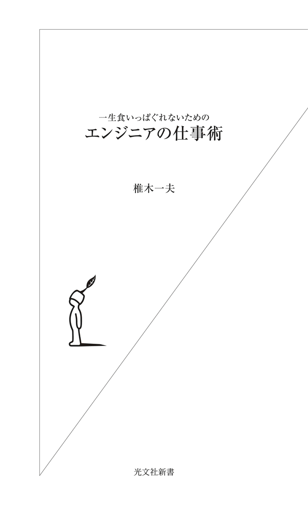
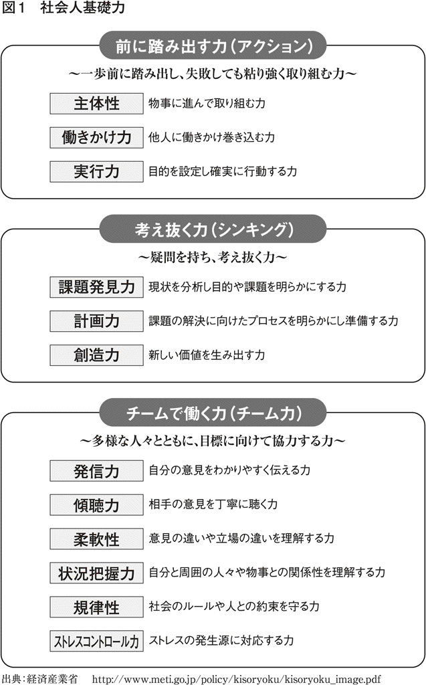
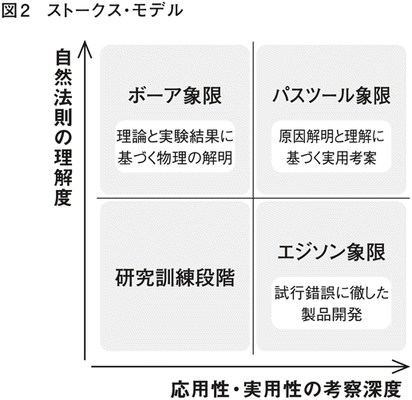

| 一生食いっぱぐれないための エンジニアの仕事術 | |
| 椎木 一夫 | |
| (2012) | |

目 次
私は、一九四七年生まれの団塊の世代です。「日本の技術を自分たちでつくり上げ、世界をリードする」という仕事にあこがれて、エンジニアになりました。そして高度成長期の二二年間を電機メーカーで過ごし、バブルが崩壊する直前に大学に移りました。
大学の理工学部では、次世代のエンジニアを育てるために、研究・教育に携わってきました。会社では上司や先輩たちから、エンジニアのあるべき姿を教えられ、自らも努力して、多少なりとも日本の成長に貢献できたと思います。
しかし苦境に陥った日本の製造業の現状をみるにつけ、エンジニアにも反省すべき点が多々あるように思います。また、現場のエンジニアに要求される能力と大学教育との間に大きなギャップのあることを、ずっと感じてきました。
そこで、自らの経験をもとに、これからの日本の技術をリードする優秀なエンジニアがたくさん生まれることを願い、この本を書いたしだいです。
具体的には、エンジニアを目指している学生、あるいは入社して数年目のエンジニアに向けて、どのようにしてエンジニアの基礎をつくるかということから始めて、エンジニアがプロとして仕事にどう向き合うか、そのヒントをまとめてみました。ぜひ参考にしてもらいたいと思います。
最初に、序章となる本章では、エンジニアはどのような存在であるべきか、ということを、いくつかの例をもとに考えてみましょう。
東北電力の女川原子力発電所は、二〇一一年の東日本大震災において、高さおよそ一三メートルもの大津波に襲われました。それにもかかわらず、原子炉は安全に冷温停止し、最悪の事態を免れました。同じ太平洋岸にある東京電力の福島第一原子力発電所が全電源喪失の結果、炉心溶融を引き起こし大量の放射性物質を広範囲にまきちらしたのとは対照的です。
新聞報道によりますと、津波から女川原発を守ったのは、東北電力の元副社長、平井弥之助氏の安全に対する強い気持ちでした。
平井氏は東京帝国大学土木工学科出身のエンジニアです。氏は原発を建設するにあたって、過去に東北地方を襲った津波についてくわしく調べました。そして、過去最大級の貞観大津波（八六九年）にも耐えられるような場所に建てるべきだと主張し、万が一事故が起きた際にも冷却水が確保できるように取水口を設計しました。これには、過剰な設計でコストがかかるといった反対意見が多数出ましたが、それを押し切って実現させたのです。
もちろん、貞観以上の大津波が来れば、事故は起きたかもしれません。しかし、ろくに検証もせず、経済効率のみを優先させ、事故が起こってから「想定外だった」と言いつくろう、どこかの電力会社の経営者とは訳が違います。女川原発は単に幸運だったということではありません。
平井氏のような人が真のエンジニアといえるでしょう。エンジニアは、工学を実践する者です。工学とは自然科学や数学を人間の利益となるように応用する学問です。「人間の利益となるように応用する」のですから、経済効率だけを追求すればよいわけではありません。平井氏は工学を通して、人々が安心して生活をおくれるように考えたのです。
★ エンジニアは、経済効率だけを追求してはならない
さらにその具体的な行動をみてみると、次の三つのプロセスによって特徴づけられていることがわかります。
すなわち、対象（原発の立地）を解析（Ａ：Analyze）し、大津波にも耐えられるという目的に沿って原発を設計（Ｄ：Design）し、それを実現（Ｒ：Realize）するというＡＤＲのプロセスです。
電気自動車の開発でいうと、（Ａ）車体・モーター・バッテリーなどの種々の特性を解析し、（Ｄ）快適で長時間の走行が可能になるよう部品・素材や構造を決め、（Ｒ）不良を出さないように安く大量につくる、というものです。
これらのプロセスを自然科学や数学を利用して実践する者がエンジニアなのです。
エンジニアはおもに製造業で働いています。もちろん、製造業だけではありません。サービス業や農林水産業など、モノや情報などがつくりだされるすべての産業に存在しています。活動する分野によって、電気技術者、機械技術者、化学技術者、土木技術者、情報技術者などとさまざまに呼ばれることがあります。その本質は、自然科学や数学を利用してＡＤＲプロセスの全部、または一部を担う人たちということになります。
★ エンジニアとは、ＡＤＲのプロセスを実践する者
ところで、エンジニア（技術者）とよく似た存在に、技能者と科学者があります。
技能者（テクニシャン）は、日本語では、技術者とわずか一字違いのため、混同されることもあります。しかし、仕事の内容はまったく違います。技能者とは、いわゆる職人で、モノづくりの実作業に携わる人です。技能者は、必ずしも、自然科学や数学を必要とはしません。その技は多くの場合、知識として伝えるのが困難なことから、親方から弟子へ実際の仕事を通して伝承されます。
ただし、エンジニアと技能者は厳密に区別できないこともあります。エンジニアは、世の中にない新しいモノをつくりだす必要性から、優れた技能者でなければならないこともあるからです。また、技能者は名人芸によって、ほかの人にはつくれないモノを仕上げて、最先端の科学・技術に貢献することもあります。たとえば、ＮＡＳＡから人工衛星に使うために、高精度の金属加工を依頼されたりすることなどです。
エンジニアは、いつ誰がやっても同じモノができる、そういう技術を生みだすことが要求されます。しかし、そうすると誰にでも、かんたんにマネができることになってしまいます。実際、日本企業が長い年月、莫大な投資をして開発した新しい技術や製品が、他国にマネをされ、安く売られて競争に負けてしまうことが起こっています。技術は特許によってある程度は守られますが、知的財産権の保護が不十分な国ではかんたんに模造品がつくられてしまうのです。そうでなくても、およそ二〇年の特許の期限が切れれば自由に使えます。
ところが、技能者はその人にしかできない技を使うので、かんたんにはマネされません。理想的なモノづくりには、新技術を開発するエンジニアと匠の技（ノウハウ）をもつ技能者、あるいはそれらを兼ね備えた人が必要ということになります。
さて、科学者（サイエンティスト）も、エンジニアと混同されることがあります。科学はもともとヨーロッパにおいて貴族の趣味であったため、欧米では科学者の方がエンジニアよりも上に見られることがありますが、もちろんそれは偏見です。
科学者は真理を探求します。そして、発見した真理から、自然科学と数学に新しい法則を打ちたてます。エンジニアはそれを利用するわけです。
しかし、エンジニアがＡＤＲプロセスに自然科学や数学を応用しようとするとき、既存の学問の中に利用できるものがなければ、自らつくりだす必要があります。ですから、優れたエンジニアは、自ら真理を探究する科学者となることがしばしばあります。
逆に、科学者も真理を探究するために、新しい技術をつくりだすエンジニアとなることがあります。たとえば、ニュートンは万有引力の法則を発見した科学者であると同時に、天文学の研究のために、光学に基づき、凹面鏡を用いた望遠鏡を設計したエンジニアでもあります。さらに、実際に望遠鏡を製作した技能者でもありました。
★ エンジニアは、ときに技能者に、ときに科学者になる必要がある
私たちが今日、便利で快適な生活ができるのは、科学者のおかげであることは間違いありません。しかし、科学の知識が、そのままのかたちで役にたつようになったわけではありません。科学者が発見し理屈をつけた自然科学現象を、世の中に役だてようと努力したエンジニアたちがいたからです。その一例を、次に紹介しましょう。
電磁気学は一八〇〇年代に、科学者たちによって急速に進歩しました。ここで、この時期の彼らの仕事を順番にたどってみます。
一八二〇年に、デンマークのエルステッドが、電流が通っている導線の近くに置いた方位磁石の針が振れることから、電流の磁気作用を発見します。また同じ年、フランスのアンペールは、電流が進む方向に対して、右ねじの回転方向に磁場が生じるというアンペールの法則を発見しました。
一八二一年に、イギリスのファラディは、電流を通した導線と磁石の間に相互作用があることを確認し、電流のつくる磁場が磁石の作用と同じであることを確かめました。ファラディは導線に電流を通して固定磁石のまわりに導線を回転させる「ファラディのモーター」をつくり、公開実験をしています。さらに一八三一年には、ファラディが、導線のループを通り抜ける磁力線が時間的に変化すると、導線に誘導起電力が発生するという電磁誘導の法則を発見しています。のちにイギリスのマクスウェルがこれらの電気磁気現象を数学的にまとめ、電（磁）波の存在を予言しました。
では、こうして科学者たちが生みだした電磁気学を、エンジニアたちはどのように世の中に役だつものにしていったのでしょうか。
電磁気学の応用としてもっともわかりやすいものは、新幹線や電気自動車などを走らせるモーターでしょう。ファラディが示したように、磁場の中で電流を通すと、電流は力を受け、電気エネルギーが、ものを動かす機械エネルギーに変えられます。
しかし、力を受けて電流が安定な向きにむいてしまえば、力は発生しなくなりますから、つねに効率よく回転力を得るには工夫が必要です。この点を踏まえて、アメリカのダヴェンポートが実用に耐えられる直流モーターを発明しました。整流子とブラシを使って半回転ごとに電流の方向を切り替えることで、つねに同一方向に回転力を出すことに成功したのです。ダヴェンポートは一八三七年に、この技術で特許を取得しています。
さらに一八八八年には、アメリカのテスラが実用的な交流モーターを発明し特許を取得しています。これは、交流電流の位相差を使って回転する磁場をつくり駆動力を得るものです。直流モーターのようにブラシを使わないので電流を切り替えるときに火花が飛ぶことがなく、信頼性の高い、より実用的なモーターになりました。
モーターの原理を逆に使えば、機械エネルギーを電気エネルギーに変えることができます。テスラがつくった交流発電機は、一八九六年に米ウェスティングハウス・エレクトリック社によりナイアガラ瀑布の水力発電所に取りつけられ、送配電が行なわれるようになりました。
さて、一八八八年に、ドイツのヘルツは、高電圧をかけて火花放電させる装置を用いた実験で、マクスウェルが予言した電波が実際に存在するかどうかを検証しました。その結果、電気は波となって空間を伝わっていくことが確かめられたのです。
これに刺激されたイタリアのマルコーニは、電線を使わずにメッセージを遠隔地に伝送することを目標に、電波を使った実用的システムを完成させました。すでに一八三七年に、アメリカのモールスがスイッチを使って電線を通る電流をオン・オフし、信号（モールス符号）を送る電信システムをつくっていました。電波を使えば、電線なしでそれが可能になります。
マルコーニはまず、そのころ研究されていた無線の装置をお手本に実験を始め、送信機と受信機のアンテナをできるだけ長くし、かつ高い位置にたて、大幅に通信距離を延ばしました。その後、公開実験をくりかえして無線通信の有用性を訴えて資金を集めました。検波器を改良して受信機の感度を高め、送信機の出力を上げるなどして、一九〇七年には大西洋を横断する無線電信サービスを確立したのです。一九〇九年には、無線通信発展への貢献に対し、ノーベル物理学賞が贈られています。
電磁気学の重要な応用例をもう一つご紹介しましょう。
今日、パソコンなどの記憶装置として使われているハードディスク装置は磁気記録の原理を使っています。この原理を考案したのは、デンマークのポールセンです。
ポールセンは一八九八年に鋼線式録音機を発明しました。この録音機は、円筒に鋼線を巻きつけたシンプルな装置で、鋼線をはさむように電磁石が取りつけられています。
電磁石のコイルに音声信号の電流を流しながら鋼線を動かします。すると、アンペールの法則にしたがって電磁石が電流に対応した磁場を発生します。その磁場が鋼線の中に次々と小さな磁石をつくります。こうして、音声信号が磁石として記録、つまり録音されていくわけです。
再生はこれと逆のしくみです。ファラディの法則によって、鋼線の磁石がつくる磁場の変化に対応して電磁石のコイルに信号電流が誘起されることで、録音された音が再生されるのです。音声信号の代わりにデジタル信号を使った装置がハードディスクというわけです。ポールセンの鋼線式録音機は一九〇〇年のパリ万博に出品され金賞を受賞しています。
いかがでしょう？ エンジニアがいなければ、電気を便利に使うことも、無線で通信することも、そして情報化社会を実現することもできなかったのです。
★ エンジニアがいなければ、情報化社会は実現しなかった
エンジニアが世の中を変えるほどの技術を生みだすためには、不屈の精神で努力を重ねなければなりません。
中村修二氏は、徳島大学工学部電子工学科を卒業後、大学院修士課程を経て一九七九年に日亜化学工業株式会社に入社しています。そして、一九九三年に高輝度青色発光ダイオード（青色ＬＥＤ）の世界初の製品化に成功しました。自伝を読むと、氏は青色ＬＥＤを製品化したいという思いをずっともちつづけていたことがわかります。
一時代前の半導体の研究分野において、青色を強く発光するＬＥＤは、実現不可能といわれてきました。ＬＥＤは電気を効率よく光に変えることができるので、白熱電球などに比べてエコな光源です。
しかし、赤色や緑色のＬＥＤができるのに、青色ＬＥＤはできませんでした。もしできれば、赤・緑・青の光の三原色を混ぜ合わせてすべての色がつくれるので、さまざまな色の照明が可能になるなど応用範囲が格段に広がります。世界中の研究者が挑戦しましたが、十分な明るさで光る青色ＬＥＤは実現できませんでした。中村氏はこの超難問に挑戦したのです。
しかしいつの世も会社というものは、実績のない若手社員が夢を語るだけでは、希望したことをやらせてくれません。中村氏も入社後しばらくは、会社に命令された仕事を唯々諾々とこなしました。
もともと日亜化学は、カラーテレビのブラウン管に使う蛍光体などをつくる化学会社でしたが、折から新たな市場を目指して、それまでに手がけたことがない、化合物半導体材料を製造しようとしていました。中村氏はその仕事を任せられたのです。
会社は大学と違って、実験道具などをすべて用意してくれるわけではありません。十分な設備や研究費がない中、古い電気炉を修理するなどしてほとんど独力で設備を手づくりし、実験ができるようにしました。何度も失敗して設備をダメにし、そのたびに自分で修復してやり直したようです。そしてついに新製品の開発を成功させ、社長に実力を認められたのです。
会社に入社したてのころは、先輩が面倒をみてくれて、仕事の段取りもつけてくれるでしょう。しかし、すぐ放っておかれるようになって、今度は逆に後輩の面倒をみる立場になります。中堅ともなれば、仕事の段取りは全部、自分でつけていかなければなりません。それは日亜化学にかぎらずどの製造業でも、だいたい似たりよったりです。
とくに海の物とも山の物ともつかない新技術を開発するときは、全部自分でやらなくては何事も進みません。十分な予算はない、場所もない、設備もない、人もくれない。そのくせ、結果を早く出せとせっつかれる......。中村氏もその苦しみを味わいました。しかし、地道な努力で困難を乗り越えたわけです。
中村氏は命令された新製品の開発を成功させた後、社長に直談判して、青色ＬＥＤ開発の認可をもらいました。まずその第一歩として、開発にあたって必要なＭＯＣＶＤ（有機金属気相成長法）の技術について勉強するため、一九八七年にフロリダ州立大学電子工学部に一年間の短期留学をしています。そして帰国後、赤外ＬＥＤをつくる市販のＭＯＣＶＤ装置を購入します。
もちろん、そんな出来合いの装置と既存の知識・技術だけで、今まで誰もつくれなかったものができるようになるわけがありません。そこで、装置の構造を工夫して、一から組みたて直し、試行錯誤を重ねた末、青色ＬＥＤの材料である窒化ガリウムの薄膜単結晶を成長させたのです。
装置の改良には、大学院時代や留学時代に学んだ知恵、あるいは会社の開発などで培った技量が活かされました。さらに何度も失敗を重ねながら、単結晶膜の欠陥をなくし、ついに青く強く光るＬＥＤをつくりだしたのです。こうした地道な努力の積み重ねに、神様がごほうびを与えたのかもしれません。
★ 新技術開発のウラには、地道な努力と不屈の精神がある
科学者とエンジニアとでは、責任についての考え方が大きく異なっています。
一般に、「科学者は知的好奇心の赴くまま真理を探究すべきである。その結果をどう使うかは利用者が考えるべきことで、科学者に社会的責任はない」とする考えが強くあります。
たとえば、科学者は自分の興味のために核分裂のしくみを明らかにするのであって、それを利用した原発の安全性は利用者であるエンジニアに責任があるというわけです。科学者の責任はおもに説明責任であって、科学の成果を利用した産物には責任がないということです。
しかし、エンジニアには自分がつくりだしたモノに対して責任があることを忘れてはいけません。人の役にたつ製品も、ひとつ間違えれば〝凶器〟となって、人の命を奪ってしまうこともあります。そうならないよう、開発の過程で万全の注意を払わなければなりません。
二〇〇五年、ナショナルのＦＦ式石油暖房機で一酸化炭素中毒による死亡事故が発生しました。原因は、バーナーに外気を送るゴムホースに亀裂が入り不完全燃焼を起こしたことによるものと考えられています。この型の暖房機は一九八五年から九二年ごろにかけて製造され、およそ一五万台が販売されました。発売から二〇年近くが経過し、ゴムが劣化したとみられます。
この事故のあとリコールが行なわれましたが、不幸なことに対策漏れの製品でふたたび同様の死亡事故が発生しました。そこで会社は、対象製品を、状態にかかわらず一律五万円で引きとることを決め、「ナショナルのＦＦ式石油暖房機をお使いのお客様へ、たいせつなお知らせです......」とテレビ・コマーシャルやネット上で、連日くりかえし呼びかけました。
ナショナルは、視聴者やユーザーに自社のマイナスイメージを与えるにもかかわらず、連日テレビＣＭで製品の引きとりを呼びかけたことで、会社としては社会的責任を十分に果たしたといえるでしょう。
しかし、厳しい言い方になりますが、事故がゴムの経年劣化によるものとはいえ、ＦＦ式石油暖房機を開発したエンジニアは、そのことも見越した上で製品をつくらなければならなかったのです。最近の家電品の多くは、数年で買い換えることを想定した消耗品となっています。しかし、何年間使われようとも、一台たりとも人命に関わるような事故を起こしてはならないのです。
二〇〇二年、三菱自動車製トレーラーのタイヤが脱落して母子三人を直撃し、母親が死亡、二人の子供が重傷を負う事故が起こりました。三菱自動車による同様のタイヤ脱落事故は、その一〇年くらい前から起きていたようですが、三菱自動車はその原因をユーザーの過積載や整備不良によるものとしてきました。
ところが警察の捜査の結果、車軸とタイヤのホイールを接続するハブが応力に耐えきれず、亀裂が発生し破壊されたことがわかりました。しかも、そのハブがたまたま不良だったわけではありません。実車実験が不十分で、もともと強度を満足する構造ではなかったとみられています。三菱自動車も事故の原因が設計上の問題にあることを認め、ようやく二〇〇四年になってリコールを行ないました。
エンジニアの設計不良は、人命に関わる重大事故につながりかねません。実車実験は法律で義務づけられていなかったようですが、義務がなければやらなくてもいいという問題ではもちろんありません。また設計不良であったとしても、会社が最初の事故のときに自分の非を認め、早期にリコールを行なっていれば、死傷事故は起きなかったかもしれないのです。
三菱自動車の例は、エンジニアの責任というよりも経営者の責任ですが、いずれにしてもエンジニアは自分のつくった技術や製品が、ひとつ間違えれば〝凶器〟にもなりうることをしっかりと自覚していなければなりません。
一九五五年、七〇歳を過ぎて日立製作所の顧問となった馬場翁（日立の創業者の一人）は、〝落ち穂拾い〟と称して得意先の工場や発電所を訪れ、現場の作業員に納入された機械の苦情を聞いてまわり、苦情があれば不良の原因を分析して対応しました。これは、製品事故・クレーム処理という実務だけではなく、製品事故絶滅を願った取り組みです。
馬場翁は、「誰でも失敗を人に知られたくないと思うのは人情である。しかし、失敗を隠すことは、失敗の上にさらに不正直という悪を加えることになる。失敗を正直に認めて、お客の迷惑を最小にすることが、失敗の罪を軽減することである」と教えています。
★ エンジニアは自分の技術に責任をもたねばならない
自分の技術が誤った使われ方をされないよう注意を促すことも、エンジニアが自分の技術に責任をもつことのひとつです。
最近では、商品のラベルや説明書などに「××の条件のもとではお使いにならないでください」などと過剰とも思えるほどの注意書きがあります。これは製造物責任法（ＰＬ法）の影響もありますが、実際に商品が使用に適さない状況で使われると、思わぬ事故が起きる可能性があるからです。
そうならないためにも、エンジニアは自分の技術の特性を、十分に認識している必要があるのです。
一九八六年一月二八日、スペースシャトル・チャレンジャー号は、米国フロリダ州ケネディ宇宙センターから打ち上げられた直後に、炎をあげ、機体が空中分解しました。その結果、七人の乗組員が命を落としました。
事故は、ブースター（補助推進）ロケットのエンジンが発生する高温・高圧の燃焼ガスが漏れて吹きだし、そばにある燃料タンクに悪影響を及ぼして異常な力が働き、最終的にシャトルが破壊に至ったものと考えられています。ブースターロケットの接合部はＯリングでシールされていて、燃焼ガスが漏れださないようになっているはずでした。しかも、シールは二重にされていて安全というのが、ＮＡＳＡの主張だったようです。
Ｏリングは、わかりやすくいうと〝大きな輪ゴム〟です。これを接合部にはさんで押しつけると、弾力のあるゴムが変形して接合面と密着し、隙間がふさがれ、内部のガスが外に出ないようにシールされます。ところがゴムは、低温になると弾力を失って硬くなり、シールができなくなります。チャレンジャー号打ち上げ当日の気温は零下一度でした。それ以前のシャトルの打ち上げで、もっとも気温が低かったときでも一二度だったのです。零下一度ではゴムはシールの機能を失っていたと思われます。
ブースターロケットの製造を担当したサイオコル社は打ち上げ前夜ＮＡＳＡに対し、翌朝の打ち上げを中止するように進言しています。サイオコル社のエンジニアでＯリングの主任技師だったロジャー・ボイジョリー氏が、翌朝に予測された気温からＯリングのシール性能に懸念をもったからです。予想気温とゴムの温度特性をもとに論理的に考えて、打ち上げの中止を求めたのです。
ところがＮＡＳＡには、どうしてもこの日に打ち上げたい事情があったらしいのです。チャレンジャー号には、初の民間宇宙飛行士として女性高校教師のマコーリフさんが乗りこみ、全米の子どもたちに宇宙から授業を行なうことになっていました。当時予算を削減されていたＮＡＳＡにとって、このイベントは、宇宙開発をアピールして財政難を打開する、またとないチャンスだったわけです。
また、チャレンジャー号は当初一月二二日に打ち上げられるはずでしたが、悪天候などのために中止になりました。ＮＡＳＡはこれ以上延ばしたくなかったこともあったようです。
事故調査委員会の委員であったファインマン氏（一九六五年のノーベル物理学賞受賞者）の著作を読むと、次のような噂が流れていたことがわかります。「二八日の夜にはレーガン大統領の年頭教書演説があり、その演説の最中にマコーリフさんが大統領や議会とやりとりするシナリオができていた」というものです。その真偽はともかく、打ち上げは強行されることになります。ＮＡＳＡは、サイオコル社の進言を聞き入れず、同社に再検討を要請しました。サイオコル社としては、重要顧客の意向には逆らえません。結局、サイオコル社の経営陣は政治的判断で打ち上げ中止の進言を撤回しました。
実は、以前にも、シャトル打ち上げの際に、ガス漏れが発覚したことがありました。気温は零下一度よりも高かったのですが、原因は同じく不完全なシールでした。しかし、幸運にも、このときのガス漏れは重大事故につながりませんでした。そういった経緯もあって、経営陣は、ガス漏れしても大丈夫だろうと、高をくくったのでしょう。ほんとうは、このとき、シール性能について詳細に検討し直しておくべきだったのです。
Ｏリングのシール性能は、温度だけでなく、接合の仕方などさまざまな要因に影響されます。しかし低温では、シールができない可能性の高いことはわかっています。たしかに、ガスが漏れても、それだけで機体が分解するとはかぎらないでしょうが、そんなイチかバチかに人命を賭けてよいはずがありません。ＮＡＳＡはボイジョリー氏の論理的な判断にしたがって、打ち上げを中止すべきであったのです。チャレンジャー号の飛行士たちは打ち上げに同意しましたが、Ｏリングの問題については、何も情報が与えられていなかったということです。
この事故のように、技術にくわしくない責任者が政治的な要因をもとに判断を下し、その結果尊い人命が失われたことは、過去に何回もくりかえされてきました。その意味で、これはまぎれもなく人災です。
サイオコル社のボイジョリー氏は、宇宙飛行士の身を守るために、経営陣に最後まで異議を申したてました。残念ながら事故は防げませんでしたが、彼はエンジニアとしての役割は果たしました。エンジニアはボイジョリー氏のように、自らの技術の特性をきちんと認識し、誤った使い方をされそうになったときは、たとえそれが自分の所属する会社であっても反対する勇気が必要なのです。
★ エンジニアは自分の技術が誤った使われ方をしないよう注意する
エンジニアは会社の言いなりになって、会社や自分の利益のためだけに働くわけではありません。社会の一員として、世の中の役にたつために働く存在です。製造業の創業者の中には、技術を世の中に役だてようというエンジニアとしての理想を実現するために、自分の会社を立ち上げた人も多くいます。
日立製作所の創業者・小平浪平氏は一九〇〇年に東京帝国大学電気工学科を卒業したエンジニアです。氏は大学卒業後、秋田県にある小坂鉱山に電気技術者として入社しました。そこで製錬に使う電力を確保するための発電所建設に携わり、二年後に完成させています。しかし、使用した電気機械のほとんどが外国製で、氏はこれで日本の将来はどうなるのかと忸怩たる思いを抱いたようです。
小坂鉱山で電力をつくる仕事に魅せられた小平氏は、その後、東京電燈株式会社（現：東京電力）が計画していた日本最大（一九〇二年当時）の水力発電所建設への参加を志します。準備のために、広島水力電気株式会社に一年契約で勤め、経験を積んで東京電燈に移りました。目的達成のために着々と準備し、努力を積み重ねたわけです。
しかし、水力発電所建設に参加してみると、そこでもスイス製の水車、ドイツ製の発電機とアメリカ製の変圧器が使われていました。設置も外国人エンジニアの指導のもとで行なわねばならなかったようです。ちょうど日露戦争に勝利して、日本が世界の列強に認められた時期ではありましたが、いまだ主要な工業製品はすべて外国製品で占められていたのです。小平氏は日本の産業発展のためには、外国の技術に頼らず日本人の手で電気機械を自主開発することが不可欠であると強く思ったようです。
そこで、鉱山の電化を計画していた鉱山王・久原房之助氏の誘いに応じて久原鉱業所日立鉱山に転身する決心をします。大学時代からの親友であり、逓信省の技師で発電所の主任検査官の渋沢元治氏からは「日本の産業発展のためには、水力発電の開発が急務だ。今のエリートコースを捨てて、茨城の山奥に行くことはないだろう」と止められましたが、小平氏は「今の仕事は、外国から装置を買い入れて、外国人のエンジニアを雇って据えつければよいだけで、誰でもできる。それよりは電気機械の国産化が不可欠だ」と答えたといいます。
当初、日立鉱山でも排水用のモーターなどに外国製の設備が使われていましたが、荒っぽい使われ方のせいもあって故障が多かったといいます。その修繕に追われる中、小平氏は「故障しないモーターが日本人の手でつくれるはずだ。できないのはつくろうとしないからだ」との思いを強くし、鉱山で使う電気設備の内製に取り組みました。そして、努力の結果、ついに国産初の五馬力モーターを完成させました。
日立の創業者の一人で、のちに日立の技術開発をリードすることになる馬場粂夫氏は、小平氏の勧めに応じて一九一〇年に日立鉱山に入社しています。そのときに、小平氏の活躍を知る鉱山事務所長から、「米国にＧＥというのがあるが、大体ざっとああいう形にしでかしてもらいたい」と訓令を受けたといいます。
ＧＥ（ゼネラル・エレクトリック）は一八七八年に設立されたエジソンの電気照明会社を母体とする、世界最大の複合企業です。当時、すでに一大電機メーカーとして、発電機、モーターなどの電気製品で世界をリードしていました。その一流メーカーを、アジアの片隅にある日本の、そのまた片田舎の小さな工場が目標にしたのです。国産技術を開発して世界の列強と伍する存在となろうという、当時の日本人の意気込みが伝わってくる話です。
こうして小平氏は久原鉱業所の機械工場として日立製作所を設立し、のちに独立してモーターをはじめとしてポンプ、発電機、変圧器など多くの国産電気機械を世に送りだしました。当時は鉱山のもうけに比べれば、モーターの利益などわずかなものです。小平氏が目先の利益にこだわって外国製品の修繕、模倣のみで満足していれば、今日の日立製作所はなかったでしょう。
このように今日、大企業となった製造業の創業者は、会社を立ち上げる際に、みな大きな志を抱いていました。もちろん、志を達成するには資金が必要であり、そのためには利益を上げる必要があります。しかし、もうけは手段であって目的ではありませんでした。
今日、多くの製造業が、世の中を良くするという気概や理想を失い、自社や株主の利益のみにこだわるように思えるのは誠に残念な気がします。低賃金だからといって安易に外国人労働者を雇い入れたり、安い労働力と低い法人税を求めてやみくもに工場を海外に移転させたりするばかりでよいのでしょうか。日本が元気を失っている今こそ、エンジニアの原点、すなわち、技術をもって世の中に役だつ、という精神に返るべきではないでしょうか。
★ エンジニアよ、大志を抱け！
製造業の創業者たちは、技術や製品によって世の中を豊かにするだけではなく、つねにつぎの時代のことも考えていました。
松下幸之助氏は日本を代表する電機メーカー、パナソニック（旧：松下電器産業）の創業者です。氏は大阪にできた路面電車を見て感動したことから、電気に関わる仕事を志したといわれています。電球の取り外しがかんたんにできるソケットを考案して起業し、その後、二股ソケットの大ヒットなどにより、事業を拡大していきました。当時、電力会社は、一般家庭に電気の供給口を一つしか設置せず、電気使用料金を定額とする契約を行なっていました。そのため、電灯をつけているときには、ほかの電気製品を使用できなかったのです。それが、二股ソケットによって、電灯と電気製品を同時に使用できるようになりました。
このように、松下幸之助氏は発明家であり実業家でもありましたが、同時に教育にも深い関心をもっていました。幸之助氏が松下政経塾を設立して政治家の育成に力を注いだことは、よく知られています。また、ＰＨＰ研究所をつくり、出版事業を通して倫理教育にも寄与しています。ＰＨＰとは、Peace and Happiness through Prosperityの頭文字をとった略語で、物心両面の繁栄により平和と幸福を実現していくという幸之助氏の願いを表しています。
ところで、私が今年（二〇一二年）の三月まで奉職していた慶應義塾大学理工学部も松下幸之助氏と縁があります。
慶大理工学部の前身は藤原工業大学です。藤原工業大学は、王子製紙の社長であった藤原銀次郎氏によって一九三九年に設立されました。藤原氏自身は実業家であってエンジニアではありませんが、次世代の産業界で活躍できるエンジニアの育成を願い、私財を投じて大学をつくったのです。実学を目指し、国際交流などに役だつ語学教育に力を入れるなどした藤原工業大学でしたが、最初の卒業生が出る一九四四年に、工学部として慶應義塾に寄付されました。
戦後、慶大工学部（のちに理工学部に改組）は、校舎が米軍に接収されたことから、川崎の登戸や東京の小金井など各地を転々とし、ようやく一九七二年に、現在の矢上キャンパス（横浜）に落ち着きます。その際に、松下幸之助氏の資金援助を得てつくられたのが、松下記念図書館です。現在は、理工学分野の専門図書館として、学生、教職員はもとより、学外の研究者にも広く開放され、情報の提供を通じて、産業界、学会に寄与しています。
豊田喜一郎氏は一九二〇年に東京帝国大学工学部機械工学科を卒業したエンジニアです。氏は〝日本の発明王〟といわれた豊田佐吉翁の長男です。
大学卒業後に地元の名古屋に戻った喜一郎氏は、父親が創業した豊田紡織に勤めます。そこで自動車産業が将来大きく発展すると考えた喜一郎氏は自動車工場を建設し、自動車エンジンの研究・設計に着手しました。当時、自動車の国産は不可能といわれていましたが、米ゼネラルモーターズ社などの技術の模倣から出発し、困難を乗り越えて、一九三七年に、トヨタ自動車工業を設立します。このような経験の中で、喜一郎氏は、これからの日本は外国技術のマネから一日も早く脱却し、日本独自の技術を確立する必要があると痛感したのです。
そのためには研究と教育が必要であると考えた喜一郎氏は、創業時にすでに、社業繁栄の暁には大学を設立するという夢を抱いていました。とくにこれからは独創的な自主技術の開発が待望される時代になるにもかかわらず、日本ではずっと画一的な教育が行なわれている、この問題を解決したい、という強い思いがそこにはありました。
氏は一九五二年に亡くなりますが、約三〇年後の一九八一年、次の産業界を担うエンジニアを育成し、社会に貢献することを目的として豊田工業大学が設立されました。喜一郎氏の夢はここに実現したのです。
同大学の建学の理念は、「新技術の開拓能力を有する創造的で実践的な開発型の技術者・研究者を育成する」ことにあります。これは「研究と創造に心を致し、常に時流に先んずべし」という豊田佐吉翁の遺訓にもとづくものでしょう。
当初、豊田工業大学は、工業技術に関する実務経験のあることを受験資格とする社会人大学でしたが、現在は一般に門戸を開いています。発明で社会に役だとうとする翁の考えが、自動車の国産技術開発に尽力した豊田喜一郎氏に、さらに次世代を担うおおぜいのエンジニアたちに受け継がれようとしています。
湘北短期大学は、ソニー株式会社の創業者・井深大氏の「実技を通じて智識のみでなく、世の中を活きていく、人を率いて行ける人柄を身につける教育」を実践することを建学の理念として、一九七四年に設立されています。氏は学歴偏重の世の中を憂い、自分のやりたいことを追求し実現していく人材の必要性を強く感じていたようです。
湘北短期大学の前身は、一九六五年につくられたソニー厚木学園高等学校です。ソニー厚木工場に勤務する若い女子社員に優れた高校教育を提供することを目的としてつくられ、それが九年後、あらたに短期大学として出発したわけです。
このように高度成長期の製造業の創業者たちは、従来の教育に対して問題意識を強くもっていたことがわかります。そして、次代を担う人材の育成を目指して、真の教育に努めたのでした。彼らは自社の繁栄を追求するだけでなく、次の世の中のことを考えていました。
また、大手製造業の多くは社内に、専門学校や短大に相当する教育機関を設け、技能を教えることにくわえて、従業員の人間を磨き、世の中の役にたつ人材を育成していました。過去の製造業においては、従業員は使い捨ての道具ではなく、大事な宝であったわけです。その宝たちが、日本に驚異的な経済成長をもたらしたのです。
★ エンジニアは次の世代のエンジニアを育てなければならない
＊
もう一度確認しますと、エンジニアとは自然科学や数学を利用してＡＤＲプロセスの全部または一部を担う人たちです。しかし、ここまでの話で、それだけではないことに気づいたことでしょう。
すなわちエンジニアは、世の中の役にたつ新しい技術や製品を開発する発明家であり、論理的な思考を地道に積み重ねる思索家であり、新しい価値観や市場を生みだす開拓者であり、自分がつくったモノに対して責任を負う最高責任者なのです。いかがでしょう、
実にやりがいのある仕事だと思いませんか？
エンジニアとして一生食べていくには、何といっても基礎が重要です。この章では、プロのエンジニアにとって土台となる話をしていきます。
その前に、まず日本の製造業をとり巻く状況について、かんたんに触れておきましょう。
二〇一一年、日本の貿易収支は三一年ぶりに黒字から赤字に転落しました。東日本大震災の影響も大きいでしょうが、もっと大きな原因として、製造業の地盤沈下が考えられます。とくにエレクトロニクス関連事業は、現在、たいへん厳しい状況にあります。
一九八〇年代後半から九〇年代前半にかけて、日本企業の半導体分野のシェアは、世界市場のおよそ半分を占め、米国と一、二位を争っていました。しかし、日本のシェアは九五年ごろから低下しはじめ、その後も米国との差は開く一方です。それどころか、現在では、韓国に追いつかれてしまいました。とくに、日本が一時期支配したＤＲＡＭの市場は、韓国勢に完全に牛耳られています（ＤＲＡＭとは、データの書きこみと読みだしが随時可能な半導体メモリのこと）。
日本メーカーがトップを走ってきた液晶などの薄型テレビでも、二〇一一年後半には、世界シェアのトップを韓国勢に奪われてしまいました。
また、エレクトロニクス関連分野では大規模なリストラを実施する企業が増えています。こういう状況に対し、日本の技術力低下を憂える声が聞こえてきます。
しかし、これは必ずしも技術力の問題だけとはいえません。為替レートからくる円高と人件費の影響も大きいと考えられます。
日本はエレクトロニクスの生産技術で先行してきました。ほとんどゼロの状態から技術を立ち上げた日本のエンジニアは自信をもってよいと思います。しかし、技術がほぼ完成している今、安い人件費を武器に製品を安くつくれる国が勝つに決まっています。日本は円高で高い人件費というハンデがあるのですから、現状はいたし方ないでしょう。
ただ、いくら素晴らしい技術をつくったとしても、お客さんは技術そのものを買うわけではありません。その技術でつくった魅力的な製品を買うのです。同じような技術で、お客さんにアピールするだけの安くて良い製品がつくれなくなったことも、日本の地盤沈下を招いた大きな原因だと思います。
みなさんは、北海道・旭川の旭山動物園をご存知でしょう。ふつう動物園はおおぜいのお客さんに来てもらうために、珍しい動物をたくさん集めます。上野動物園のように、規模が大きく予算が豊富な動物園はそれができます。しかし、旭山動物園のような地方の小さな動物園は、同じようにたくさん珍獣を集めて飼育することはなかなかできません。その結果、入場者が激減したり、廃園に追いこまれたりした動物園もたくさんあります。
ところが、旭山動物園は、行動展示に代表される新しい工夫をして、珍獣だけに頼らずにお客さんを集めました。行動展示とは、従来のように動物の姿をただ見せるだけでなく、オランウータンがロープを伝って空中散歩したり、ペンギンが泳ぎまわったりする様子など、自然に近い状態の中で動物たちのいきいきとした生活行動を見せる展示方法です。これにより、旭山動物園は上野動物園と日本一の入場者数を競うまでになりました。
同じ技術（動物）であっても、見せ方によってお客さんの反応はまったく違います。これまで日本企業は、「良い技術（珍獣）さえそろえていれば、お客さんが来る」と考えるだけで、お客さんが何を欲しているかということをあまり考えてこなかったのではないでしょうか。経営者がこういう考えでは、日本の製造業は立ち直れません。
エンジニアも、「何でもおっしゃっていただけたら、ご希望のモノをおつくりします」と澄ましているわけにはいきません。これからのエンジニアは、技術を生みだして満足するのではなく、いかに世の中のニーズに応える技術を生みだすかを考える必要があります。
また、日本の技術が新興国にかんたんにマネをされたということは、もともとそんなに難しい技術ではなかったのかもしれません。これからのエンジニアは、こうした現状を真摯に受け止め、容易にマネのできない技術をつくっていかなければなりません。そのためには、専門分野を究めるだけでなく、若いうちから広く世の中のことを知って感性を磨いておく必要があるのです。
★ エンジニアはかんたんにマネのされない技術をつくらなければならない
一般的に、エンジニアになるには、製造業などの会社に勤めるのが早道です。しかし、必ずしも、大企業に就職しろといっているわけではありません。
過去の大量生産・大量消費の時代には、スケールメリットを活かせる大企業は、市場において圧倒的に有利でした。たしかに大企業の社員は賃金や福利厚生面で恵まれていましたし、会社が倒産することなどはほとんど考えられませんでした。
また、ひと昔前は有名大学を卒業して学卒のレッテルを貼ってもらえば、大企業に勤めることができて、そこで言われた通りに働いていれば一生安泰だったわけです。
しかし今はそうはいきません。最近では、必ずしも大企業が安泰とはいえなくなっています。つぶれるまではいかないまでも、本業の不振から事業の転換を図るケースはいくらでもあります。もともと大企業に入ったつもりが、所属する部署が切り離されて子会社に転属になるとか、あるいは合併や売却などによって会社そのものが変わってしまうことさえあります。
二〇年ほど前に、大手鉄鋼メーカーがあらたに半導体事業に乗りだす計画をたて、半導体に興味のある私の研究室の学生が勧誘されて入社したことがありました。ところが数年後、その鉄鋼メーカーは半導体事業から撤退することになりました。その学生は悩んだ末、別の半導体メーカーに転職しました。
日立製作所は二〇〇二年にＩＢＭのハードディスク事業を買収しましたが、二〇一一年にはその事業をウェスタンデジタルに売りわたしました。また、日本電気と日立製作所は、一九九九年に、ＤＲＡＭ部門を統合してエルピーダメモリ（設立当初はＮＥＣ日立メモリ）を設立しています。ところが、エルピーダメモリは二〇一二年に会社更生法の適用を申請する事態に陥ってしまいました。
このように大企業に入社したのに、いろいろな理由でいつのまにか会社が変わってしまい、つまり給料などの賃金や福利厚生が変わり、極端な場合は職を失うことだってあるわけです。
しかし同じ会社に勤めつづけたとしても、経営陣の考え方が変われば、会社の業務内容や気風も変わります。二二歳で大学を卒業して、六〇～六五歳の定年まで約四〇年前後勤めるとすると、その間に実質的な会社の中身がまったく変わってしまい、自分の居場所がなくなってしまうこともありえます。大企業に勤めつづけたとしても、そうそう気楽にはしていられません。最近は、大企業でも事業規模を縮小して、従業員を解雇する例が増えています。
もともと大企業は、「新入社員の五人に一人くらいがものになればいい」と思っていたふしがあります。
一人の人間がきちんと掌握できる人数は、およそ五人くらいです。最近は、二〇人を超えるような大部隊を一人のリーダーが直接指揮することもありますが、このようなフラット型組織は短期的なプロジェクトには対応できても、長期的な人材育成には向いていません。そこで、会社の基本構成は、五人程度からなる係が五つくらい集まって一つの課をつくり、五つ程度の課が集まって一つの部をつくるのがふつうです。
そうなると、五人の係長のうち課長になれるのは一人だけ、五人の課長のうち部長になれるのも一人だけです。つまり会社の中枢を担うのは五人のうちの一人だけということになりますから、新入社員が五人いた場合、彼ら五人が同じように優秀では、会社は処遇に困るのです。四人は当面の労働力として会社にとって必要ですが、先々はリストラの候補者ということになるわけです。
日本経済が成長期から成熟期に入った現在は、幹部のポストも減っています。労働力は派遣社員、中枢を担うのは正社員と切り分けて少数精鋭で臨む企業も増えています。その意味で、正社員のおかれた状況は以前よりも厳しくなっているといえます。ですから、大企業に入社できたから安心と思うのは、とんでもないことです。
エンジニアは、状況がどう変わっても、やっていけるだけの実力が必要であることがおわかりいただけたでしょう。つまりプロ野球選手のように、どの球団に入っても活躍できるだけの実力が要求されているわけです。ですから今の学生は、有名大企業に入る就社ではなく、文字通り自分のやりたい職業に就く就職を考えなければなりません。
どの会社に勤めたにしても、あるいは自分で起業したとしても、エンジニアが生き残るためには相当の努力が必要です。生き残るだけでなく、さらにエンジニアとして自分のやりたいことができるようになるには、相応の実力を備えておかなければならないのです。
★ エンジニアはどこでもやっていけるだけの実力をつけなければならない
会社は新入社員を当面の労働力として期待しています。もちろん、言われたことをきちんとできることは重要です。しかし、いつまでも「昨日と同じように、今日も会社から言われたことを無難にこなし、明日も今日の延長で仕事をする」という姿勢では、五人のうちの一人にはなれません。
会社が大学卒の新入社員に求めていることは、将来会社を担う人材となることです。すでに完成した道をできるだけ速く走ることが、期待されているわけではありません。それなら、わざわざ給料の高い学卒に走らせるよりは、もっと給料の安い人に走ってもらった方がずっと効率的です。
学卒に求められているのは、答えのわからない仕事を任せられることです。たとえていえば、「砂漠の向こうに見える、あの雪をかぶった山の頂。あの向こうには、金銀財宝に満ちあふれた黄金の国があるに違いない。何とかしてそこに行って、宝物を探してこい」ということです。あるいは、会社から言われなくても、自ら「あそこはおもしろそうだから、行ってみましょう」と実際に出かけていく人が求められているのです。
行く途中で遭難してしまうこともあるでしょう。山のふもとまで何とかたどり着いたものの、断崖絶壁でそれ以上進めないことがわかり、別の道を探すことになるかもしれません。やっとの思いで、山頂にたどり着いてみたが、向こう側は山また山かもしれません。あきらめて戻ってきたら、会社は労をねぎらってくれるどころか、「残念だったね、じゃ、次はあっちに行ってみて」と冷たく言い放つでしょう。学卒はそれだけ期待されているのですから、それも仕方のないことです。
会社が社員を評価するとき、その人が学校でどういう成績をとってきたかは、あまり問題にしません。それよりも、仕事ができるかどうかを重視します。
「仕事ができる」とは、混沌とした情報やものごとを整理して道筋をつけ、難しい問題を解決することです。つまり、「黄金の国」へ行くために、砂漠の民から情報を集め、オアシスの位置を推定して仮の地図をつくり、資金を調達して装備をととのえ、仲間とともに砂漠に突き進み、ベースキャンプを張り......というようなことが、誰に言われなくても、自分から進んでできるということです。
★ 会社が求めているのは、「答えのわからない仕事」をまかせられる人材
学校の試験の多くは、授業で習った内容そのものか、ほんの少し角度を変えた問題が多いはずです。そして、国語や社会の記述問題などを除けば、答えはたいてい一つだけです。ですから授業をちゃんと聞いて復習し、試験の際は集中して内容を思いだせば答えは求められます。
これに対して仕事で出題される問題は、「今後三年間で、会社の売り上げを三倍に、利益を倍増せよ」などという、漠然とした「応用問題」ばかりです。エンジニアは次々にくりだされる傾向のまったく違う応用問題に対して、そのつど最適解を出していかなければなりません。
もちろん、学校の先生のように答えを教えてくれる人はいません。そもそも社長も上司も、誰も正解がわかりません。必ず正解があるという保証もありません。実際、答えがないこともありますし、複数の答えが考えられる場合もあります。
このような大きな問題を考えるには、発散思考が必要です。発散思考では、大きな問題を小さな課題に細かく腑分けし、その一つひとつについて仮説をたてて検討します。
「今日は好きな女の子と初デートです。彼女をどこに案内しますか？」という問題を考えてみてください。
まず発散思考で、「渋谷ハチ公前で待ち合わせ、映画を観たあとで、レストランで食事する」「横浜までドライブして、中華街で食事をする」「近くの公園のベンチで一緒にコンビニ弁当を食べたあと、散歩する」等、いろいろな可能性を考えます。つぎに、それぞれについて詳細に検討します。「ハチ公前待ち合わせ」のケースだと、彼女の好みそうな恋愛映画を選び、開始時間を調べ、雰囲気の良さそうなレストランを見つけ、何時に予約するか決め、費用を計算し、それぞれの場面における彼女との話題を考えます。こうしてもっとも良さそうな答え＝理想的なデートコースを決めるわけです。
仕事でもプライベートでも、答案には成績がつきます。しかし、学校と違い、答えが出たからといって、ほめられるとはかぎりません。理不尽な結果に終わる場合も、しばしばあります。
自分では満点をとったと思ったのに、彼女に嫌われてしまうこともあります。会社で、「世の中の役にたつ、安くて良い製品」をつくって売り上げに貢献できると思ったのに、他社に先を越され、責任をとらされて給料が下がることだってあるわけです。評価は自分が決めるものではなく、あくまで他人が決めるものであるということを覚えておいてください。
★ 難問には発散思考で当たろう
仕事においては努力が必ず報われるとはかぎりません。
子供のころ親や教師から、「一生懸命やれば願いは必ず叶う。努力しなさい」と教えられた人は多いと思います。今になって思うと、これは、「努力が報われるといいな」という願望、もしくは「がんばってもうまくいくとはかぎらないけど、それでも努力しなければいけない」という教訓といえるでしょう。
よく、テレビや雑誌などのインタビューで、成功者の方が「がんばればいつか夢は叶う」と語っていますが、そもそも努力が報われた人に聞いているわけですから、そう答えるのは当然です。努力しても成功しなかった人は、世の中におおぜいいます。むしろ、努力して成功した人の方が、圧倒的に少数派だと思います。
卒業研究に初めて取り組む学生の多くも、がんばった分だけ必ず成果が出ると思っているようです。失敗することなど端から頭になく、ひと月もやれば卒業研究はできると思っている学生もいます。研究がうまくいかなかったりすると、先生の指導が悪いからと言いたげです。
たしかに、それまでは先生から言われた通りにちゃんと勉強すれば、勉強量に応じて成績が上がったのだと思います。小さいころからそういう教育を受けてきたので、「指導通りにがんばれば、成果が出るはず」と考えるのは、仕方のないことかもしれません。
しかし、卒業研究は、世の中に出ていくための練習です。手取り足取り教えられて受け身でやるのではなく、自分から主体的に動くことが要求されます。場合によっては、先生も答えを知らないことを研究するわけですから、かんたんに答えは出てきません。
仕事についても同じです。そうかんたんに成果は出ません。その成果の出方も、努力に対して離散的で不連続です。発散思考では、まずいろいろな可能性を自分で考え、仮説をたてて検討します。しかし、最終的な答えにつながるものは、その中のごく一部です。ほとんどの場合、いくら努力しても成果が出ない、ゼロの時期が続きます。けれども、いろいろと試行錯誤を重ねていくうちに、そのうちのいくつかについて有望な結果が得られ、またその中から成果につながるものが出てくるのです。そして、実際に成果が出て初めてゼロが１になるわけです。
「努力は必ず報われる」という甘いものではありません。だからといって、努力を放棄すれば、そもそも何も生みだすことはできません。成果が出なくても、努力し、我慢して、苦しみを乗り越えて、初めて成果への道が開けるのです。
★ 努力が報われるとはかぎらない。しかし努力を惜しんではいけない
会社は、「応用問題に対して最適解が出せる人材」「答えのわからない仕事をまかせられる人材」「難問の解決に向かって努力しつづける人材」をつねに求めています。
そこで、入社試験などでは、おもに三つの力が試されることになります。重要な順にあげると、まず基礎学力、つぎに社会人基礎力、そして専門知識です。これらは、エンジニアを目指すためには、ぜひ身につけておきたい能力です。
基礎学力とは、数学や自然科学に関する学力と、「読み書き・そろばん」の力です。これについては、あとでくわしく触れます。
社会人基礎力とは、経済産業省が二〇〇六年に産学の有識者による委員会で定めた、職場や地域社会で多様な人々と仕事をしていくために必要となる基礎的な力です。「前に踏み出す力」「考え抜く力」「チームで働く力」の三つの能力、それらを構成する合計一二の能力要素から成っています【図１参照】。

能力要素とは、主体性・実行力・課題発見力・創造力・計画力・ストレスコントロール力などの人間力です。これらは、仕事を進める上で必要な、協調性や指導力の根源となるのです。これらの力は、もって生まれた資質に加えて、幼少期からのしつけや教育によって培われた人間性、つまり個人のパーソナリティに根ざすところが大です。変えるには自分で相当に努力しないかぎり、研修などで外から変えようとしてもかんたんには変えられません。そこで、採用の選考時には、とくに重視されます。
今の時代、即戦力が求められているとはいっても、要求されているのは「優」の数ではなく、職場にすぐに溶けこんで独り立ちして仕事ができる力なのです。世の中では、知識や記憶力よりも、ものごとに柔軟に対応する力や自分で考える力が重視されているのです。
★ ものごとに柔軟に対応する力や自分で考える力をつけよう
ひとくちにエンジニアといっても、業種や部署によって仕事の内容はまったく異なります。しかし、役割としては、どの業種や部署もほぼ同じようなものです。
ここではプレーイング・マネージャーとして中核となる、課長職を例にとって、エンジニアの実際の職務を紹介してみたいと思います。
研究所の課長は、会社の将来の製品に対して責任があります。おおざっぱにいうと、仕事はつぎのようなものです。
まず、３～10年先を見据えた製品を考えて、そこで必要となる技術の開発と、その開発のための目的研究を行ないます。大学では自分の知的好奇心を満たすためだけに真理を探究することもありますが、会社ではそれは許されません。会社では、ある目的を達成し世の中の役にたてるために具体的な問題を解決する必要があります。そのために行なう研究を目的研究といいます。
場合によっては、さらに先の20年後を見据えて基礎研究を行なうこともあります。いずれにしても、他の研究機関と競争してトップ（最良）データを目指し、基本特許の取得を目指します。仕事を円滑に進めるために他の部署と調整を図り、予算を提案して獲得し、労働力を確保して人材を育成します。
工場の開発課長は次期製品に対して責任があります。
１～３年後に発売される予定の次期製品に備えて、必要となる量産技術を開発します。その開発に必要となる基礎データを研究所にとってもらい、あるいは自ら採集して、生産工程を構築します。
たくさんの製品をつくれば、必ず品質にばらつきが出てきます。最悪の場合でも仕様を満たさなければ、商品にはなりません。そこで製品化のために、ボトム（最悪）データを引き上げる工夫をして、量産特許を取得します。そして仕事を円滑に進めるために、研究所の課長と同じように、他部署との調整や、予算提案・獲得、人材の確保を行ないます。
工場の設計課長は会社の利益に直接的な責任があります。
設計課長は、研究所や開発部のデータをもとに現製品を設計しますが、技術ばかりでなく経済性にも考慮して原価低減に努めます。生産量・在庫を考慮して、原材料などを発注・手配します。さらに、不良対策を行ない、歩留まりを高め、改良特許を取得します。同様に他部署との調整を行ない、予算を獲得し、人材を確保します。
製造課長は製品の製造に関して責任があります。
そのために、生産設備を保守し、適正な人員を配備して、現場を指揮し、顧客の要求に応えられるだけの生産量を確保します。歩留まりを高め、ノウハウ・技能を蓄積します。他部署との調整や、予算獲得、人材確保が必要になるのはもちろんです。
近年、一つの製品の寿命は、長くてもせいぜい３年程度ですから、どの部署も十年一日のごとく毎日同じことをくりかえしていたのでは他社との競争に勝てません。そのため、どの部署の課長もつねに応用問題に取り組んでいます。
また、「他部署との調整、予算提案・獲得、人材育成・確保」などの仕事は、どんな職務にも当てはまります。そして、そこでは自然科学の知識でも数学の知識でもない、まさに人間力が問われます。エンジニアは自分の専門分野のことだけわかっていればよいかというと、そうはいきません。一流のエンジニアになるためには、この章で述べてきたような、幅広い知識と能力が必要なのです。
専門知識とは学校で専攻した分野の知識です。ゼミや研究室で一生懸命に取り組んで身につけた研究姿勢はのちのち必ず役にたちます。
しかし、最初から高度な専門知識をもっていることは必ずしも期待されていません。博士課程の修了者ならともかく、学部で卒業研究を一年間、大学院修士課程でさらに二年間の研究をしたとしても、それだけではそのあとずっと仕事をしていくのに十分な専門知識は得られません。
では、エンジニアは仕事で必要な専門知識をどのようにして習得するのでしょうか。
そのことを、私と会社で同期だった二人の優秀な人を例にあげて考えてみたいと思います。
Ｔさんは私と同期入社で、私の上司であったこともあります。彼は東京大学大学院修士課程で光に関する基礎研究を行ない、その成果が会社の幹部に評価されてスカウトされたエリートです。
入社後、ホログラフィーの研究で大きな成果をあげ、論文を書いて東大から工学博士の学位を授与されました。その後、光コンピューティングの研究や、現在広く使われているＤＶＤのもととなった光磁気ディスクの研究・開発に携わりました。
のちに研究の現場から離れ、研究所の部長、副所長、本社の事業部長、専務などを経て、系列会社の社長となり活躍しました。
Ｔさんが大学で行なった基礎研究は、その後の応用研究と直接つながっているわけではありませんが、仕事に役だったことは間違いないでしょう。しかし、彼は大学で勉強した専門知識だけに頼って、会社生活をおくっていたわけではありません。自ら仕事を通してあらたな専門知識を身につけ、新しい分野に挑戦したのです。
Ｋさんも同期の入社ですが、直接の面識はありません。我々は団塊の世代で、当時は一〇〇〇人くらいの新入社員が採用されたのですから、同期といっても実際のところは、お互い面識のない人がほとんどです。
Ｋさんは東京大学を学部で卒業し、入社後、工場の仕事で微量金属の高精度分析方法を研究して成果をあげました。この研究を論文にまとめて、東大から理学博士の学位を授与されています。
会社は、大学と違って、研究のための研究をするところではありません。しかし当時は、世の中に認められる論文が書けるくらい、質の高い研究開発を行ない、世界に通用する製品をつくることが会社の目標になっていました。その結果、ＴさんやＫさんのように会社の仕事で博士号をとる人はめずらしくありませんでした。私も超伝導の研究で工学博士の学位をとっています。
会社の仕事で博士号をとった人たちは、入社した時点では、専門家としての高度な知識はもっていなかったはずです。大学で勉強した基礎の上に、会社の研究成果を積み上げて専門家になったのです。
その後、Ｋさんは脳機能の測定を志向します。最初、従来から知られていたｆＭＲＩ技術を利用して、脳機能を可視化する研究を行ないました。しかし、ｆＭＲＩは大がかりな装置を必要とする上に、測定に長時間を要するため、実際に人間の脳が活動している様子をリアルタイムで計測することは困難です。
そこでＫさんは、これらの欠点がない光トポグラフィー法をあらたに開発します。これは、頭蓋骨の外側からレーザー光を当て、脳から反射されてくる光の微小な変化をセンシングする方法です。微小変化を信号処理し、脳の活動の様子を調べるのです。この方法は一〇年ほど前から、実際に脳神経外科で利用され、植物状態の患者さんとの意思疎通や、うつ病診断、教育分野への応用などが試みられています。光トポグラフィー法は人間の心の問題を解明・解決するための新しい技術として期待されているのです。
Ｋさんは、二〇〇三年にローマ法王に招かれて、講演を行ないました。現在、Ｋさんは会社のフェロー（役員待遇の技術トップ）で、定年のない研究者として活躍を続けています。
Ｋさんが卒業した学部は物理系ですから、数学や物理の基礎はきちんと勉強したと思いますが、脳科学についてとくにくわしく習ったとは思えません。おそらく、レーザー光や、センシング技術、信号処理技術など光トポグラフィーに必要な技術に関しても、大学を卒業した時点で深い知識はもっていなかったでしょう。Ｋさんの能力の多くは入社後に培われたもので、それは不断の努力の結果と思われます。いつのころからか脳機能を測定する仕事を目指すようになり、いろいろと研究を重ねた結果、新技術の開発をなしとげたのです。
二人のケースからもわかるように、仕事に必要な専門知識は、日々の仕事を通して習得するものなのです。このしくみを、ＯＪＴ（On the Job Training＝上司や先輩が新入社員に実際に仕事をやらせながら、仕事に必要な知識やスキルを身につけさせる教育法）といい、日本の会社では古くからこの方法で社員教育が行なわれてきました。そのため入社の時点では、高度な専門知識はそれほど重要視されていないのです。
★ 専門知識はＯＪＴによって習得する
ところで、ＴさんとＫさんに、会社から出題された「応用問題」は、それぞれつぎのようなものでした。
Ｔさん：次世代の光メモリを開発せよ
Ｋさん：脳の機能を評価できるようにせよ
ただし、役員や上司から直接「やれ」と言われたとはかぎりません。出題されたというよりは、「人々の潜在的ニーズをくみ上げ、その実現化に自ら果敢に取り組んだ」といった方がいいのかもしれません。
二人は、日々の仕事の中で問題を見つけ、その解決を自分に課し、それを成功させたのです。このように、「ほんとうの仕事」というのは、会社や上司に与えられるものではなく、自分で見つけていくものなのです。
学校の勉強は「パッケージ・ツアー」のようなものです。すなわち、お金さえ払えば、誰でも行きたいところに行けて、それなりの体験ができるのと同じように、教師に教えられたことをまじめに勉強しさえすれば、それなりの点数がとれます。
それに比べて、会社の仕事は「個人旅行」です。「どこに行くか」をはじめとして、目的地までの移動手段や宿泊場所など、すべて自分で手配しなければならないのです。しかし、そうやって努力しても、素晴らしい体験ができるとはかぎりません。電車が時刻表通り来なかったり、ホテルの食事がひどいものだったり、観光地でスリにあったりなど、自分の力ではどうにもならない、運のようなものに左右される要素がとても大きいのです。
そういう逆境においても、何とか成果をあげねばならないのが、「会社の仕事」のつらいところです。しかし、何度もいうようですが、会社はそういう人材こそを求めているのです。
そういう人材になるためには、強い精神力にくわえて、未知の応用問題に対応できるだけの〝引きだし〟をたくさんもっていなければなりません。
大学で量子力学の講義をしていると、「この授業は将来役にたちますか」と質問する学生がときどきいます。それに対して私は、「それは君しだいだ」と答えることにしています。どんな勉強であっても、一生懸命考えて頭を使っておけば、引きだしが増え、社会に出て応用問題に直面したときに、それが必ず役にたちます。「試験に必要だから」と一夜漬けで勉強しても、あまり意味がないのです。
エンジニアとして成功したいなら、ぜひ、若いうちから、さまざまな分野についての知識や教養を深め、引きだしを増やしておくようにしましょう。入社試験とは関係ない、あるいは自分は理系だからといって、いわゆる一般教養などの文系の学問を軽んじてはいけません。ぜひ、積極的に教養を身につけるようにしてください。
★ エンジニアは広く教養がなくてはならない
では、ここから基礎学力の中の、数学や自然科学に関する学力についての話に入ります。
エンジニアがＡＤＲのプロセスを実行する存在であることは、前章で述べました。この中で、解析（Ａ：Analyze）を行なうには、自然科学や数学の基礎学力をしっかりと身につけておく必要があります。
しかし、それだけでは解析はできません。その理由を説明するために、仕事とはどういうものかを考えてみることにしましょう。そして学校で勉強したことを、世に出て役だてるにはどうすればよいのかを考えてみたいと思います。
その素材として、四〇年ほど前、私が新入社員だったころに、超伝導の研究から学んだことを紹介します。
超伝導とは、電流が抵抗なく流れる特別な現象です。この技術を使えば、ふつうはできないような非常に強力な電磁石（超伝導電磁石）をつくることができます。この超伝導電磁石は、とくに強い磁場を必要とする病院のＭＲＩ検査やリニア新幹線などの特別な用途に応用されています。超伝導の技術は、その他超高感度な磁気測定に使われ、量子コンピュータへの応用が検討されるなど、まさに二一世紀の「夢の技術」といえます。
私のことをお話しする前に、この超伝導について説明しておきましょう。
ふつうの材料には、電気抵抗があります。ニクロム線でできたヒーターに電気を流すと赤く輝いて熱が出ます。これは、ニクロム線は電気抵抗が大きく、その抵抗に逆らって電流が通ると、電気エネルギーが大量の熱として消費されるからです。
離れた場所まで電気を送る場合、もしニクロム線を通して送ると、途中で大量の熱が生じます。そのぶん電気エネルギーは消費されてしまい、肝心の送り先ではほとんど使えないことになります。発電所から工場や家庭まで電気を送る送電線は、通常電気抵抗がとくに小さい銅やアルミニウムなどの金属でできていますが、それでも途中でだいぶ電気エネルギーを損してしまいます。つまり、電気を送ろうとすると、電気抵抗によって、すべてを送ることができないわけです。
しかし、超伝導の電線では電流が抵抗なく流れますから、エネルギーがムダになりません。ただし、超伝導が起きるのは特別な材料で、しかも特別な条件であることが必要です。すなわち、材料を流れる電流の量や材料そのものの温度が、それぞれ境目となる値を超えないようにしなければならないのです。その境目となる電流の量を「臨界電流」、温度を「臨界温度」といいます。
この二つの臨界の値を上げるために、これまでにいろいろな材料が研究・開発されてきました。とくに「臨界温度」の方は当初、零下二七〇度程度と非常に低い温度だったので、それを高めるために精力的に〝錬金術〟が行なわれ、現在では零下一七〇度程度の材料がつくられています。
一方、この不思議な現象がなぜ起こるのか、そのメカニズムを明らかにしようとする努力がなされてきました。アメリカの三人の物理学者、バーディーン（Ｂ）、クーパー（Ｃ）、シュリーファー（Ｓ）の三氏が、量子力学を使って超伝導現象が起こるしくみ、ＢＣＳ理論を明らかにして、一九七二年にノーベル物理学賞を受賞しています。
通常、電流は負の電荷をもった電子によって運ばれます。電子どうしは、負の電荷で避けあう力（斥力）が働きます。ところがＢＣＳ理論によると、電子と電子の間に結晶格子などを介して引力が生じ、電子のペア（クーパーペア）ができることがあります。ごくかんたんにいうと、結晶格子をつくっている原子殻は正の電荷をもっており、負の電荷をもった二つの電子が原子殻に引き寄せられて見かけ上、電子どうしに引力が働くことになるのです。このクーパーペアによって運ばれる電流が超伝導の起源であるとされています。しかし電子間の引力は非常に弱いので、温度が少し高くなるとペアはかんたんに壊れてしまいます。これが、臨界温度が高くならない理由です。
電子間の引力を高めるために、いろいろな相互作用を導入することが考えられていますが、いまだに常温で超伝導になる材料はできていません。冷やさなければならないことが、超伝導現象を実用化する上で、大きな障害となっているのです。
さて私が入社したころは、ニオブ、チタン、ジルコニウムなどの遷移金属からできた合金材料が超伝導電線として使われていました。これらの材料は臨界温度がおよそ零下二六五度と低く、超伝導にするには液体ヘリウムという高価な冷媒で冷やさなければなりませんでした。しかし、核融合実験、ＭＲＩ検査やリニア新幹線に使う強力な電磁石はふつうの電線ではできないので、冷却の手間がかかってもこれらの材料を何とか使いたいという要求が強くあったのです。
ところが当時、強力な超伝導電磁石をつくる上で、大きな問題がありました。数センチほどの短い超伝導電線に電流をゼロから徐々に流していくと、ある一定の電流で超伝導が壊れてしまいます。その値が、先ほど述べた臨界電流です。この臨界電流には再現性があり、何度実験しても同じ値になります。
ところが強力な磁石をつくるために、長い超伝導電線を巻いてコイルをつくると、電流の流れ方が不安定になります。実際に何回か実験してみると、臨界電流に達していないにもかかわらず、いろいろな電流で超伝導が壊れてしまうのです。しかも、初めのうちは少なめの電流で超伝導が壊れ、一回二回と実験をくりかえすと壊れる際の電流がしだいに多くなっていって、臨界電流に近づく傾向があることがわかりました。私たちの研究グループは、これをトレーニング現象と称していました。そこであらかじめ実験をくりかえして、これなら絶対に超伝導が壊れないだろうと思われる電流を決め、使用電流はそれ以下に制限するようにしました。さらに、電磁石をつくったあとは、念のため通電・超伝導破壊を数回くりかえし、トレーニングをしてから実際に使っていました。
しかし、なぜこういう不安定現象が起こるのか、理由がわからないと、安心して製品にはできません。たとえば時速五〇〇キロで走行するリニア新幹線の電磁石が突然働かなくなり、車体が浮上できなくなったとしたら、たいへんなことになります。まさに離陸した瞬間のジャンボジェット機が落下するのと同じです。そこで、この現象を解析（Ａ）して理屈を明らかにして、絶対に不安定性が生じないようにする必要がありました。さらに、できるだけ臨界電流近くまで多くの電流を安定して流せるように設計（Ｄ）し、強力な電磁石をつくる（Ｒ）という会社からの要求もありました。
しかし、解析するといっても手がかりがありません。「超伝導現象だから、大学で勉強したＢＣＳ理論を使えばよい」とは、単純にいきません。私たちの研究グループは、手がかりを求めて、長い超伝導電線のどこで実際に超伝導が壊れるのかを調べてみました。すると、だいたいコイルの一番内側から少し離れたところで壊れ、実験をくりかえすにつれ、その場所が移っていくことがわかりました。不安定現象は、どうやら、コイルのつくり方や構造と関係しているようです。
いろいろ考えをめぐらすうち、電磁気学の授業で習ったフレミングの法則のことを思いだしました。この法則は、超伝導とは直接関係ありませんが、「磁場の中で電流が流れると力が働く」というものです。
そこで、「電磁力で電線が動き、その仕事が熱を発生させて温度が上がり、超伝導が壊れる」という仮説をたててみました。電磁気学の教科書をひっぱりだして、超伝導電線が動いたらどれくらい温度が上がるか、かんたんな計算で見積もってみると、たしかに臨界温度を超え、超伝導が壊れてもおかしくないくらいの値になります。
コイルの内側は強い磁場ができる場所で、そこに電流が流れているわけですから、電線には強い力が働きます。ただし、コイルの一番内側は電線が密に整列して巻かれているので、力が働いてもかんたんには動かないのでしょう。しかし、中心から少し離れるときれいに巻けませんから、大きな力がかかると電線がずれてもおかしくありません。一度動いて電線が安定な位置に落ち着くと、別の場所が動きます。全体的に電線が締まって動きにくくなると、最終的に臨界電流で超伝導が壊れるようになるのでしょう。こう考えると、つじつまが合います。
実際、超伝導電線が動かないように、接着剤を流しこんでコイルを固めてしまうと、不安定性は軽減されます。こうして、仮説が正しそうなことが確かめられました。
不安定性が完全には解決できなかった理由は、あとになって明らかになりました。超伝導電線自体は動かなくても、中に侵入した磁力線が急激に動くことがあるのです。その後、研究が進み、現在ではこの問題は解決されています。
このケースでは、私が電磁気学を知らなければ、不安定現象の解析はできなかったわけです。超伝導のような最先端の研究でも、電磁気学のような基礎知識は必須なのです。
ここで、わざわざ「基礎」と断った理由は、基礎は応用が利くことにあります。最先端の知識があれば、即戦力として役にたつように思えるかもしれませんが、すぐ役にたつことは往々にして、すぐ役にたたなくなります。変化の激しい世の中では、最先端の知識は五年もすれば時代遅れになってしまうのです。それよりも、考え方の基礎を固めて、いつでも応用できるようにしておくことの方が重要です。
基礎トレーニングは、たいていおもしろくないものです。しかし、大リーグの選手も、プレミアリーグの選手も、世界的なピアニストも、日々の練習は基本的なことのくりかえしです。エンジニアとして良い仕事をするためには、まず基礎トレーニングに励む必要があります。
そして、身につけた基礎知識はすぐに取りだせることも重要です。不安定現象に直面したとき、「電磁気学を使え」と誰かが教えてくれたわけではありません。頭の中で整理しておいたので、いざというとき出てきてくれたのです。
どの知識が使えるかは、問題によって異なり、誰にもわかりません。だからといって、使えることに気がつかないのは致命的です。ですから、学校で習ったことが使えると気づくためには、頭の中に基礎知識を蓄えるだけでなく、きちんと整理しておかなければなりません。
ただし、難しい式をすべて完全に覚えている必要はありません。「磁場の中では、電流に力がかかる」というかんたんな概念さえしっかり覚えていればいいのです。式がうろ覚えであっても、それが必要となったら教科書や参考書をひっぱりだして復習すればよいだけです。
より良い解析のためには、頭の中に基礎知識の引きだしをつくっておいて、必要なときにいつでも中身を取りだせるようにしておきましょう。
このように難問に直面した際に、学校で習った知識に気づき、それを使って問題を解決できたときにはじめて、その科目の評価が「優」だったことがわかるのです。それまでは学校が暫定的な評価をつけていたにすぎません。ですから、会社の人事担当が学校の成績表を見て、全部「優」でも全部「可」でも、なぜそうなったかに興味はもつかもしれませんが、決しておどろきはしないのです。オール優だから採用、オール可だから不採用ということにならないのは、みなさんご承知の通りです。
★ 基礎知識は頭の中で整理しておこう
では、基礎学力のもう一つ、「読み書き・そろばん」についてお話ししましょう。まずは「読み書き」からです。
エンジニアの仕事というと、研究室や現場で作業をするのが中心で、文章とは無縁と思っている人が多いのではないでしょうか。しかし、報告書、契約書、仕様書、マニュアル、特許申請、論文など、エンジニアには文章を書く機会が意外に多くあります。特殊な文書としては、機械工作の製図や、プログラムのコードなどもあります。
いずれも、情報を正しく伝え、証拠（エビデンス）を残すために必要なものです。研究所の中には、アイデアの優先権を確認するため従業員に研究ノートをつけさせ、定期的に上司がチェックするところもあります。たとえ命令されなくても、エンジニアは日々の仕事の内容を文書にしておく必要があるのです。
エンジニアは設計の不具合を解消するために、現場で修正作業をすることがあります。たとえば、設計図面にしたがって加工した部品を納入先で組みたてようとしたとき、穴の位置が合わず、ねじ止めできないような場合です。
このとき、適当に穴を開け直すなどの現合作業を行ない、問題を解決するわけです。しかし、問題が解決したからといって、それですべて終わり、というわけにはいきません。修正作業の過程を文書にして残し、必要に応じてもとの設計図面を直しておかなければならないのです。現状と図面が違った状態のままになっていると、あとで問題が発生したときに、正しい対応がとれなくなる恐れがあるからです。これではお客さんに迷惑をかけるだけでなく、自分たちも困ることになります。
本来、そういうことは規則にしておくべきことでしょうが、会社によっては対応が不十分なこともあります。たとえ規則になくても、エンジニアは作業の過程を文書として残しておかなければいけません。
だからといって、エンジニアの書く文章は名文である必要はありません。あいまいで情緒的なところがなく、いつ誰が読んでも自分の意図したことが正しく伝わればよいのです。つまり、エンジニアの文章は白か黒か、一かゼロかデジタルでなければならないということです。あいまいさを尊ぶのは日本文化の良いところですが、エンジニアの書く文章にとって、あいまいさは「百害あって一利なし」です。
近ごろは、卒業研究論文をまともに書けない大学生がたくさんいます。おそらく、学校教育などの場で、文章を書く経験が減っているのでしょう。意味不明な文章のオンパレードです。
そうならないためのポイントを、以下の五つにまとめました。ぜひ参考にしてください。
●一つの文章で伝えたいことは一つだけにする
複数の事柄を一つの文章に詰めこむと、あいまいになります。そこで、一つの文章で伝えたいことは一つだけにします。二つ以上のことを伝えたければ、文章を分けます。
たとえば、
「彼の開発した製品が、新聞に取り上げられ、売り上げも向上して、社長から表彰され、課長への昇格が約束されている」
という文章には、言いたいことが四つも含まれています。そこで、たとえば、
「彼の開発した製品が、新聞に取り上げられた。おかげで売り上げが向上している。彼は社長から表彰された。彼は課長への昇格が約束されている」のように四つに分けて、あいまいさをなくします。
●一つの文章は短くする
一文の長さは、原則として、一行程度以下にします。ぶつぶつと短く途切れた文章は素っ気なく感じられますが、あいまいさはありません。可能な場合は、箇条書きにします。
●定量的な表現をする
修飾語を使った表現は定性的になりがちです。定性的とは、ある事柄がその性質・傾向で表されていることで、定性的な表現を使った文章はあいまいになりがちです。
あいまいさをなくすには、定量的な表現に変えることです。定量的とは、ある事柄が具体的な量や数値で表されていることです。
たとえば「感度がとても良くなった」という文章は定性的ですが、「感度が一・二倍になった」という文章は定量的です。エンジニアは定量的な表現に努めるようにしましょう。
●用語は定義を明らかにして用いる
仲間うちだけで通用する言い回しや略語を使ってはいけません。また専門用語などは意味が伝わるように、注釈をつけたり、定義を明らかにしておきます。
●文書を書き上げたらチェックする
書き上げた文書は、不備がないかをチェックします。第三者に見てもらうのが、一番てっとり早い方法です。それができないときは、少し時間をおいて自分で見直します。
その際チェックするポイントは、主語と述語の対応です。文章から主語と述語だけを抜きだしてつなげた場合、正しく意味が通じていれば、両者はきちんと対応しています。通じない場合は、主語と述語が対応していない「ねじれ文」になっていますから修正が必要です。
また、どれが主語かはっきりしない場合も注意が必要です。
たとえば、
「実験の結果言えることは、不安定性は、超伝導線が動かないように、接着剤を流しこんでコイルを固めてしまうと、軽減されるでしょう」
という文章をみると、述語は「軽減されるでしょう」になりますが、主語は「実験の結果言えること」なのか「不安定性」なのかはっきりしません。結果的にとてもあいまいな文章になっています。こういう文章は、とても多くみられます。
この場合、主語を「実験の結果言えること」にして、
「実験の結果言えることは、超伝導線が動かないように接着剤を流しこんでコイルを固めてしまうと、不安定性が軽減されるということです」
とすれば、文法的に正しい表現になり、意味もすっきり通じます。
さらにメールなどの文章には、主語を省略したものが多く見受けられます。しかし、エンジニアの書く文書でそれをやるとあいまいになる恐れがありますから、省略は避けた方が無難でしょう。
以上あげた五つのポイントは、文章を書くにあたって、あらかじめ注意しておくべきことばかりです。ただ、文章を書くのが苦手という人は、とりあえず最後まで書いてみて、あとでチェックする方がよいと思います。
★ 文章はあいまいにならないよう定量的に書こう
エンジニアは、人に自分の意思をきちんと伝えるとともに、人の話を聞いてちゃんと理解できるように、会話が正しくできることが必要です。
社会に出ると、価値観、立場、年代の異なる人たちと話す機会が多くあります。学生のときのように仲間うちで何となく話が通じるというわけにはいきません。とくに社外の人と話をするときは、自分が会社を代表していることを自覚して、注意する必要があります。たとえば、お客さんから製品のクレームの電話を受けたとき、自分の担当ではないからといっていい加減な対応をすると、会社の信用を落とすことになりかねません。
上司や先輩に質問するのも、部下に仕事を命令するのも、基本は会話です。現場が上げてくる問題は、まず口頭で設計の担当者が把握しなければなりません。技術営業は、お客さんのクレームや要望を受け止め、設計に正しく伝えることが要求されます。
文書は一方通行ですが、会話はキャッチボールですから、活きたコミュニケーションが可能になります。また通常、文書には感情を入れませんが、会話には感情が入り、文書では伝わらないニュアンスがはっきりします。そこで、重要な意思の伝達には文書と会話を併用します。
人と会話をするのが苦手の人もいるでしょうが、エンジニアが仕事でする会話は、日常会話のように、あれこれ話題を広げる必要はありません。お互いに意思がきちんと伝わればよいのです。
そのことを踏まえて、注意すべきポイントを三つあげておきましょう。
●まず結論を述べる
長々と自分の意見を述べても、ほんとうに言いたいことが最後まで相手に伝わらないのでは、お互いに時間のムダです。
そうなってしまうのは、頭の中が混乱しているからです。ですから、人と仕事の話をするときは、事前に頭の中を整理しておくことが必要です。とくに、忙しい取引先の人や上司と話をするときは、それを心がけましょう。
言いたいことを簡潔に伝えるコツは、まず結論から切りだすことです。「今、結論は出せません。明日までに検討します」という〝結論〟でもよいのです。
●質問には、可能なかぎりＹｅｓ／Ｎｏで答える
質問には、クローズド・クエスチョンと、オープン・クエスチョンがあります。
クローズド・クエスチョンとは、Ｙｅｓ／Ｎｏで答えられる質問のことです。たとえば、「この仕事は、今週中に終わるかね？」といった質問です。答えは、「はい、終わります」、または、「いいえ、終わりません」のどちらかのはずです。
しかし聞かれた方は往々にして、「実は急に別の仕事が入りまして......」のように言い訳で返すことがあります。これはよくありません。
この場合は、まず、Ｙｅｓ／Ｎｏで答え、弁明があるならば、そのあとでしましょう。「この仕事は、いつ終わるかね」のようにＹｅｓ／Ｎｏで答えられない質問も、期待されている答えが明確な場合は、「今週中に終わります」のようにはっきりと答えるべきです。
オープン・クエスチョンとは、「この仕事について、どう思うかね？」のように、話の内容を相手から委ねられるような質問です。この場合は、まず結論から話します。
●問題が起きたら早く伝える
仕事の基本は「ほう・れん・そう」といわれます。仕事を円滑に進めるには、上司への報告（ほう）・連絡（れん）・相談（そう）が不可欠という意味です。
仕事の節目節目においては、上司から何も言われなくても、自分から報告や連絡をすることです。これは口頭でする以外に文書ですることもあります。そして、問題が生じたときや難問に直面したときは、早めに状況を伝えて対応策を相談することが重要です。問題を抱えこんで何もできないまま手遅れになるようなことは、絶対に避けなければなりません。
★ 仕事の話はまず結論から伝えよう
基礎学力の「そろばん」とは、定量的、論理的に考えることです。エンジニアはつねにそれができなければなりません。
「定量的に考える」の「定量的」とは、先ほど文章の書き方のところでも触れましたが、「ある事柄が具体的な量や数値で表されている」ことです。「定量的」の反対が、これも先に触れた「定性的」です。これは、「ある事柄がその性質・傾向で表されている」ことです。
たとえば、「今年の冬は、とても寒いね。こんなに寒かったことは今までにないよ」というのは、定性的な表現です。これを定量的な表現に変えると、「今年一月の平均気温は六度で昨年の一〇度より四度も低く、過去二〇年間では二番目の低さだった」のようになります。
定性的な表現は感覚的で、事実に反することもあり得ます。ちゃんと調べてみたら、もっと寒い年はいくらでもあった、ということになるかもしれません。これに対し、定量的な表現には、あいまいさがありませんから、事実を表すのに適しています。
思考についても同じです。エンジニアが仕事で、「今度の製品は、かなり出来がいいな」と考えていたのでは進歩がありません。これは定性的な思考だからです。
「六月の製造ロットは平均の性能が八〇、歩留まり九五％でした。五月に比較して平均性能で一二、歩留まりで三〇％向上しています。新しい工程の改善効果が出ています」
というぐあいに、データに基づいて定量的に考えなければならないのです。
★ 具体的な数値をもとに定量的に考えよう
定量的に考える上で注意したいのは、「思いこみ」です。
たとえば、開発チームのリーダーに、「この基板は厚みが一〇ナノメータもばらついていて、とても凸凹してるな」といわれると、大問題で何か対策が必要のように思ってしまいます。しかし、この基板が直径五〇ミリメータで平均の厚みが〇・三ミリだったら、厚みが一〇ナノメータ（百万分の十ミリ）違っていても、大した問題とはいえないでしょう。
逆に、同じく開発チームのリーダーから、「この基板は粗さが二ナノメータしかなくて、ほとんど平らだ」といわれると、何も問題はないように思えます。しかし、基板上に形成されるパターンの大きさが一〇ナノメータ程度で厚みが一ナノメータとすると、無視できない凹凸ということになります。
このように、人は無意識のうちに、与えられた情報を鵜呑みにする傾向があります。とくにこの例のように、上司など権威ある人間から数字とともに定量的に示されると、本質を考えずに信じてしまいがちです。教科書や論文に書いてあることについても同様です。そうならないためには、つねに自分の目で確かめ、頭でよく考えることが必要です。
このほか、人間には、期待効果があります。「こうなるはずだ」という思いが強すぎると、都合の良い結果だけに目が行き、都合の悪い情報は無視しがちになります。
学生が提出した実験のレポートに、とるべきデータが抜けているので理由を聞くと、「データはとりましたが、おかしいと思ったので削除しました」などという答えが返ってくることがよくあります。これがいきすぎると、論文の捏造などが起こったりするわけです。
データはいつも客観的にとり、公平に扱うことが重要です。テキストと違ったデータや予想したものとはかけはなれたデータが出てきてもちゃんと記録に留め、必要に応じて、なぜそういう結果になったか検討しなければなりません。
また人間には、ものごとの特徴的な一部分でもって全体を理解しようとする傾向があります。
大部分が平坦な基板の表面を、顕微鏡写真で撮影する場合で考えてみましょう。
ほとんど同じ像が続く中で、ほんの一箇所キズを見つけたら、無意識のうちに、そこに注意が集中します。すると、写真を撮る際も、そのキズに焦点を合わせがちです。本来は表面がほぼ一様であることを伝えるべきなのに、写真を見せられた人は、その材料はキズだらけだと判断するでしょう。データのとり方に注意しないと、思わぬ誤解を招き、正しい判断ができなくなります。
また自分の得た実験結果は、一般的に成りたつように思いがちです。しかしそれは、特別な条件のもとでたまたま得られた結果にすぎないかもしれません。たとえば、研究所の小規模な実験装置で得られた結果が、工場の大規模な製造設備でそのまま再現できるとはかぎらないのです。実験などによって得られた結果が一般化できるかどうか、よく吟味する必要があるでしょう。
★ 思いこみに注意しよう
「論理的に考える」とは、誰もが正しいと認めるよりどころにしたがって、きちんと筋道をたてて考えることです。エンジニアにとって、そのよりどころとは、第一に自然科学や数学です。ですから自然科学や数学についての基礎学力をしっかりと習得しておく必要があるのです。このよりどころがあやふやだと、筋道のたて方もあやふやになり、それでは良い仕事はできません。
論理的に考えるためのよりどころは自然科学や数学にかぎりません。これはエンジニアだけでなく、社会人全般についていえることですが、一般常識、学校で勉強した国語や歴史、本を読んで得た知識や考え方なども、よりどころになります。これらを駆使して、人の意見を鵜呑みにせず、つねに冷静かつ批判的に考えるようにすれば、論理的な思考が鍛えられます。
ここで、二つ例をあげて、論理的な考え方の練習をしてみましょう。
●「原発は絶対安全で、事故は起こらないから、避難訓練をする必要はない」
こういう意見があるとします。みなさんはこれを論理的だと思いますか？
話の筋は通っているので、一見すると論理的に思えます。ただ、「原発は絶対安全」というよりどころが、間違っています。「人間がつくったモノに絶対はない」「人間は誰でも間違える可能性がある」のは誰もが認めることです。したがって、「原発は安全を考慮してつくられているが、万一事故が起こった場合を想定して、避難訓練をしておこう」とする方が、論理的です。
●「国際競争力を維持するためには、原発によって安い電力の安定供給を図ることが必須」
これは、どうでしょう。すぐおわかりになりますね。
そもそも、原発による電力が安いのかどうか、ひとたび事故が起きたときに生じる莫大なコストや、放射性廃棄物の処理に関わる費用を考慮に入れたらおおいに疑問です。
それらのコストはひとまずおいて、現状仮に安いとしても、国際競争力を維持する方法はほかにも考えられます。他の国ではできない魅力的な製品をつくる、というのもそのひとつです。
いずれにしても、全体を通してみれば、「工場から出る廃液の処理にお金をかけるとコストが上がるので、多少の公害には目をつぶれ」というのとたいして変わりがありません。よって、論理的ではないのです。
★ 一般常識なども駆使して論理的に考えよう
この章では、プロのエンジニアとしてどのように仕事に取り組むべきか、いくつかのヒントをお話ししたいと思います。
どんな仕事でも同じでしょうが、エンジニアの場合も人間関係はとても重要です。
大学院入試の面接で、「人間関係がわずらわしいので、将来は理系の仕事に就きたい」と話す学生がときどきいますが、それは大きな間違いです。研究者であっても、国や財団、会社などから研究費をもらい、自分のやりたい研究をするには、人付き合いを避けては通れません。
まして、象牙の塔に閉じこもる研究者ではなく、世の中の役にたつ仕事をしようとするエンジニアであれば、人間関係をたいせつにしなければいけません。とくに就職をしたばかりのときは、仕事の具体的なやり方を上司や先輩たちから教えてもらわなければ何事も進まないので、彼らとどううまくやっていくかが肝心です。
エンジニアではありませんが、私の息子がファミリーレストランに正社員として入社したときに、料理のつくり方をパート従業員の人たちから教えてもらうのに苦労したといいます。パートさんにしてみれば、自分の仕事が忙しく余裕がない中、新入社員に仕事を教えるのはまったく余分な仕事です。ロクに料理をつくったことがなく手際の悪い若造に、優しくていねいに仕事を教えているヒマはありません。それでも、息子が自ら積極的にいろいろと話しかけるうちにパートさんと仲良くなり、「こんなこともできないの」とあきれられながらも、仕事を覚えたそうです。
職場に溶けこむのに最初から難しく構える必要はありません。まず、形から入れば大丈夫です。「形」とは、たとえばあいさつです。「おはようございます」「お先に失礼します」といった、出退勤時のあいさつから始めてみましょう。
個別にあいさつするのであれば、目を合わせて、できれば、プラス・アルファ話を付け加えます。「おはようございます。急に暑くなりましたね」というぐあいです。このとき、あいさつを返してもらおうとか、気に入られようなどと、見返りを期待してはいけません。職場を明るくしようというサービス精神に徹する気持ちがたいせつです。
★ まずは「あいさつ」から始めよう
飲み会や懇親会などの場には、積極的に参加するようにしましょう。アルコールの苦手な人は、お酒を飲まなくても、人の話を聞いているだけでよいのです。相手の考えていることがよくわかるし、また自分の考えていることも相手によく伝わります。
最近は社員旅行や運動会などの行事をやる会社も少なくなってきましたが、そういう場は他部署の人と仲良くなれるチャンスです。そこでできた人間関係は、仕事において、思わぬ機会に生きてくるものです。私にもそういう経験があります。それをこれからお話ししましょう。
前章でもお話ししましたが、私が入社して初めて取り組んだ仕事は、超伝導の研究でした。具体的には大量の電流を送れる超伝導電線の開発です。
超伝導電線とは、超伝導現象によって電流を途中でロスすることなく送れる電線のことです。当時すでに開発されおり、一応実用可能なレベルにありましたが、さらにリニア新幹線などさまざまな技術に応用するために、臨界電流や臨界温度の値ができるだけ大きな電線をつくろうと、いろいろ試行錯誤を重ねたのです。
その一つが、電線の材料となる合金づくりです。
少し専門的な話になりますが、合金をつくる方法の一つに、浮遊溶解法があります。この方法では、原材料の金属に高周波電磁場を加えて渦電流を流し、渦電流磁場の反発力を使って原材料を真空中に浮遊させます。これは、リニア新幹線の磁気浮上と同じ原理です。それと同時に渦電流の損失で、浮遊している原材料を加熱して溶かします。これは料理に使うＩＨ（誘導加熱）クッキングヒーターの原理です。金属どうしが十分に溶け合ったら、電磁場を止め、重力によって落下させ鋳型に鋳込みます。この方法は、複数の金属を溶かし合わせるとき、坩堝などの容器を使わないので不純物が入りにくく、比較的かんたんに合金がつくれるため、新しい材料の探索に向いています。
浮遊溶解の原理は、理工系の大学生が聞けば、すぐに理解できるかんたんなものです。また実際の作業は、「装置のつまみを回して高周波電磁場の出力を増やし、原料が浮かび上がり、溶け合ったら、電源を切る」だけのかんたんな手順です。材料のセットなど準備に多少の時間はかかりますが、溶かし合わせる作業自体は数分で終わります。
最初、ベテランの技術員が、私が作業をするにあたって右の説明をし、実際に手本を見せてくれました。一見いともかんたんにできそうです。ところが、自分で同じようにやってみても、うまくいきません。
高周波電磁場を加えて金属を浮遊させるには、過電流を発生させるコイルの形状などに工夫が必要ということで、よく浮くというコイルをもらって実験してみましたが、材料が完全に溶け合わないうちに落下したりして、こちらもうまくいきません。
考えてみると、重力とバランスをとって浮上させる力と、加熱して溶かす熱量の二つを、高周波電磁場の出力を変えるつまみ一つでコントロールするのですから、かんたんにいかないのは当然です。しかも、金属が溶けた瞬間や、それらが溶け合って合金化したときに、電気抵抗が変わります。電気抵抗が変われば、渦電流も変化し、浮遊力や溶け方も変化します。そのとき同じ状態を保つように、高周波電磁場の出力を微妙に調整しないといけないのでしょう。
ベテランの技術員はそのコツを習得しているのですが、それは言葉では伝わらないのです。それに理屈がわかっても、その通りにできるかどうかは別問題です。私が練習を重ねて実際に作業ができるようになるまでには、かなりの時間がかかりました。
その間、技術員の人にお願いして、その作業をやってもらいました。技術員の人が新人に手本を示すのは仕事の範疇でしょうが、それ以上のことはまったくの好意です。すぐに終わるかんたんな作業といっても、技術員の人にその義務はありません。断られても仕方のないところですが、私が困っているのを見かねて手伝ってくれたのです。
そこには、もちろん職業意識もあったでしょうが、互いに気心の知れる関係になっていたことも大きいと思います。
入社後、研修を経て七月に職場に配属されたとき、私が最初に上司に言われたことは、「九月にある職場対抗の運動会に備えてまじめに練習をやるように」でした。
そのころ、運動会に向けての職場の意気込みは尋常ではなく、早朝、昼休み、退勤後と競技練習や応援練習が続きました。「自分はなんのために就職したのか」とおおいに疑問を感じましたが、この経験は職場のいろいろな人と知り合うきっかけになり、あとになってみると仕事をする上でとても役にたちました。
技術員の人とも、運動会をはじめとして職場のスポーツ大会、飲み会や社員旅行などで仲良くなり、プライベートで遊びに出かけることもありました。そういうこともあって、浮遊溶解の仕事を、「修士なのにこんなこともできないの」とからかいつつも好意でやってくれたのです。技術員の人には今でも感謝をしています。
★ 会社の行事には積極的に参加しよう
私が入社したてのころ、職場の先輩から部の懇親旅行に関するアンケートを実施するように頼まれたことがあります。どうにか自分なりに質問事項をつくって、これで進めてよいかお伺いをたてたところ、ダメ出しをされました。
私がつくったアンケートはおもに記述式で、たとえば「懇親旅行についてどう思いますか」「どんな所に行きたいですか」などという内容だったと思います。しかし先輩に「記述式は、忙しい職場の人たちに頼むには適切でないから選択式にしろ」と言われました。
たしかに、これはもっともな指摘ですが、学生気分のまだ抜けない私には、そんなことは考えもつかなかったのです。さらに質問の内容についても、先輩は「懇親旅行に対して否定的な意見が出てきたら困る。なにせ、部長はやりたいのだから、もしやめようということになったらどうする。そういう意見が出ないように質問をつくれ。そんなことは常識だろ」と言うのです。先輩は部の懇親会幹事でしたから、たしかにその立場を考えれば、これももっともな意見です。
しかし、私はまだ若く純真だったので、アンケートのやり方で部員の意見を誘導することに納得がいきませんでした。そして、方針があるなら最初から言っておいてくれれば時間がムダにならなかったのにと、とても憤慨したことを覚えています。
しかし、そんな先輩に対しても、仕事だけでなく飲み会や懇親行事などのいろいろな機会に人間性を知るようになると、自然と協力する気持ちが生まれてくるから不思議なものです。もし、飲み会に出なかったら、私は先輩に対してわだかまりの気持ちがくすぶりつづけていたかもしれません。
ところで、このアンケートの一件で私が学んだことは、人に何かを依頼するときは、「自分の思っていることが相手に正しく伝わるように工夫する必要がある」ということです。
たとえば、とくに重要な内容は、「口頭だけでなくメモでも伝える」「時間をおいて違う言い方で同じ内容を伝える」ことです。
また、要所要所で相手が、自分の意図したことと違う方向に進んでいないかチェックするなどの配慮も必要です。もし、私が先輩に確認しないままアンケートを配っていたら、先輩は困ったことになったかもしれません。
逆に何かを頼まれたときは、その内容の背景にはどんなことがあるのかを含めてよく考え、相手の意図を理解して行動する必要があります。
お互いにあうんの呼吸で仕事ができるようになるまでには、時間がかかります。自分が思っているように、相手が思っているとはかぎりません。常識は所属する会社や組織、部署、あるいは経験や立場などによっても異なります。自分の常識は人の常識とは違うかもしれないのです。
ですから、相手が自分の思うように動いてくれなかったとしても、怒ってはいけません。コミュニケーションの初期の段階では、まずこのことを十分に認識しておく必要があります。
★ 自分の思うことが相手に正しく伝わるよう工夫しよう
武将が天下を取るには、家来に「この人のためなら死んでもいい」と思わせる器量が必要です。そういう人間関係は一朝一夕にはできません。ふだんのやりとりで信頼関係が築かれて一心同体となり、はじめて戦場でめざましい戦いができるようになるのです。
エンジニアといえどもサラリーマンです。サラリーマン社会で出世するには、良い仕事をすることが必要ですが、そのためには仕事ができて信頼できる部下をできるだけたくさん育てなければなりません。
また、出世ということで付け加えると、出世の早道は、部下を育てるとともに、自分の上司に偉くなってもらうことです。出世した上司に認めてもらい、自分を引き上げてもらうのです。逆にいうと、出世しそうもない上司の下では、部下は仕事のやりがいを感じませんし、やる気も出ません。
つまり、自分の力を磨き、仕事を通して上司にも部下にも認められるような、人間関係をつくらなければならないのです。出世というと即物的でいやらしく聞こえるかもしれません。しかし、偉くなれば自分のやりたい仕事が、思うようにできるわけですから、出世しないよりはした方がよいと思います。
また出世のためには、仕事以外の場での付き合いも重要です。相手の仕事以外の顔がよくわかれば、仕事の関係もうまくいきます。
会社の重要な人事がゴルフ場で決まることも多々あるようです。最近日本では、仕事に酒の席が利用されることを非難する向きもあります。しかし、欧米のビジネスマンもホームパーティなどのプライベートな場を仕事に利用しているのです。
先に述べたような飲み会や懇親会の場など、いろいろな機会を捉えて人間関係を築きましょう。若いうちに、人脈を広げておくことは、あとで必ず役にたちます。
★ 出世はしないよりした方がいい
最近では、エンジニア自身が勤休管理をしたり、消耗品を発注したりするようになって、以前より他部署の人との関わりは少なくなったようですが、それでも自分一人ではできない仕事はたくさんあります。
たとえば、市販されていない機械部品が急遽必要になったときは、自分で図面を描いて、社内の工作室に機械工作を頼んだり外注したりしなければなりません。あるいは、不良の原因を調べるために分析センターに原料の不純物の分析を依頼することもあります。また新技術発表の際は広報部に、特許出願の際は知的資産部門に、仕事をお願いすることもあります。
お願いする相手は、職場の同僚や上司、直接には上下関係にない社員、派遣社員、出向者、系列会社社員、他社の社員などさまざまです。場合によっては、年上や上級職の人と交渉しなければならないこともあります。
会社のしくみとして、伝票一枚で依頼が済むようになっているにしても、実際に仕事をするのは人間です。こちらからお願いごとをする場合は、直接相手のところに足を運ぶようにしましょう。
たとえば、工作室に機械工作を依頼するのに、伝票を書き図面を付けて送れば、見かけ上仕事は完了したことになります。しかし、図面をもって直接説明に行けば、その場で担当者に図面の不備を指摘してもらえるかもしれません。こうして、意図したものができなかったり、納期が遅れたりすることを防げます。場合によっては、「そういう目的ならこうした方がもっといいよ」などの建設的なアドバイスがもらえるかもしれません。膝を突き合わせて話をすることによって、一ランク上の仕事ができるのです。
また社内の伝票の処理についてですが、積まれた伝票は通常下から順番に処理されます。ですから、伝票に希望する納期を記入するだけでは、自分が必要とするときまでにつくってもらえる保証はありません。希望日までに仕上がらなければ、自分の仕事が遅れるだけでなく、段取りが狂って人に迷惑をかける恐れもあります。
しかし、顔を合わせて、事情をよく説明すれば、希望通りにやってもらえる確率はグンと高くなります。遅れるにしても、日程を確認して予定を立て直すこともできます。もっとあからさまにいうと、伝票一枚で仕事を頼まれると、頼まれた方はその程度の仕事かと思い、事務的に処理するだけなのです。しかし顔を合わせて頼まれれば、そこは人間ですから、「よし、やってやろうじゃないか」と思うものなのです。
また最近は、仕事をメールで済ませる傾向があります。しかし、メールも伝票と同じです。お互い気心の知れたどうしがメールでやりとりするのは、仕事を効率的に進めるのに有効です。しかし、よく知らないどうしでは一方的な情報伝達になりがちで、誤解を招く恐れもあります。
本当に重要な頼みごとは、少なくとも一度は、顔を合わせて直接お願いをしたいものです。とくに、上下関係にない他部署の人と仕事をする場合は、フェース・ツゥ・フェースを原則として、メールは確認など補助的に使うべきです。ＩＴの時代になっても、いろいろな機会をとらえて、お互いの人柄を知っておくことが重要です、顔見知りに面と向かって頼まれると、むげにノーとはいえないものです。
★ 仕事をお願いするときはフェース・ツゥ・フェースが原則
「聞くは一時の恥、聞かぬは一生の恥」といいます。これは、「自分の知らないことを人に聞くのは恥ずかしいと思っても、聞かなければ一生知らないことになり、その方がもっと恥ずかしい」という意味です。知らないことは恥ずかしがらず、素直に聞いて学ぶべきだという教えです。
とくに新入社員のときは、知らないことがたくさんあって当然ですから、つまらぬプライドは捨てて、積極的に質問するようにした方がよいと思います。その際、知識だけでなく、考え方についても、いろいろな人から教えてもらい、思考の幅を広げることが重要です。
私の研究室では、卒業研究の際に、輪講をやっていました。輪講では、ゼミ生が交代で発表者になり、卒業研究に関係する英語の論文について、他の参加者に講義をします。発表者は、研究の背景を含めて、論文の内容をよく理解していないと、参加者からの質問に答えられません。
これを、研究室に来たばかりの四年生にやらせると、往々にしてとんでもないことになります。発表の一週間前に学生に論文を渡すのですが、専門用語だらけの英語の論文など読んだことのない彼らは、ほとんど内容を理解できません。そこで、まじめな学生は一生懸命辞書を引いて専門用語の意味を調べます。一方、ふまじめな学生は翻訳ソフトを使って日本語に訳します。しかし、翻訳ソフトでは、直訳しかされないので、専門用語はほとんど理解不能の日本語になります。
ふまじめな学生はこれを大まじめで発表するから困ったものです。当然、参加者は何も理解できず、よって質問のしようがなく、また質問をしたとしても、発表者は答えられるはずもないので、互いにまったく時間のムダということになります。
だいたいこうなることは予想がつくのですが、社会に出ていったときの練習と思い、最初はあえて細かく指示しません。論文の内容が理解できない場合、「一度、直訳してみましたが、意味が通じません。どう訳せばよいでしょうか」と私に聞けば、かんたんに解決できることです。私に聞きにくければ、大学院の先輩に聞けばよいのです。そうやってあらかじめ準備をしておけば、輪講の席で私から叱られることもなく、参加者の時間をムダにすることもなく、なにより自分の理解が深まり、研究が前進するわけです。
もっとも、ほとんどの学生は一度輪講で失敗すると、きちんと準備するようになります。また、何年も輪講をやっているうち、発表者が失敗することのないよう、先輩が面倒をみるようになりますから、不思議なものです。
学生の間はそれですむのですが、同じような失敗を会社でやらかしていたのでは、周りの信用を失ってしまいます。しかし、実際にはそういう人が多いようです。
先輩が新入社員にやるべきことを伝えます。新入社員は黙って聞いています。先輩は「ちゃんと通じたな」と思って新入社員からの報告を待っているのですが、いつまで経っても何も言ってきません。そこで新入社員を呼んで聞いてみると、「やり方がわからないので、今勉強しているところです」......。
わからないなら、すぐに先輩に質問すればいいものを、黙っていたのでは何も前に進みません。知識も経験もない新入社員のうちから自力で解決しようとすること自体、そもそも無理な話です。
わからないことを質問するのは、けっして恥ずかしいことではありません。仕事を効率的に進めるには必要なことなのです。つまらないプライドは捨てて、積極的に質問しましょう。
ただし、ひとくちに質問といっても、それには「うまい」「へた」があります。聞きたいことをそのまま相手にぶつけるのは「へたな」質問です。質問の目的まで含めて聞かなければ、適切な返答は得られません。
たとえば、先輩に「電気抵抗の測り方を教えてください」と質問すれば、一般的な測り方を教えてくれるでしょう。ところが、質問のほんとうの目的は、製品の不良を解析したい、そのために電気抵抗測定を利用したいということでした。その目的が伝わっていれば、もっと適切な解析方法や、不良の原因についてのアドバイスがもらえたかもしれません。
また、人の意見を聞きたいときは、質問によって答えが限定されないように、オープン・クエスチョンにする必要があります。
★ わからないことがあったら、すぐに質問して解決しよう
不言実行とは、理屈や文句、言い訳を口にせず、黙ってなすべきことをなすという、日本人の行動美学を表した四字熟語です。口はうまくなくても実行が重要という意味で、本質をたいせつにするエンジニアのあるべき姿をよく表した言葉といえるでしょう。
ところが実際は、製造業をはじめ多くの会社が、有言実行を社是に掲げています。有言実行とは目標を公言して実行することで、不言実行をもとにした造語です。実行が重要という意味では、不言実行と同じなのです。
ただし、組織の中でコミュニケーションをうまく図るには、お互いが自分の考えを明らかにすることが重要です。社員どうし互いに何を考えているかわからないような職場は、仕事が円滑に進みません。何も語らないのでは、自分の考えが周囲に理解されず、協力も得られないからです。組織の一員として目標に向かう姿勢を示すには有言実行が向いています。
ただし有言といっても、思いつきを口にするということではありません。いったん口にしたことには責任が伴います。もし、実行が伴わなければ、やがて信用されなくなります。〝狼少年〟は、結局受け入れられません。
目標を公言するメリットはいくつかあります。まず、発言に責任を負うことで、日ごろから目標についてよく考えるようになり、自分の目指す方向性がより明確になることです。つぎに、自分にプレッシャーをかけることが実行の原動力になり、目標の達成率が上がります。公言しない場合、障害にぶつかったときなどあきらめてしまいがちですが、公言した以上はあとには引けません。
さて、会社では声の大きな人が出世しやすい傾向にあります。これは有言実行タイプの人間が、実際に会社から望まれていることを表しているのでしょう。性格心理学の分野では、行動様式によって性格がタイプＡ、Ｂ、Ｃの三つに分類されています。タイプＡは「精力的・競争意識が強い・攻撃的」、タイプＢは「勝ち負けにこだわらない・非攻撃的・穏やか」、タイプＣは「内向的・控えめ・受動的」といった特徴があります。この中でタイプＡの人は、大きな声、強いアクセント、早い口調、断定的な言い方などの特徴があり、競争社会において先頭を走り、管理職となることが多いとされています。「自分は声が大きいタイプじゃないから......」という人は、性格そのものを変えるのは難しいでしょうが、行動は意識によって変えることができますから、参考にするとよいでしょう。
ただし、タイプＡの人は、短い時間で多くのことをやりとげようとするあまり、いつも時間に追われて性急な行動をとりがちで、結果、心筋梗塞や狭心症を発生しやすいことがわかっています。せっかちは長生きできないわけです。出世をしても早死にしてしまっては意味がありませんから、注意が必要です。
若いうちは、自分の意見を述べる絶好のチャンスです。雄弁である必要はありませんが、なるべく積極的に発言して有言実行を目指しましょう。「口は災いのもと」とか「空気を読め」とか「出る杭は打たれる」などといわれますが、そうやって長いものに巻かれることをよしとしてきたから、日本は今日のように元気をなくしてしまったのです。礼儀さえ守っていれば、若いうちはたいていのことは許されます。既成概念にとらわれない若い社員の斬新な意見は、会社からおおいに歓迎されるはずです。
★ 若いうちは積極的に発言しよう
仕事をしていると、ストレスは避けては通れません。ですから、ストレスとうまくつきあうこともたいせつです。
私の大学時代のクラスメートにＹさんがいます。彼は、卒業研究で物性理論をテーマに取りあげ、修士課程ではインジウム・アンチモンという、そのころ新しく注目されていた化合物半導体に関する実験研究を行ないました。
修士課程修了後は大手電機メーカーに入り、学生時代の研究を活かして半導体関係の仕事に就きました。当時は、ちょうど日本の半導体産業が大きく発展した時期です。優秀なＹさんは会社でめきめき頭角を現し、四〇歳そこそこで半導体工場の設計部長に抜擢されました。当時の大企業としては異例の早さです。私のクラスの中でも、おそらく出世頭でしょう。
ところがその後しばらくして、Ｙさんとは音信不通になってしまいました。うわさでは、四〇代半ばで退社したとのことです。
どの職場にも精神的な問題を抱えた人がいます。憶測になりますが、Ｙさんもそうではないかと思います。たとえば昇進うつ病です。
昇進すると、会社から期待される一方で、周囲からはねたみ、やっかみの視線が集まるでしょう。また責任が重くなった分、期待通りの成果があげられるだろうか、重責に耐えられるだろうかというプレッシャーもあります。それが高じると心に影響を及ぼし、うつ病を発症する、ということになるのです。
几帳面で完璧主義、責任感が強く努力家の人がなりやすいというから困ったものです。Ｙさんはけっして特別ではありません。働き盛りで休職や退職してしまった人を、私は何人も知っています。
社会生活を営んでいれば、多かれ少なかれストレスを避けることはできません。とくにエンジニアは仕事にのめりこむ傾向があるので十分注意し、豊かな人生をおくるようにしてください。
★ エンジニアはストレスに注意
エンジニアは、ある分野において、専門的知識・技術をもったプロフェッショナルです。授業料を払って勉強している学生と違い、給料をもらって働いているのですから、プロとしての自覚をもたなければなりません。
エンジニアは、プロ野球の選手と同じように、つねに成果を出すことが期待されています。その期待に応えるためには、サラリーマンという安定した立場に甘えることなく、仕事に対する厳しい心構えが必要です。
私が会社にいたころ、新しい実験に取り組むために、所内の工作室に装置をつくってもらったことがあります。技術的に難しい要求があったため、「できるかどうかわからない」と担当者にいったんは断られましたが、何とか頼みこんでつくってもらいました。装置ができあがって最終検査に立ち会ってみると、とりあえず実験には使えそうですが、完全に要求した通りにはなっていません。しかし、予算の制限もあるので、一応合格ということにして伝票を上げてしまいました。
その時点で、工作室の担当者は、サラリーマンとしての仕事は終えたことになります。ところが、そのあと一年近くかけて、こちらが要求した通りの装置に仕上げてくれたのです。すでに予算はないはずですから、その間の経費や時間をどのように捻出したのかわかりません。しかし、一度引き受けた以上は、要求されただけのモノをつくる義務があるといって、仕上げてくれたのです。これぞプロの仕事です。
★ プロとしての自覚をもとう
プロに徹するということでは、仕事における時間の使い方もたいせつです。
私が会社に入ったころは、上司や先輩から五分前集合の励行を徹底されました。たとえば、会議があるときは、開始時間の五分前に集まり、準備をして、時間通り会議が始まるようにします。出席者が一〇人の場合、一人でも遅刻をして開始が一〇分遅れたとすると、残り九人分の時間、九〇分をムダにしたことになりますから、会社としては大変な損失です。そんなことにならないよう、みな五分前集合を厳守したのです。
勤務時間についても同じです。朝は勤務時間の五分前までに職場に着き、昼休みも五分前には職場に戻り、定時から仕事ができるように準備していました。昼休みに将棋を指す人たちが午後の仕事の始まる五分前の予鈴が鳴ってもやめなかったとき、部長が注意して、職場に戻すようなこともありました。
仕事前の五分間は、プライベートモードと仕事モードを切り替えるための準備時間です。直前までプライベート気分のままでいたのでは、定時から仕事に集中できないぞと注意したのです。
このようなことは、労働基準法で決められた労働時間のこともあって、規則として決めるのは問題ありかもしれませんが、社員の心構えとしては重要なことです。
最近では、フレックスタイム制が導入されて、仕事の時間と休憩時間の境がはっきりしなくなっているように思います。それでも、時間通りに仕事を始める心構えはたいせつにしたいと思います。
私は四〇代の後半に大学に移りましたが、若いときに会社で仕込まれたことは、ずっと身体に染みついています。授業のときは、教室に五分前に着くようにして、準備をし、時間通りに始めました。その昔大学では、十分くらい遅れて教室に来るような先生は、ざらにいました。そこから出席をとり始めるので、授業開始はベルが鳴ってから二〇分後ということもありました。それに比べると、私は二割増しの時間をかけて教えたことになります。もっとも、学生は迷惑だったかもしれませんが。
プロのエンジニアとは、ルーチンワークをこなして給料をもらえればそれでいいと考えるサラリーマン根性の持ち主ではなく、仮に他社に移ったとしても、あるいは独立したとしても、メシを食っていけるだけの能力がある人のことです。そういう能力は、命じられたことを漫然とこなしているだけでは身につきません。自ら問題意識をもって、仕事に厳しく取り組むことによってはじめて、その能力が磨かれるのです。そのためにも、まずは五分前集合など、すぐにできることから始めてみましょう。
★ 「五分前集合」を励行しよう
仕事の時間はもちろんですが、プロのエンジニアは、プライベートの時間もプロとしての自覚を欠いた行動は控えるべきです。たとえオフの時間であっても、仕事に差し支えるようなことは慎むようにしましょう。
学生であれば、連休に旅行に出かけてめいっぱい遊び、休み明けの早朝に夜行バスで帰ってきて、そのまま授業に出席する、ということもあるでしょう。授業中居眠りしてしまっても、自分のためにはなりませんが、少なくとも人に迷惑はかけません。
しかし、プロのエンジニアであれば、それは許されません。前日の早めに帰ってきて、十分休養をとり、明日からの仕事に備えるべきです。もし疲労や眠気がとれない状態で、危険な作業をするようなことにでもなれば、事故の確率が高まり、同僚や会社に迷惑をかけることにもなりかねません。
プライベートな時間を有意義に過ごすことは、人生を楽しむ上で重要なことですが、度を過ごさないようにしなければなりません。もっとも私もエンジニアだったころ仕事仲間と深夜まで飲んで、二日酔いで出勤したことが何度もありますから、あまり偉そうなことはいえませんが......。
★ オフの遊びは仕事に差し支えない範囲で
エンジニアのプロとしての生き方を表す言葉の一つに三現主義があります。三現主義とは、「現場に行く」「現物を知る」「現実的である」ことを行動指針とし、これら三つの「現」をたいせつにしていこうとする考え方です。ひと言でいえば、「エンジニアは本質をたいせつにすべき」ということです。本田技研工業（ホンダ）の創業者、本田宗一郎氏が提唱したといわれており、どの製造業にも三現主義が貫かれているはずです。
あるとき、本田宗一郎氏が、実験室で得られたデータをもとに新車開発の説明をする社員に、「実際に走行させたデータをもってこい」と激怒したといいます。このように本田氏をはじめとして、かつてのエンジニアは徹底して現場に出向き、現物をよく見るようにしていました。
現場で現物をみないと、問題が発生したときに、すみやかな解決は図れません。しかし、表面に現れた問題に対してただやみくもに応急処置を施すだけでは、根本的な問題解決にはなりません。問題の原因にどのような科学理論が関係しているのか、それを踏まえた上で解決に当たらなければ、第二、第三の問題が起きる危険性が高くなります。ここまで基礎学力の重要さについて口を酸っぱくしてお話ししてきましたが、それはここでも関係してくるのです。
本田氏はホンダを創業する前、東海精機重工業の社長に就任したあと、部品の製造に関連して鋳物の基礎知識の必要性を感じ、浜松高等工業学校（現：静岡大学工学部）機械科の聴講生となり、金属工学を学んでいます。
かつて私がエンジニアだったころの製造業の工場現場は、朝八時ごろにラジオ体操と朝礼で幕を開けていました。工場にかぎらず、どの事業所でも同じ風景が見られたものです。何となく強制的で軍隊を思わせる、こんな会社のやり方に反発を感じていた人も多かったと思います。
しかし、朝一番の朝礼でみな一斉に仕事がスタートすれば、仕事の流れが円滑になり、連帯感も増します。また、お互いに顔を合わせて情報を共有することによって、その日の各人の調子や職場の状況を全員が正しく把握できるメリットもありました。
現在は、多くの会社でフレックスタイム制が導入され、出退勤時間の自由度が増えた結果、工場現場を除いて朝礼はほとんどなくなってしまいました。フレックスタイム制は、労働者に柔軟で自律的な働き方を認めることで、彼らの生産性を高めるため、九〇年代に多くの会社で導入されました。現在ではすっかり定着しつつあることからもわかるように、その効果は否定できないのでしょう。
しかし、フレックスタイム制には、欠点もあります。始まりも終わりも個人に任されていますから、仕事が何となくダラッと始まり、何となく終わりがちになります。職場の、朝や帰りのあいさつも滞りがちです。そこでキヤノンのように、フレックスタイム制をやめて、もとに戻した企業もあります。意思決定のスピードが落ちたことなどが理由です。
フレックスタイム制の環境では、エンジニアは自律的に働き、以前にも増して一段と厳しい自己管理と成果が要求されることになります。フレックスタイム制を十分に活用するためにも、早朝に仕事をすることを私はお勧めします。
朝は仕事を効率よく進めるのに向いています。夜になると脳にも身体にも一日の疲労がたまってきますから、残業するのは、仕事をしているという満足感の割に、効率は悪くなります。さらに一般には、夜型よりは早寝早起きの朝型の人の方が、創造的な仕事ができるとされています。これは、寝ている間に、脳がたまった情報を整理しているからです。朝はすがすがしくて気分がよく、脳が一番よく働く時間なのです。ですから同じ量の仕事をするなら、残業よりは早出の方がずっと効率的です。とくに、おおぜいの社員が出勤してくる前の早朝は、電話や雑用にわずらわされることもなく、自分の仕事に没頭できる貴重な時間です。雑談をしているうちに、いつのまにか時間が経ってしまうムダもありません。
最近はメールによって四六時中雑用から逃れられなくなりました。夜中に上司が思いつきで送ったメールを、翌朝に見たりすると、その処理にせっかくの時間を台無しにされかねません。一日の段取りを早く決めておきたいのであれば、まずメールをみるのもよいでしょう。しかし、早朝の時間を創造的な仕事に当てたいのであれば、それが一段落して、みんなが出勤してからメールチェックするのも一法です。
早朝の電車は空いています。さらに仕事を早く終えれば、自分のための時間も増えます。私も早く帰って、博士論文を書いたり、つぎの仕事の準備をしたりしたことがあります。
もちろん、教養を深めるために勉強をしたり、趣味の時間にあててもよいと思います。日本のエンジニアは、忙しく仕事漬けの人が多いせいか、ユーザーの視点に欠けてしまうきらいがあります。そうならないためにも、一日の時間をうまく配分して、自分の時間を確保するように心がけましょう。
★ 早朝の時間を活用しよう
多くの人が働く会社では、自分一人だけで閉じた仕事はまれです。自分の仕事が遅れれば、そのあとを受ける人の仕事も遅れます。お客さんとの対応を忘れると、会社は信用を失うことになります。会議の開始時間を忘れて出席者を待たせたら、自分だけでなく出席者全員の時間をムダにしたことになります。自分のミスで人に迷惑をかけることは、プロとして許されないことです。
こうしたことを防ぐため、朝一番にその日の段取りをメモや予定表などをみてチェックします。これは、サラリーマンの多くがやっていることでしょう。
しかし、メモに一日、一週間、一か月の予定を書きこむ人は多いと思いますが、半年後、一年後、三年後といった長期にわたる課題や目標を書きこんで、折にふれ確認している人は少ないのではないでしょうか。たとえば、「三年後を目指して新技術開発の準備をする」「二年後に海外留学する」「来年度に優秀な新人をスカウトしてくる」「六か月後に設備の予算提案をする」などといったことです。
エンジニアも入社してしばらくすれば、日々の業務だけでなく、いくつかの長期的な課題を抱えこむことになります。仮に新技術の開発だったら、方向性を決めるため、学会に出席したり、特許を調べたりして世の中の研究・開発動向を把握しておかなければなりません。大学などに研究を依頼する必要があるかもしれません。装置を準備して、実験することもあるでしょう。どんな設備が必要で、どれくらいの予算を申請すればよいか具体化しなければなりません。一緒に仕事をしてくれる仲間を見つけておくことも大事です。このように、多岐にわたって準備を積み重ねないと新技術の開発には取りかかれないのです。何もせぬままあとになって大慌てで準備しようとしても、もはや手遅れなのです。
会社では、まず、日々のこまごまとした仕事をさばいていかねばなりません。「私はつぎの仕事の準備があるので、こんな雑用をやっている時間はありません」などということは許されません。そのため、長期的な課題や目標はどうしても後回しになります。日常の雑務に追われて過ごすうち、結局、目標を達成できないまま時間が過ぎていくことになりかねません。けっして怠けているわけではなく、日々の仕事を一生懸命やればやるほど、長期的な目標が達成できなくなるのです。
そうならないためにも、長期的な課題こそ、機会あるごとにチェックするようにしましょう。たとえば付箋などに書きだし、デスクのパソコンの脇に貼りつけて、いやでも毎日目に入るようにする。あるいは、いつも使っている手帳の最初の見開きに書いて、手帳を開くたびに見るようにする。パソコンやスマートフォンのリマインダー機能を使い、メールなどで定期的に注意を喚起するのもよいでしょう。エンジニアは長期的な仕事の管理ができるようになって、はじめて一人前といえるのです。
★ 長期的な課題はいつも目に入るようにしておこう
プロのエンジニアは、プレゼンテーション・スキルを身につけていなければなりません。
かつて理系の学生は、人前でまともに話せないもの、と相場が決まっていました。しかし最近は、理系の学部でもプレゼンテーション・スキルを教えるところが増えてきたため、だいぶ改善されつつあります。
しかし、スキルのみにとらわれ、本質がおろそかになっているきらいもあります。最近の学生の卒業研究発表では、「世界で初めて......」「新規な......」「......を発見した」「......に初めて成功した」等、話だけ聞けばノーベル賞級かと思われるものが数多くあります。ところが、内容について質問すると、まともな答えが返ってこないでがっかりすることも多いのです。自分の研究成果を相手に正しく理解してもらうことを忘れ、内容を膨らませることばかり腐心するのでは、本末転倒です。
しかし一般には、そういう〝デコレーション〟がプレゼンテーション・スキルと思われているようです。古い話になりますが、一九六〇年代から七〇年代にかけて数多くつくられた、原発ＰＲの映画がよい例です。それらはみな原発の有用性や安全性をアピールする内容ばかりで、危険性に関する情報は一切入っていませんでした。
エンジニアのプレゼンテーションは、情報を正しく伝えることが第一の目的です。たとえば、新しい技術開発の予算獲得に向けて重役たちにプレゼンテーションをする場合、「どのくらい費用がかかるのか」「もうかりそうなのか」といった重役たちが知りたいことを、根拠となる数字をつけて示す必要があります。しかし、それだけではエンジニアとしては失格です。開発する技術の内容を説明し、その技術のメリットはもちろん、デメリットも理解してもらわなければなりません。さらにその上で、それでもやりたいという熱意を示す必要があります。
たしかに、難しい専門用語を並べたてて重役たちを飽きさせるよりも、「もうかるからやりましょう」と言った方が、予算はおりやすいかもしれません。予算を獲得することだけが目的であれば、失敗する可能性など黙っておいた方がいいに決まっています。
しかし、技術開発が失敗したら、会社に大きな損害を与えてしまうでしょう。ですからこの場合、プレゼンの名目上の目的は予算をつけてもらうことですが、真の目的は重役たちに正しい情報を示して、開発するかしないかの判断を仰ぐことなのです。
エンジニアにとってはプレゼンのスキルよりも本質の方が重要なのです。重役たちが予算を認可するかどうかは、最終的にはそれがほんとうに予算をつけるに値する技術かどうかにかかっています。それで、私の若いころは、「プレゼンの資料をつくるヒマがあったら、試料をつくって実験しろ」と、よく言われたものです。
★ プレゼンはスキルよりも本質
エンジニアの目的は、自然科学や数学を応用して、人の役にたつ製品をつくりだすことです。そのためには、設計（Ｄ：Design）が必要になります。そこでここからは、エンジニアにとって重要なプロセスである設計、デザインについて考えてみることにしましょう。
これまで、自然科学は要素還元主義によって進歩してきました。要素還元とは、現実の問題を理解しようとするとき、それを単純な要素に分解することです。現実の事象をそのまま理解しようとしても、複雑すぎてなかなか取っかかりが見つかりません。そこで、それぞれの要素の理解を深めることを通して、もとの問題を理解しようとするわけです。
もう少しくわしくいうと、こういうことです。ある物質の性質を理解しようとする場合、その物質を構成する原子や電子などの性質によって理解しようとします。その結果、数少ない基本的な要素で、多くの一般的な物質の性質が説明できます。たとえば金や銅やアルミニウムはなぜ電気や熱をよく伝えるのか、鉄やコバルトはなぜ磁石にくっつくのかなどといったことが、原子構造や電子の性質から理解できるようになっています。
もちろん、原子のことがわかったからといって、人間のことまでは理解できません。要素還元主義には限界があります。しかし、それに代わる有効な方法がまだ現れないこともあって、自然科学の学問体系は要素還元的につくられてきました。
要素還元主義による自然科学の進歩の方向は、細分化と深化です。たとえば、物理学を専攻する場合、力学、統計力学、電磁気学、量子力学、流体力学、物性物理学、プラズマ物理学、生物物理学、相対論、素粒子物理学などなど、細分化された分野を勉強することになります。最近では、細分化されすぎて、専門分野が少し違っただけで、研究者どうし話が通じないほどです。
さて、工学は自然科学を人の利益となるように応用する学問です。したがって、工学を実践するエンジニアは、細分化された自然科学の要素を、人の役にたつように再構成することが要求されます。
工学が進化する方向は、自然科学とは逆の、統合化と一般化です。たとえば、自然科学では鉄が磁石になる理由を電子構造などによって説明すればよいのですが、工学では鉄よりも強力な磁石をつくるにあたって統合化し一般化して再構成すること、すなわち人の役にたつようデザインすることが求められます。
学校における自然科学の授業では、通常、要素還元的な教え方がされます。学生は、細分化され過度に難しくなった学問を強要されるのです。ところが、それをデザインすることはあまり求められません。
デザインのために必要となる学問は、同じ分野の学問とはかぎりません。物理学の分野をデザインするために、電気回路や制御工学の知識が必要になることもあります。しかし大学では通常、学部生に量子力学と制御工学のようなまったく違った分野を教えるようなことはないので、デザインの力はなかなかつきません。
それで、今やっている勉強が何の役にたつのか疑問に思い、勉強に身が入らない学生が出てきたりするわけです。また自然科学を一生懸命勉強した優秀な学生も、社会に出てデザインができず、仕事に行きづまるということにもなります。そのためプロのエンジニアは、学校教育に欠けている部分を自分で補い、デザインができるようになる必要があります。
★ プロのエンジニアはデザイン力がなければならない
自分の開発した技術が製品となり、それが多くの人に使われることは、エンジニアの生きがいです。しかし新技術が完成したからといって、それがすぐに製品に使われるわけではありません。実際に使われるためには、越えなければならない多くの壁があります。
新技術が従来の技術に比べて優れていなければならないのは当然です。しかし、それだけではダメです。新技術は多くの場合、製品の製造過程においてハンディキャップを負っています。
たとえば製品に新技術を適用するには、そのための工程をあらたに構築しなければなりません。つまり、これまで使っていた製造設備を廃棄して、新しい設備を建造ないしは購入する必要があるわけです。そうなると、新技術にそれだけのメリットがあるのかどうか、採算面から厳しく問われることになります。メリットがないと判断されると、新技術の方が従来の技術より優れていたとしても、採用は見送られます。新技術の導入は、技術の優劣だけでは決まらないのです。
また新技術が実用化されるためには、システム全体と調和しなければなりません。新技術は、そのままでは既存のシステムになじまないことがよくあります。
たとえば、ある工場で電源システムを太陽光発電による電力に切り替える場合を考えてみます。太陽光発電による電力は直流です。しかし、その工場で使っている電源システムは交流です。そこで直流を交流に変換し、従来のシステムとやりとりができるようにしなければなりません。太陽光発電を実用化するには、この変換装置を含めた設計が必要になり、それにはかなりの費用がかかります。このように、新技術を使うためには、周辺技術の開発が併せて必要になり、それが障害となることもあるのです。たとえ技術的な困難がないとしても、多額の経済的負担が生じることがわかれば、採用を断念せざるをえません。
ですから新技術のトップデータ（最良のデータ）が、従来の技術より多少よかったとしても、それだけで製品に使われることはまれなのです。短所を矯正し、周辺技術にマッチングさせ、ばらつきを考慮して、製品に使うための設計を考えた結果、新技術にはあまりメリットがないことがわかった、ということはしばしば起こります。
また、既存の技術を開発したエンジニアが、新技術に抜かれまいとがんばった結果性能が上がり、結局新技術は使われないということもあります。新技術の開発には、こうしたいくつものハンディキャップを乗り越えるだけの覚悟が必要です。逆に考えると、新技術の開発目標は高く設定しなければならないことがわかると思います。
★ 新技術の目標は高く設定しよう
さて、技術面や採算面をクリアして、どうにか新技術を適用する見通しがたったとしても、次にさらなる高いハードルが控えています。それは、その新技術を使った製品が「売れるかどうか」ということです。
かつて日本のエンジニアは、「優れた技術を使った製品＝良い製品」と信じてきました。しかし、日本製のハイスペック製品が市場において韓国製や中国製の後塵を拝する事態にいたって、それが思いこみにすぎないことが明らかになりました。また、新聞記事や立派な論文になって注目された技術でも、それを使った製品を誰も買ってくれないのでは何の意味もありません。技術は製品に使われ、その製品が売れて、多くの人に使われてこそ意味があるのです。
そこで、新技術を開発するエンジニアは、その技術が従来の技術よりも優れていることにくわえて、その技術を使った製品が安価で魅力的なものになることを目指さなければなりません。新技術を活かすも殺すも設計しだいです。場合によっては、製品を設計する担当者は、その要請に応えて技術をつくりなおす必要もあります。
たとえば、太陽光を電気に変換する効率・光電変換効率が四五％と世界一の値で、寿命が一〇年のデバイス技術を開発したとしましょう。
エンジニアは、どうしても世界一の効率の部分を自慢したくなります。たしかに、マニアックなお客さんにはウケるかもしれませんが、一般のユーザーにとっては、それよりも、その技術を使った太陽光パネルを設置した場合、どのくらいの費用がかかるか、何年で元がとれるかの方が重要です。それを考えたら、効率の部分を多少落としてでも寿命を延ばした方が、一般のユーザーには受け入れられるでしょう。
もちろん基礎研究をやりなおして、効率は四五％に保ったまま寿命を三〇年にできれば一〇〇点満点でしょう。しかし、ほとんどの場合、寿命が延びれば効率は落ちます。そういう法則があるわけではないのですが、現実にはだいたいそうなります。それでは新技術はなかなか、日の目をみません。効率が四〇％で寿命が三〇年という製品は、一〇〇点満点ではありませんが、製品が売れて他社に勝てれば、それでよいわけです。
また、新技術だけで勝負しようとすると、その技術は人件費の安い他国の企業にすぐにマネをされてしまいます。技術にくわえて、パネル表面をきれいに保つ工夫とか、高性能の蓄電・売電システムの構築とか、三〇年の長期保証といった、使い勝手やサービスなどを含め、魅力的な製品を設計する必要があるのです。
「勝つ」ための設計ができるようになるには、エンジニアはシステム全体をよく考える必要があります。デザインには幅広い基礎データと柔軟な考え方が必要なのです。
★ どんなにすごい技術でも買ってもらえなければ意味がない
設計の目標は、技術的・経済的に優れた性能を目指すと同時に、不良をゼロにすることです。
たとえ、歩留まりが九九％であっても、たまたま残り一％の不良品を買ったお客さんにとってみれば、不良率は一〇〇％です。また不良が一％というと、十分低い数字に思えるでしょうが、一〇〇万個の製品が売れたとすれば、一万人ものお客さんが製品に不満をもつわけです。そうなると、会社全体の信用を落とすことにもなりかねません。
さらに、リコールともなれば、多額のコストが生じます。多額の開発費がムダになることまで含めると、会社にとってたいへんな損害です。ですから、エンジニアは、まず不良を出さないよう最大限の努力をする必要があります。
不良には大別して、現場が設計通りにつくったのに起きる設計のミスによる設計不良と、実際につくったものが設計値からはずれたために生じる、いわば現場のミスによる不良があります。
設計不良を起こさないためには、ばらつきなどを含めて十分なデータを用意しておく必要があります。しかし、あらかじめわかっている問題は、注意をすれば対処できます。むしろ、認識されない見落としや、思いこみなどに起因する不注意なミスの方が問題です。こうした問題を防ぐには、エンジニアが設計者として一歩引いた視点から全体を見直すことが必要です。
現場のミスは、設計者の意図が現場に正しく伝わっていないことによって起きる場合と、現場に問題がある場合の二つがあります。
たとえば前者では、作業者が五分間の水洗い作業中に昼休み時間に入り、その間ずっと水を流しっぱなしにしていた事例があります。設計者は五分間の水洗い作業を指示したつもりが、作業者は五分以上水洗いすればよいと思ったわけです。こういったミスは、設計者が作業指示書や、工程を工夫することによって低減できます。
しかし、後者のようなミスは、現場の作業員の意識や管理に問題のあることが考えられます。現場に緊張感が欠如していて、設計者が作業者に注意を促しても、それを自分の問題として捉えていないようでは、何度も同じようなミスが生じてしまいます。
製品の不良とは違いますが、大学で学生の個人情報が一人の教員のパソコンから漏洩した事故がありました。共有サーバーに入れていた情報が、グーグルのロボットで検索され公開されてしまったのです。
同じような事例はすでに何件か報告されていて、個人情報が含まれるデータはパスワードをかけた外付けのメモリに保存するように、大学が何度も注意していたのですが、その教員は、パスワードをかけていませんでした。この事故は、情報漏れの問題を自分の問題として受けとらず、注意を怠ったために起きたものと考えられます。
くりかえし起こる現場のミスを解決するには、作業者各人が不良を自分の問題として意識するよう、エンジニアは徹底させる必要があるのです。
★ 現場のミスは、問題を自分の問題として考えていないことが原因
不良をゼロにするためには、製品の仕様を満足するように設計しなければなりません。その際に重要なのが、最悪データ（ボトムデータ）です。
研究者による競争は、ほとんどの場合が、トップデータ（最良のデータ）の争いです。ある会社の太陽光発電システムの研究者が、「光電変換効率が、従来の三〇％から四五％に向上した」と新聞で発表をした場合、社長が文系出身だったら、「そうか、それなら早く売り出せ」と現場にハッパをかけるかもしれませんが、現実にはそうかんたんにいきません。この発表の意味するところは、「この新技術で実際にデバイスをつくってみると効率が三八％だったり、四二％だったりすることがあるけど、ほとんどの場合、四五％のデータが得られた」ということです。つまり四五％はあくまでトップデータであって、「これより悪いデータはいくらでもありますよ」ということなのです。
技術開発において、トップデータが魅力的な数値でなければならないのは、当然のことです。しかし、トップデータは、基礎研究を評価する上では参考になりますが、工場で製品をつくる際にはあまり意味がありません。その理由は、次にあげるようにいくつかあります。
まず、研究所で出たトップデータは、研究所においてはある程度の再現性はありますが、工場ではかんたんに再現できないのがふつうです。
研究所と工場とでは規模が違います。たとえば、研究所では一回一〇グラムの試料をつくって実験していたのに対し、工場では一度に一〇キログラムの製品をつくるようなことになります。すると、原料は研究所で試作するときの一〇〇〇倍の量を使います。単純に考えて原料を入れる容器の大きさが一〇〇〇倍違います。温度を五〇〇度に上げて三〇分間原料を反応させることを考えると、少しの原料であれば温度はすぐに上がって全体がほぼ一様になりますが、大量の原料の温度を上げようとすると時間がかかり、しかも容器内の場所によって温度の上がり方が異なる可能性があります。また研究所と工場では装置が違いますから、温度を計る位置や温度分布、温度の上がり方、原料から出てくるガスの状態など、まったく様子が違ってしまいます。ですから、研究所の出したわずかなデータで、製品を設計するわけにはいきません。
また、大量に製品をつくるとなると、作業者一人ひとりが同じように作業をしていても、できあがった製品は、性能に必ずばらつきが出ます。作業の過程には必ず不確定要素が潜んでいるからです。
たとえ、きちんと作業マニュアルができていたとしても、人間にはクセや能力差があるので、作業者によって完全に同じ製品にはならないかもしれません。さらに、製造装置が二台あるとすると、一台ずつ性能が違うかもしれないわけです。要するに、ほんの少しの違いが、結果に大きな影響を及ぼす可能性があるのです。製品を設計するには、こうした現場のばらつきを正確に評価した膨大なデータが必要になります。
さらに、工場で一〇〇個の光電変換デバイスをつくり、そのうちの九九個の変換効率がトップデータの四五％であったとしましょう。しかし、残りの一個の性能がそれよりもかなり悪い一五％では、「効率四五％」を謳って太陽光発電システムの製品を売りだすには無理があります。この場合、製品として保証できる値は一五％だからです。「効率四五％」の新技術を堂々と謳うには、この場合一五％のボトムデータを四五％に引き上げる必要があります。少なくとも太陽光発電システム全体として評価した場合に遜色がない範囲にしなければなりません。
ボトムデータを引き上げるには、押さえきれていない不確定要素を洗いだして、おもなパラメータを制御するようにしなければなりません。それによって、ばらつきを抑え、ボトムデータを引き上げて初めて製品の性能が向上できることになるのです。
ボトムデータの向上は、華々しいトップデータの発表とは違って地味な仕事です。しかし、それができなければ、せっかく開発した新技術が日の目をみないこともあるわけです。
★ 新製品の開発は、ボトムデータの引き上げが重要
万一、不良があっても、人命に関わるような致命的な問題を生じさせないために、設計の基本的な考え方としてフェールセーフとフールプルーフがあります。
フェールセーフとは、システムに何らかの異常（フェール）が起こったとき、安全側（セーフ）に動作させる設計のことです。「人間は間違うものである」「機械は故障するものである」「現場では想定外のことが起こるものである」という前提にたって、異常事態になっても、致命的な問題が生じないように考えておくわけです。
フェールセーフのかんたんな例では、地震などで上から物が落ちてきた際に電源が切れて装置が止まるよう、上側に倒したときにＯＮになるようにスィッチを取りつける、ということがあります。また最近の自動車は、コンピュータ（マイコン）によって制御されていますが、万一、コンピュータが壊れたり、制御ソフトに誤りがあったりしても、安全に走行するようになっています。コンピュータを二系統使用して、二つの電子信号が違っている場合は、安全側の制御信号が採用され、暴走しないようになっているのです。
フェールセーフと似た考え方にフールプルーフがあります。フールプルーフとは、あらかじめ誤った操作（フール）ができないような状態にしておく（プルーフ）ことです。
たとえば、ドアを閉めないとスイッチが入らない電子レンジや、アクセルがどんな状態であってもブレーキが踏みこまれたら非常停止する自動車の制御装置などがフールプルーフに当たります。不案内な人が使っても問題が起こらないよう、また慣れた人のうっかりミスを防ぐよう、必ず正しい動作しかできないように設計しておくのです。
エンジニアは、つねにフェールセーフとフールプルーフを念頭においてもらいたいものです。すなわち、あらかじめ問題が起こらないよう意識して行動し、何か不測の事態があっても最悪の結果は避けるように努めるのです。
たとえば、Ａさんは、月曜日の朝一〇時から取引先の会社で、社長や重役を前に新製品のプレゼンをしなければなりません。通常通り朝八時半に自分の会社に出社して、説明資料を印刷して出かければ十分間に合うはずです。ところが実際に会社で資料を準備しようとしたところ、プリンタの調子が悪く印刷ができません。プリンタの不具合をいろいろ調べているうちに、出かける時間になってしまいました......。
こういうことは、よくあることです。学生がギリギリの時間に私の研究室にやってきて、私に提出する研究レポートを印刷するときも、どういうわけか、時間がないときにかぎって、プリンタの調子が悪くなるのです。学生なら、「すいません、次回に報告させてください」と謝って、優しい先生に許してもらうことになります。しかし会社ではそうはいきません。Ａさんが約束通り説明に行かなければ、取引先の人は怒って取引停止になるかもしれません。
プリンタの故障以外にも、問題が起こる可能性はいくらでもあります。寝坊するかもしれませんし、電車が遅れるかもしれません。印刷してみて資料の誤りに気がつき、修正が必要になることもあるでしょう。どんなことが起こるかわかりませんから、事前にできることは早めに済ませておくことがたいせつです。
Ａさんは金曜日の退社前に、資料を印刷しておくべきだったのです。もし、そのときにプリンタの調子が悪いことがわかれば、修理の手配ができます。他の部署のプリンタを借りて印刷する余裕もありました。
では、Ａさんはこの場合どうすればよいでしょう。ここからは、異常事態（プリンタの故障）が起こっても致命的な問題（取引停止）が生じないようにする、すなわちフェールセーフについての話です。
まず避けなければならないのは、取引先の人を待たせることです。そこで、職場の同僚ないしは先輩に、資料をどこかで印刷してあとで取引先に届けてくれるように頼み、とりあえず出かけることにします。ここで、この章の冒頭でお話しした「日ごろからの人間関係」がモノをいいます。
Ａさんは行きの電車の中で、印刷した資料がなくてもパソコンを使って説明ができるように、頭の中で作戦を練り直します。ところが、先方に到着して、パソコンでプレゼンを始めようとしたところ、どういうわけか会議室のプロジェクタに画面が出力されません。最悪です。仕方なく先方のパソコンを借り、資料のデータを入れたＵＳＢメモリを使ってプレゼンすることにしました。ＵＳＢメモリに資料をバックアップしておいたこと――これがフェールセーフです。Ａさんは、フールプルーフはできていませんでしたが、フェールセーフはできていたことになります。
エンジニアは目先の仕事でなくても、今日できることはやってしまうのです。そして問題が起きたときに備え、先回りして対応を考えておくことが重要です。フェールセーフとフールプルーフの考え方は、さまざまな状況で有効なので、ぜひ身につけてほしいものです。
★ フェールセーフとフールプルーフの考え方を身につけよう
この章では、プロのエンジニアとしてレベルアップするヒントをお話ししましょう。
最初に、会社で自分のやりたい仕事をする（実現〈Ｒ：Realize〉）には、どうしたらよいかを考えていきます。
大学では、原則として希望した授業を受けることができ、試験やレポートによって評価されます。また、学生は学則にしたがって、みな公平に扱われます。
しかし、世の中は公平ではありません。会社では基本的に、命令にしたがって仕事をします。そして、実際に仕事を命令するのは上司です。そこで、自分がどんな仕事をしたいのか、まず上司によく理解してもらうことが必要ですが、希望してもそれが叶うとはかぎりません。
また、仕事の成果を評価するのも上司です。したがって、どういう仕事をするか、どういう評価を受けるかは、上司との人間関係が大きく影響することになります。
会社にとって必要のない仕事は本来ないはずです。しかし、実際には、成果がはっきりとわかり、高い評価を受けやすい仕事と、そうでない仕事があります。成果のわかりやすい仕事は、往々にして上司に認められたエリート社員に回ります。もっとも、そういう仕事は難しいことが多いので、上司が信頼できる人に任せるのは、当然のことです。モノになるかどうかわからない新技術の開発をゼロから始め、苦労してやっと製品化の見通しをつけたところで、製品化プロジェクトの責任者は、それまでその様子を冷たく横目で見ていたエリート社員が任命される、ということもしばしば起こります。そこまで生臭い話でなくても、自分がやりたいと思っていた仕事が、ほかの人に回されることはよくあることです。
★ 評価は上司との人間関係が大きく影響する
私が入社後しばらく経って、会社のことがそろそろわかってきたころのことですが、希望した仕事をやらせてもらえなくて、くさっていたことがあります。
自分の希望が通らないとなると、よけいに今やっている仕事がおもしろくなくなります。しかし、そうかんたんに会社をやめることもできません。とりあえず言われたことはやりましたが、定時には会社を出て、寮の一番風呂に入り、飲みに行く日々が続きました。
そのうちに、どうにも我慢ができなくなり、会社をやめて大学院の博士課程に行こうと決めました。それで、そのことを会社の先輩に相談してみたのです。
私が決意を告げると、先輩は「会社をやめたければやめればいい。だが、今のおまえのやり方では、どこに行って何をやってもダメだな」と言いました。私が理由を聞くと、米国のベル研究所の所長室で見たという額の話をしてくれました。それには、こう書かれていたそうです。
Less active, less free
これは、ものごとに積極的に取り組まないでいると、その人の自由度はどんどん減ってしまい、やりたいことがどんどんできなくなっていくという意味です。つまらないと思いながら言われたことだけを仕方なくやっていたら、その気持ちは上司に伝わります。「あいつは仕事をイヤイヤやっているな」と思われたら、自分の意見が通らなかったり、やりたい仕事ができなくなるのは当然のことです。
「それで、そこから逃げだすのか。しかし、Less active, less freeというのはちょっと消極的な言い方だ。おれは、More active, more freeと言いたい」というのが先輩の主張でした。「ほんとうにやりたいことがあるなら、どんどんやればいい。だが、どこに行っても、今のおまえのような受け身のやり方では、うまくいくわけがない。会社に入って間もない若造が、思いつきで何かをやりたいといっても、それが一〇〇％できるなんてことはあるわけがない。しかし今できなくても、仕事で成果をあげて実力を見せれば、つぎの機会にはやりたいことができるかもしれないじゃないか」――だいたい以上のような話でした。それでいろいろ考えた末、結局、会社をやめるのを思いとどまりました。
それからは、まず、与えられた仕事で成果が認められるようにがんばりました。それにくわえて定時退社後の時間のあるときや、土日の休みを使って、自分がやりたいと思う仕事の準備を進めたのです。まだ、会社に余裕のある古き良き時代で、労働組合もうるさくなかったので、そういうことができたのです。幸運も手伝って、結局、仕事が一段落したあとに、自分がやりたかったことをやらせてもらえることになりました。
それ以来、
More active, more free
Less active, less free
を、座右の銘としています。与えられた仕事はどんな仕事でも一〇〇％で臨むのは当然として、さらに、自分が希望するつぎの仕事に備えて一二〇％働いたつもりです。そのおかげか、長い目でみると、自分がやりたいと思ったことは、ほとんど叶っています。
自分がやりたい仕事をやるには、上司との人間関係は重要です。そして、当然のことながら、それは仕事を通して築かれるのです。
しかし、希望する仕事がどうしてもできないときに、会社を変わることも悪くはないと思います。実際に転職して自分の希望を叶えた人たちを、私も何人か知っています。ただし、残って希望を通すのに比べて、相当な覚悟と自信が必要でしょう。いずれにせよ、何事も積極的に、more activeに取り組むことが重要といえるでしょう。
★ 上司との人間関係は仕事を通して築かれる
つぎに、実現（Ｒ：Realize）のプロセスについて考えてみます。
エンジニアは計画的にものごとを進める必要があります。「先がどうなるかわからないのに、計画などつくれない」「計画通りにならないと責任を問われる」などという人がいますが、自分のためにも、計画をたてて有言実行を目指すべきです。
エンジニアの仕事には、先がどうなるか見通しがたたないものがたくさんあります。新技術の開発に努力しても、そうかんたんに目標は達成できません。まったく新しいことを始めて、仕事が軌道に乗るには、だいたい三年は必要です。
これは学部の四年生が卒業研究に着手し、大学院の修士課程で二年間研究を続ければ、だいたい方向が見えるようになることからもわかります。成果が出るにはさらに二、三年かかるでしょう。実際、大学院の博士課程でさらに二、三年研究を続ければ大きな成果につながり、博士号がとれるようになるのです。石の上にも最低五年です。
★ 成果が出るには五年はかかる
計画をたてる上で心がけたいのは、できるだけ前倒しでたてる、ということです。とくに、新しい仕事を始めるときは、それを義務と考えてください。
取引先に新製品を一年で納入する契約だとすると、一年という期限は絶対です。もし、これが守れないとなるとエンジニアは社会的に信用をなくし、会社の信用も著しく傷つけてしまいます。それほど期限というのは重要なものなのです。学生は卒業研究が最後まで終わらなくても、先生の恩情で何とか卒業できるかもしれませんが、世の中に出てからは、そんな甘いことは通用しません。社会人と学生の一番の違いは、時間に対する観念かもしれません。
一年の計画で仕事をするときは、とりあえず最初の一か月で、全体的にひと通りのことをやるようにしておきます。もちろん、完全にはできないこともあるはずですが、不完全なりにやり通します。とくに新入社員のころは、仕事をこなす能力を自分できちんと把握できていませんから、自分が思い描いたように仕事が進むのか見直す必要もあります。実際に開発を始めてみると、いろいろと予期しなかった問題が出てくるはずです。その問題を解決しようとすると、また新たな問題が出てくるかもしれません。一か月やってみて、問題をできるだけ数多く洗いだし、その上で正式な計画をつくります。
また、一年後の製品の完成目標についても、前倒しして計画をたてておくようにします。「一年後に納入」にするためには「六か月後にどうあるべきか」を考え、さらにそのためには「三か月後にどうなっていなければならないか」というぐあいに逆算して考えるわけです。もし、計画を実行してみて、途中で遅れていることがわかれば、そのつど計画を見直すのはもちろんです。
これは、五年計画で新しい研究・開発に着手する場合も同じです。「五年もある」と思うとのんびりして緊張感が持続しません。結局、目標を達成できなくなってしまいます。そこで五年後に製品化する目標については、三年後にプロトタイプの展示会、二年後に新技術開発の新聞発表、一年後に学会発表......というぐあいに、逆算して短期の目標を設定して計画をつくります。これを折にふれ見直しながら、自分を追いこんでいくのです。
★ 計画は短期目標にしてたてる
学校秀才は、一〇〇点満点を目指して勉強します。しかし、完璧主義は世の中ではうまくいきません。一〇〇点満点をとるよりは、不合格にならないように仕事を進めるのが現実的です。
その理由は、いくつかあります。
まず、特定の問題にこだわって、それを完全に解決しようとすると、全体を見通すことができずに、結局すべてにおいて水準に達しないことが往々にしてあります。
英語を勉強するときのことを考えてみてください。文法を完全に理解するまで、会話に進まないということはないはずです。関係詞や仮定法過去完了を全部覚えないうちでも、英語をしゃべってかまわないのです。完全でなくても、どんどん使った方が英語は上達します。ある程度話せるようになってから、語彙を増やし文法を勉強する方が、ずっと効率的です。いつまでも、文法で一〇〇点をとることにこだわって先に進まないでいると、結局英語が話せなくなる恐れがあります。
また、新製品の開発などに取り組むときは、ひと通り進めてみないと、どこに問題があるのかがわかりません。開発を続けるうちに、新たな問題が発生することもあります。逆に、当面は大問題にみえるけれども、最終的にはたいした問題でなくなることもあります。そういう場合は、だいたい六〇点と思ったら、とりあえず先に進みます。そして、全体像がみえたところで、個々の問題に立ち返って一〇〇点を目指した方がよいのです。最初から焦って一〇〇点を目指すと、努力が空回りして、結局全部が〇点ということになりがちです。
別の例を取り上げてみましょう。
新製品を開発するような場合、複数の問題を並行して解決しなければならないケースがふつうです。たとえば、薄型ディスプレイを開発する際は、輝度を上げることが求められるだけでなく、応答速度を速く、寿命を長く、消費電力を少なく、などなどの性能が要求されることになります。それぞれの性能には、製品として最低限、必要とされるレベルがありますから、一つでもレベルに達しないものがあれば、商品にはできません。たとえば、画像がとても鮮明で素晴らしく明るいとしても、寿命が一〇〇〇時間では売りものになりません。明るさが一〇〇点満点でも、寿命が合格点に足らなければ、結局、製品としての点数は〇点なのです。かぎられた時間と予算の中で新製品を開発するには、要求される性能のどれもが不合格にならないように、まず六〇点を目指すことが重要です。
六〇点を目指せというのは、けっして「いい加減にやれ」ということではありません。そもそも仕事は学校の試験と違って、全力投球してもそうかんたんには六〇点をとれません。本人が「満足のいく仕事ができた」と思っても、会社からすれば不合格ということもあります。しかも、ほとんどの場合、いろいろな仕事を並行してこなさなければなりませんから、全部が合格点というのは、実はたいへんなことです。
そこで、実際には仕事に優先順位をつけることになります。絶対に合格点でなければならない仕事に集中し、不合格でも何とか許されるような仕事は後回しにするのです。仕事ができる人は優先順位のつけ方が上手です。
ただし、世の中の評価で難しいのは、点数がその時々の状況によって変化することです。今日は合格点としても、そのまま放っておくと不合格になることがあります。そこで六〇点をとったら終わりではなく、最終的には一〇〇点満点にしておかなければならないことも、しばしばあります。
★ まずは六〇点を目指そう
ここで、完璧にやろうとしたために、結果的に〇点になったと思われる例を一つあげておきます。
北朝鮮は二〇一二年四月一三日午前七時三九分、人工衛星を搭載した（とする）ロケットを打ち上げましたが、その数分後に空中分解しました。八時前にはすでに、日本のテレビが、「発射された模様」と伝えたにもかかわらず、日本政府がその情報を発表したのは、打ち上げから四〇分以上もたったあとのことでした。この対応の遅れが野党から批判されて、防衛大臣の問責決議が、参議院において野党側の賛成多数で可決されるに至りました。
発表までに時間がかかったことについては、国民がパニックを起こすことを避け、情報の信憑性を確認する道を選んだと説明されています。しかし、七時四〇分の時点ですでに米国からロケット発射の情報が届き、自衛隊も発射を確認していたようですから、本当の理由はよくわかりません。いずれにしても、テレビ報道があったにもかかわらず、政府発表がないことは、結果的に国民の不安をあおったのではないでしょうか。
さらにこのとき、政府はＪ－ＡＬＥＲＴ（全国瞬時警報システム）も作動させませんでした。日本政府は、事前に沖縄県に対し、Ｊ－ＡＬＥＲＴを使った速報の伝達試験を行なっています。警報があった場合は、万一の落下物に備えて、できるだけ頑丈な建物の中に入って外に出ないように、沖縄県民に周知していたはずです。
作動させなかったことについて防衛省は、日本の領域内にロケットもその破片も飛んでこず、危険が生じていなかったためと説明しているようですが、飛んでこないことが確認できた時点で、それを直ちに発表すればよかったわけです。危険物の飛来や落下が確認できてから警報を鳴らしたのでは、警報の意味がまったくありません。このときの政府の対応は明らかに不合格で、大臣が責任を問われてもいたし方ないところでしょう。
危機管理の問題は、どのような対応をとっても、議論百出で批判を免れることは難しいかもしれません。もし政府が、北朝鮮がロケットを打ち上げた時点でＪ－ＡＬＥＲＴを作動させていたら、「何事も起こらなかったのに、国民を混乱に陥れた」と非難されたかもしれません。
このように、世の中の問題の多くは、もともと一〇〇点がとれるようなものではありません。逆にいえば、一〇〇点をとることが要求されているわけでもありません。要求されているのは不合格にならないこと、つまりすべてにわたって、六〇点をとることなのです。このとき、もし落下物によって、国民に危害が加えられるようなことがあったら、これは〇点です。そう考えれば、政府がどのように対処すべきだったかが明らかではないでしょうか。
六〇点をとる上でたいせつなのは、問題を先回りして考えておくことですが、その場合「将棋型」の考え方が役にたちます。
一般に、将棋型は短期的な仕事の進め方に、碁型の考え方は長期的な研究開発などに向いているといわれています。とくに日常の仕事をうまく進めるには、将棋型で最低限三手先を読むことが役にたちます。
つまり、問題や状況の変化が生じたとき、それについて起こりうることを可能なかぎり洗いだし、それぞれ自分はどう対応すべきかを考えます。その手を打った場合、うまくいきそうになければ、やめて別の手を考えます。うまくいきそうなら、その手を候補に残し、時間が許せばさらに良い手がないかを考え、与えられた時間内で最善の手を打ちます。
たとえば、長年使ってきた業者Ｘの部品と同性能の部品を、別の業者Ｙが安く納入すると提案してきたとしましょう。一手目で「Ｘの部品を使いつづける」という手を考えたとします。そうすれば、「今までと同じ製品ができる」のですが、その結果、他社との価格競争に負け、売り上げが減るかもしれません。このとき二手目で「価格を下げる」という手を打っても、売り上げが回復しなければ、三手目は「自ら責任をとって、ボーナスを返上するか降格する」ということになるかもしれません。
そこで別の手を考えることにします。一手目を「すべてＹの部品に入れ替える」にすれば、「原価を低減でき、利益が増える」可能性が出てきます。しかし同時に、不良が増えて結局損失が出る可能性もあります。その結果、二手目「自ら責任をとって、ボーナスを返上するか降格する」......と、早くも二手目で行きづまってしまいました。
そこで、さらに別の手を考えます。すなわち、一手目で「試しに一部をＹの部品に入れ替える」という手を打ちます。すると、当面は大きく原価を低減できませんが、仮にＹの部品によって不良が増えても大きな損失が出ることはありません。Ｙに信頼性がなければ、二手目は「Ｘを使いつづけて製品の信頼性を確保する」ということになりますし、Ｙの信頼性が確認できれば、二手目は「部品のすべてをＹに置き換えて原価低減を図る」ということになり、次の三手目につながります。もちろん、一手目で「Ｘと交渉して価格を下げさせる」ことや、二手目で「Ｙに改善を要求する」ことなども考えられます。
ただし、どの手を打つかの判断は、その人の価値観によります。保守的な人は、損失が出る可能性を嫌い、一部でも部品をＹに置き換えたりはしないでしょう。とくに、どうやってもうまい手が見いだせない場合は、何を一番大事と考えているかによって優先順位が異なります。もちろん、打った手が必ずしも正解とはかぎりません。うまくいった結果をさかのぼって一手一手を検討してみなければ、個々の手が正解であるとはわからないわけです。
ほんとうは三手だけでなくもっと先まで読みたいところですが、コンピュータならともかく、ふつうの人間がかぎられた時間の中で詰めまで読み切るのは不可能です。そこで、まずは三手先を読む習慣を身につけるようにしましょう。とりあえず六〇点をとるためには、その姿勢がたいせつです。
三手以上先を見通したいのであれば、二つ方法が考えられます。一つは定跡を使うことです。一つの仕事を長く続けて経験を積めば、問題の起こるパターンがだいたいわかるようになり、自然と良い手が打てるようになります。もし自分に経験がなければ、経験のある人からアドバイスをもらうようにします。
ただし、定跡も参考にはなりますが、絶対ではありません。もう一つの方法は、一歩下がった視点で全体を見通すことです。三手先にこだわるあまり、全体が見えなくなっては意味がありません。ゲームの最中の当事者より、そばで見ている野次馬の方が良い手を思いつくことは、「岡目八目」などといって、よくあることです。
★ まずは三手先を読む訓練を
ここから三手先を読む上で参考になる考え方や方法を二つほどあげておきましょう。
その一つがコンティンジェンシー・プランです。コンティンジェンシー・プランとは、非常事態対応策、つまり不慮のできごとに対応する方策のことで、もともと軍隊などに関係して使われた言葉のようです。
前線の部隊は基本的には、後方の司令部の命令で動きます。しかし、いちいち司令部の指示を仰いでいては、好機を逸したり、窮地にたたされたときに手遅れにもなりかねません。
そこで、不測の事態が起こったときどうするかあらかじめ決めておき、有事の際はそれにしたがって自動的にプランを実行します。このプランのことを、コンティンジェンシー・プランといいます。いわば、三手先の対応策を自動化したプランです。
米国の大統領にもしものことがあったとき、核兵器発射のボタンを押す権限は、副大統領兼上院議長、下院議長、上院仮議長......の順で委譲されることが決まっているのも、一種のコンティンジェンシー・プランです。いざというときになってから議論したのでは遅いので、あらかじめ決めてあるわけです。
東京証券取引所では、システム障害が発生した場合の対応策を明確にして、公開しています。公の機関の場合、有事の際に広い範囲に重大な影響を及ぼしかねないので、コンティンジェンシー・プランをつくっておくことが必須と考えられます。
エンジニアも、コンティンジェンシー・プランがあれば、非常事態に余裕をもって対応できます。
たとえば、あなたが、一年後の発売に向けた新製品の開発プロジェクトの責任者になったとしましょう。
現状では、新技術の開発が期日に間に合うかどうか微妙ですが、発売を遅らすことは会社の信用問題に関わるので許されません。そこで、間に合わないときのことを考えて、あらかじめ対応策を練っておきます。たとえば、必要な技術を他社から提供してもらう場合に備えて内々に可能性を打診しておく。あるいは、目指す性能には及ばないが、現状の技術の改良で対応することを考えて具体的な改善法を検討しておく、等々です。もちろん、どのプランも実行可能なものでなければ意味がありません。
二〇一一年の福島第一原発の事故では、コンティンジェンシー・プランがつくられていなかったことが、混乱を大きくしたように思います。このようにコンティンジェンシー・プランの有無が、国家の命運を握ることもあるのです。会社の技術開発においても、コンティンジェンシー・プランのあるなしで、会社の利益が大きく左右されます。エンジニアはぜひこの考え方を身につけてください。
★ 万一のときに備えて、コンティンジェンシー・プランを用意しておこう
三手先を読む上で役にたつ、もうひとつの方法がシミュレーションです。
この場合のシミュレーションとは、開発中の技術や製品、システムなどについて、それが実際に動いたとき、どのような状態になるか、あるいはどのようなことが起きるかということを、あらかじめコンピュータや実験装置などによって確かめることをいいます。
とくに最近では、信頼性の高い数値計算の手法が数多く開発され、スカイツリーなどの高層建築物の構造設計、電磁場計算を利用した電気自動車の高効率モーター設計、スマートグリッドのシミュレーションによる電力網設計、光学シミュレーションによる光ナノテクノロジーの研究など、最先端の分野では、シミュレーション技術が数多く使われています。
では、ここでシミュレーションの具体的な進め方について、私立大学の入試改革を例にとって説明してみましょう。
現在の理系の試験科目が英語、数学、理科の三科目だったとします。しかし三科目の入試は、大学にとっても受験生にとっても負担が大きいのです。そこでたとえば理科をやめて、英語と数学の入試にしたらどうなるかをシミュレーションしてみましょう。
過去の入試について、英語と数学の採点結果に着目して、合格者がどのように変化するかを調べてみます。つまり、理科の採点結果を除外した場合、合格者の傾向に変化が生じるかということを、過去数年にさかのぼってシミュレーションしてみるのです。大学にとって困るのは、二科目にした場合、学生の質が落ちることです。ですから、シミュレーションの結果、入試で英語と数学の点数の良い学生が、入学後授業についていけるし、成績も良いということがわかれば、二科目入試に踏み切る上で、大きな追い風になります。また、理科の採点結果も調べ、合格者の数学の点数と理科の点数に正の相関関係が見いだせれば、「数学ができる受験生は理科もできる」という仮説がたてられます。こちらも大きな追い風になりそうです。
ただし、シミュレーションで注意しなければならないことは、それが複雑な現実の事象を単純化して表しているにすぎないということです。シミュレーションに用いた仮定やデータが違っていれば、当然結果は正しくありません。この例では、受験生の質が変わらないことが、暗黙のうちに仮定されています。シミュレーション結果は、この条件のもとでしか使えません。つまり三科目入試では、受験生は必ず英語と数学と理科の三科目を勉強しているはずです。ところが、大学が受験科目を英語と数学の二科目とすることを発表すると、受験生はそれしか勉強しないかもしれません。そうなっては、「数学ができる受験生は理科もできる」とはいえなくなる可能性も出てきます。
しかし、このシミュレーションがまったく役にたたないわけではありません。たとえば内申書や成績証明書によって、理科の成績が良いことを証明させるという条件をつければ、問題は解決できるでしょう。
要するに、シミュレーションは道具の一つとして、使い方しだいということができます。過度な期待は禁物ですが、過小評価も適当ではありません。みなさんもシミュレーションを活用してみてはどうでしょうか。
★ シミュレーションも使い方しだい
エンジニアが革新的な技術を開発して、新しい世の中を実現するには、セレンディピティ（serendipity）が必要です。セレンディピティとは、「偶然に珍しい宝物を発見する能力」のことです。一八世紀のイギリスの作家ホレス・ウォルポールが、子供のときに読んだ『セレンディップの３人の王子』という童話に因んで生みだした造語です。
科学におけるセレンディピティとは、たとえばニュートンが、リンゴが木から落ちるのを見て万有引力を発見したように、一見無関係に思える現象どうしを結びつけて思考を巡らせ、問題を解決する能力といってもいいかもしれません。
ニュートンの時代、物が落ちるのは地球の引っ張る力のせいであることは、すでにわかっていました。ニュートンはその力が、太陽が地球に及ぼしている力と同じではないかと思いついたのです。そして、それが質量をもつすべての物体の間に生じる力（万有引力）であることを証明し、自らの考えが正しいことを示しました。物が落ちる現象について一生懸命に考えたとしても、誰もが同じように万有引力の仮説を思いつくわけではありません。科学の進歩には、つねにこのようなセレンディピティがあります。
ここで、トンネルダイオード（エサキダイオード）の発明者で、ノーベル物理学賞の受賞者である江崎玲於奈氏を例に、セレンディピティについて考えてみましょう。
江崎氏は東京通信工業（現：ソニー）に勤めているときに、トランジスタの不良の原因を調べていました。不良はリン不純物と関係するのではないかと考えられたため、氏は、通常よりも高濃度のリンをゲルマニウムに加えた接合素子の特性を測定しました。
素子に電圧をかけていったとき、いったんは電流が増えます。これは、消防車がポンプで水圧を上げれば水流が増えるのと同じで、電圧を高くすればそれに応じて流れる電流が増えるのはごく当たり前のことです。
ところが、さらに電圧を増やすと、逆に電流が低下してしまうおかしなこと（負性抵抗現象）が起こったのです。こんな現象は当時の教科書には書いてありません。最初、江崎氏は測定の仕方が間違っているのではないかと疑ったようです。
実際に実験していたのは、会社に実習に来ていた東京理科大学の学生でした。大学の授業の実験で、学生が右の結果をレポートに書いたら、「君はどこか間違っているよ」と先生に言われて終わりになったと思います。しかし、何度実験をくりかえしても同じ結果になります。そこで江崎氏らは、測定の誤りではなく、負性抵抗現象が起こることを確信しました。
結局、製品の不良は、リンの濃度をある値以下に制御することで解決しました。このとき、実験の過程で発見した負性抵抗現象について、二流のエンジニアであれば、おかしなことがあるものだと思って、それで終わりにしたはずです。一・五流の研究者なら、この現象を学会に発表して同じく終わりにしたかもしれません。
江崎氏の非凡なところは、この異常現象は量子力学のトンネル効果で説明できるのではないかと考え、それを実証したことです。そればかりか、さらに実験を重ね、トンネルダイオードの発明に至ったのです。ふつうのエンジニアなら見逃したはずの〝宝〟を、江崎氏はセレンディピティによって掘り当てたわけです。氏は、その成果を一九五七年秋の日本物理学会で発表し、翌年には米国の物理学会誌に論文として投稿しました。
当初、日本国内での反響はほとんどなかったようです。それは、トンネルダイオードが当時の物理学会において主流の研究テーマではなく、その重要性があまり理解されなかったためではないかと思われます。しかしその後、半導体内におけるトンネル効果の実証とその理論構築の業績が認められ、一九七三年にノーベル物理学賞が贈られました。
江崎博士のトンネルダイオードの発明は、製品の不良対策中に現れた現象がもとになっています。このように技術や製品開発の過程では、あとあと使えそうなおもしろい結果が出てくることがよくあります。
製品開発はスピードが重要ですから、途中で横道に入って道草を食わないことが鉄則とされていますが、開発の途中で得られた副産物を、忙しいなどの理由でそのままにしておくと、何の役にもたたずゼロのままで、いつまで経っても１（成果）にはなりません。それでは、二流のエンジニアです。
予想や常識と違う現象や結果が現れたときはそれを記録に留め、時間のあるときに、なぜそのような結果になったのか、確認するようにすべきです。結婚披露宴に出かける途中で、雰囲気の良さそうなレストランを見つけたら、その場所を覚えておいて、デートの機会に試してみるのと同じです。
あとひと息がんばって、できるだけ多くの結果を１にしておけば、エンジニアとしての実力は確実にアップします。そして、何か別の機会にセレンディピティを発揮して、新しい発見や技術の開発につながる可能性が高まるのです。
★ セレンディピティで〝宝〟を掘り当てよう
セレンディピティを磨く方法の一つは、自分の頭でよく考えることです。人のいうことを鵜呑みにしていたのでは、新しい発想は湧いてきません。「そこを掘ってみろ」と命令されて掘るのでは、単なる穴掘り作業者です。宝を掘り出しても、自分のモノにはできません。他人の主張を批判的な目で見て、自分の視点から考え直してみることが必要です。
ノーベル物理学賞を受賞した湯川秀樹博士と朝永振一郎博士は、第三高等学校・京都帝国大学で同期でした。どちらが学業優秀だったかというと、たとえば数学の成績は朝永博士の方が良かったということです。
ただし、湯川博士はいつも、教師が教えたのとは違うやり方で試験問題を解いていた、という話を聞いたことがあります。いかにも、原子核内部において陽子や中性子を互いに結合させる力を媒介する未知の素粒子「中間子」が存在するはずであるという仮説をたてた、湯川博士にふさわしい話のように思います。
一方の朝永博士といえば、場の量子論を理論的に追求して、その矛盾点を解決するために「くりこみ理論」を導きだし、のちに量子電磁力学を確立、その功績により一九六五年にノーベル物理学賞を受賞しました。
二人の天才はそれぞれ自らの持ち味を活かして、偉大な業績を残しましたが、その出発点は、それ以前の理論に疑問をもち、その理論では説明できなかった問題を解決しようとしたことにあります。
江崎・湯川両博士に共通することを参考にすると、宝を見つけるために必要なことがみえてきます。
まず重要なのは、今までに答の出ていない新しい問題に取り組んだことです。これは、他人が宝物を掘りだしたあとで同じ場所に行っても、もはや宝物は残っていませんから当たり前のことです。
その新しい問題は、何も特殊な状況でないと見つけられないというわけではありません。ルーチンワークからも見つけることはできます。日々とくに疑問を感じることなくこなしている仕事も、視点を変えると、実は宝の山かもしれません。ふだんと違う状況におかれた時、どうなるか考えてみれば、そこにさまざまな問題が潜んでいることがわかります。
たとえば、流れ作業の現場の場合、通常の二倍、三倍の量の部品が流れてきたらどういう問題が起こるか。その答を考える中で、今のラインをより良いものにする方法が見つかるかもしれません。
今の日本の教育では、学生は良い成績をとるために、正しいと教えられた答を覚えるように仕込まれています。そういう学生が社会に出ると、与えられたルーチンワークをいかに問題なくこなすかに力を注ぎ、そこに問題が潜んでいると考えないのは当然です。
そうならないためにも、学生の時から、教師の話を無批判に受け入れることなく、どこか間違っているところはないかと考えてみるべきなのです。そもそも科学はつねに既成概念を否定することによって進歩してきたのです。
★ 日々の仕事を批判的な目でながめてみよう
湯川博士は京都帝国大学を卒業後、同大学の講師を経て大阪帝国大学理学部に奉職しました。博士は、原子核を構成する陽子や中性子がなぜバラバラにならずに結合しているのか不思議に思って研究していましたが、答を見いだすことができないでいました。
当時の阪大理学部の主任教授は、長岡半太郎に請われて東北帝国大学から移ってきた八木秀次氏でした。八木教授は八木アンテナの発明者として有名な工学者です。湯川博士は阪大赴任後に八木教授に呼ばれ、「論文がなかなか出ないのはどういうわけか、京大で同期の朝永振一郎を見習え、もっと勉強しろ」と叱責されたそうです。
湯川博士はこれにおおいに発奮しました。そして、「中間子論」を学会で発表し、数物学会誌に論文を投稿しました。1934年のことです。
この仮説は、一部の学者から注目されたものの当時の物理学会ではほとんど相手にされませんでした。その後アメリカの物理学会誌に投稿した論文も採録不可になったりしています。しかしその後1947年に、中間子の存在が実験によって確認されたことから、湯川理論の正しさが証明され、1949年にノーベル物理学賞の受賞となりました。
湯川博士は苦しみ考え抜いて、さらに八木教授の叱責に後押しされて仮説にたどり着いたのです。もし、「好きなように研究して、そのうちに成果を出しなさい」と言われていたら、大きな成果にはつながっていなかったことでしょう。セレンディピティを磨くには、適度なストレスも必要なのです。
本章の最後に、プロのエンジニアはワンランク上の仕事をするためにも、会社の枠内にとどまらず、三つの顔をもつべき、というお話をしたいと思います。それは、サラリーマン、発明家、研究者としての顔です。
会社に勤めるサラリーマンとしては、会社のもうけにつながる技術や製品を開発すれば、まずは合格です。しかし、その際に、それらに関する特許をとっておけば、会社に貢献できると同時に発明者として特許の実施料を得ることができます。
そのためには、製品に直接使わない技術も含めて、特許を請求する範囲を決めておく必要があります。つまり、製品のためだけであれば必要のない範囲にも研究を広げ、あとひと息がんばって１にしておくのです。
また、広い範囲で厚みのあるデータがとれれば、研究論文を書いて学会で発表することもできます。
技術や製品を開発する場合、まず目標とする仕様を満たすことが最優先になるのは当然のことです。たとえば、寿命が一〇年以上であることを目標として製品開発する場合、さまざまな使用条件でテストをくりかえして、一〇年以上の寿命が保証できるデータが得られれば、ふつうはそれでよしとします。その際、「どういう条件にしたら、寿命が一〇年を切るのか」あるいは、「寿命を決めている要因は何か」を明らかにした研究論文を書いておくと、製品の信頼性はぐっと高まります。
論文を書くことは、エンジニアの本来の目的ではありませんが、論文発表は会社にとっても、個人にとっても大きなメリットがあります。会社にとっては、右のように、製品開発の過程において、直接関係ないデータであっても、それを積み上げて論文という成果にしておけば、製品の信頼性に寄与することになるのです。
また、個人にとっては、研究者として認められることになります。その結果、他の企業・研究機関の研究者と交流して幅広く意見交換する機会が得られ、ワンランク上の仕事ができるようになります。研究成果を積み重ねれば、博士の学位を取得できる可能性も出てくるのです。
★ サラリーマン、発明家、研究者の「三つの顔」をもて
この章では、これからのエンジニアが目指すべきことについて、考えてみたいと思います。それにあたって、日本の技術が戦後どんな道をたどってきたか、ながめてみることにしましょう。
二〇世紀は大量消費に支えられた大量生産の時代でした。その中で、資源のない日本は工業・技術立国を目指してきました。成長する世界の工場として、高品質の製品を安く大量に生産することによって経済発展をとげたのです。これを可能にしたのが、欧米の基礎知識と先行する技術に基づく生産技術の開発、安くて勤勉だった豊富な労働力、全体に高かった教育水準、公害など負の側面に目をつぶった経済活動などでした。
その中で、生産技術の開発を主として担ったのがエンジニアです。しかし、かつて日本社会の中でエンジニアの評価は必ずしも高くありませんでした。エンジニアは、日本の技術をリードしましたが、世の中をリードできなかったからです。ひと昔前、理系出身者の給料は文系出身者に比べて安いといわれました。それは、理系が文系に使われる存在だったからです。
日本が経済発展した理屈は、実はかんたんです。モノがないとき、人は、洗濯機、冷蔵庫、テレビ、クーラー、自動車などの生活を便利にする基本的なモノを欲しがります。高度成長時代のエンジニアは、そういうつくれば必ず売れることがわかっているモノを早く安く大量につくるように求められたのです。しかも、すでに欧米先進諸国というお手本がありました。「つくれ」と要求する側は、技術について知っている必要はありません。その結果、エンジニアは文系に使われることになりました。使われる身では給料が安くなるのは当然のことです。
そうなった原因は、エンジニアの側にもあったといわざるをえません。私がエンジニアだったころ、エンジニアに対するイメージは、つぎのようなものでした。
・柔軟性や適応力に難がある技術オタク
・与えられた目の前の問題には取り組むが、全体が考えられない専門バカ
・視野が狭く、専門分野に固執する偏屈者
・専門外の人に対する説明能力がない口ベタ
つまり、エンジニアは世の中のニーズなどおかまいなし、独善的に仕事を進め、プレゼン能力に劣り、リーダーシップに欠ける人間にみられていたということです。当然、管理職には向いていません。これでは、エンジニアは単なる労働力にすぎないことになります。技術の開発に熱中するあまり、世の中の勉強がおろそかになっていたのです。
しかし、近年ではエンジニアも変わりつつあります。就職難を改善しようと、プレゼンテーションをはじめとするコミュニケーション・スキルの養成に力を入れる大学が増え、人前でロクに話もできない技術オタクは減りつつあります。パワーポイントを駆使し、流暢な英語で製品のプレゼンができるエンジニアも増えています。
また、企業の側にもエンジニアの功績にちゃんと報いようとする動きがあります。現在、日本の主要企業で社長の約二〇％は理系出身者が占めているといいます。これは、大学の全学部の中で工学系の卒業生が占める割合とだいたい合っています。そう考えると、エンジニアは管理職に向いていないというわけでもないのです。しかも、変化の激しいこれからの時代には、技術のわかる社長が一層、求められていくはずです。エンジニア出身の私としては、これからのエンジニアは、文系を使う存在になってほしいと思います。
エンジニアが社長になるには、経営者としての視点はもちろんのこと、まずユーザーとしての視点をもたなければなりません。もはや、売れることがわかっているモノを大量に安くつくる時代ではありません。すばらしい技術だけでは、モノが売れないこともすでにわかっています。エンジニアは、世の中の隠れたニーズを探りだし、そのための技術を生みだすのです。
これまでの日本のやり方は、今後は通用しません。大量消費も大量生産も過去のものです。トレンドを追うだけの製品開発も期待できません。他社でヒットした商品を後追いしていてはダメなのです。ＡｎｄｒｏｉｄとＷｉｎｄｏｗｓＰｈｏｎｅの戦いはｉＰｈｏｎｅが開拓した市場に乗りこんだ消耗戦です。世の中にまだスマートフォンがないときにｉＰｈｏｎｅをつくりだす知恵こそが、これから必要になるのです。従来技術にない質の革命、従来技術をケタ違いに向上させる新しいアイデアが、今後ますます必要になります。前章でお話しした、セレンディピティを身につけた次世代のエンジニアに期待したいと思います。
エンジニアは、将来性のある技術開発に、人が気づく前に取り組む必要があります。それには、想像力が必要です。エンジニアは、これからの世の中がどうなっていくか想像力を働かせ、将来必要となる技術を予測して、自分の仕事を組みたてていかなければなりません。
実は、過去に開発された革新的技術は、いずれもエンジニアの想像力に基づいたものでした。
米国のベル研究所においてトランジスタが発明されたのは一九四七年のことです。トランジスタの研究は、真空管に代わる固体増幅素子ができれば世の中が変わると想像したことが動機になっています。半導体の研究およびトランジスタ効果の発見に対し、同研究所のバーディーン、ブラッテン、ショックレーの三氏が、一九五六年にノーベル物理学賞を受賞しています。
東京通信工業（現：ソニー）の井深大氏らは、ベル研究所の成果に注目し、一九五四年には早くもトランジスタを試作、翌年にトランジスタラジオを販売しています。まだトランジスタの高周波性能が悪く真空管が全盛の時代です。それにもかかわらず、将来は半導体を使った小型電気製品の時代になることを想像して、トランジスタを実用レベルの技術に育てたのです。
一九五九年には、米テキサス・インスツルメンツ社のキルビー氏が、基板上に種々の電気部品を形成する集積回路を発明しました。キルビー氏はこの功績により、二〇〇〇年にノーベル物理学賞を受賞しています。
キルビー氏が取得した特許は、テキサス・インスツルメンツに莫大な利益をもたらしました。日本企業も数千億にものぼる特許料を同社に払ったといわれています。
あとになってみれば、半導体技術を発展させれば集積回路が可能になり、種々の電気回路を小型、軽量化できることは容易にわかることです。しかしキルビー氏は、誰もそのことに気づかない時点で、集積回路の可能性を想像したのです。実際、集積回路は、さまざまな電気製品で幅広く使われるようになり、半導体技術の重要性が明確になりました。実用的なコンピュータなども、半導体集積回路によって可能になったのです。
ベル研究所の三人、井深大、キルビーのような想像力、これこそが今後のエンジニアに要求されていることです。
★ エンジニアは想像力が豊かでなければならない
さて、半導体技術は時代にマッチし、半導体分野は大きな産業へと発展していったのですが、その結果、競争相手が増え、利益を得ることが難しくなりました。半導体も、大量生産・大量消費の時代に突入したわけです。日本はその後、世界の製造工場を引き受け、信頼性の高い半導体デバイスを安く供給しつづけます。
当時の半導体事業には、回路設計や製造技術などにおいて、エンジニアが頭を使わなければならないところがまだ多くありました。つまり、エンジニアの創造力がデバイスの性能や信頼性を左右していたのです。日本企業は、そんなエンジニアたちの力に支えられて、半導体の分野で世界をリードしたのです。
ところが、半導体分野の一つである半導体メモリは、配線幅微細化の業界トレンドにしたがって、ほぼ同じ構造のものが、ほぼ同じ製造方法でつくられるようになります。つまり、創造力による差別化が薄れて、価格競争に陥ったのです。
しかも、微細化の流れは、巨額の設備投資を必要としました。日本の電機メーカー各社は半導体事業を分社・統合して機動的な運営・投資を図る一方で、ＤＲＡＭ事業（ＤＲＡＭとは、データの書きこみと読みだしが随時可能な半導体メモリのこと）から撤退していきます。日立製作所と日本電気はＤＲＡＭ事業を統合し、一九九九年にエルピーダメモリの前身であるＮＥＣ日立メモリを設立しました。
しかし、日本唯一のＤＲＡＭメーカーとなったエルピーダメモリは、韓国半導体メーカーに市場を奪われるなど事業不振に陥り、二〇一二年にはついに、会社更生法の適用申請に至りました。メモリ事業の不振は、創造力の発揮が難しい仕事を与えられたエンジニアの責任ではなく、経営者の責任というべきかもしれません。会社としては、価格競争に負けないだけの力をつけるか、韓国メーカーと差別化する技術をつくるか、どこかでそのための投資が必要だったということでしょう。
ＤＲＡＭに取って代わる可能性がある新しいメモリとしては、たとえば不揮発性メモリのＭＲＡＭ（データの書きこみと読みだしが随時可能で磁気によってデータを記憶するメモリ）があります。ＤＲＡＭのような揮発性メモリは、電源を切ると、記憶されていた情報がなくなってしまいます。消えては困る情報はハードディスクに退避させるか、消えないように電池でＤＲＡＭの電源をバックアップしなければなりません。ＭＲＡＭができれば、ＤＲＡＭの高速性や信頼性を保持して、情報を不揮発に記憶できるのです。
ＭＲＡＭは、二〇〇三年から二〇〇五年にかけ、新エネルギー・産業技術総合開発機構のプロジェクトで、東芝と日本電気が共同して開発を進めてきました。ところが、二〇一一年から東芝は、韓国の半導体メーカーであるハイニックスと共同開発を進めることになったのです。せっかく、日本の公の資金を使って基本技術を立ち上げたのに、競争相手と共同開発となったことは、なんとも残念です。
メモリ以外の半導体分野では、ワークステーションやパソコンなどの頭脳に使われるマイクロプロセッサー（ＣＰＵ）が、インテルやＡＭＤなどの米国勢にずっとシェアを握られています。とくに日本国内においては、インテルが資本力にモノをいわせて、ほぼ一人勝ちの状況になっています。
インテルは、二〇〇〇年前後までは、ＣＰＵのクロック周波数を高めるトレンドにしたがって、計算速度の高速化を推し進め、他社との競争においてつねにリードしてきました。しかし、高周波化が物理的な限界に近づくと、トレンドを捨て、プロセッサを複数にするマルチコア技術を導入して、処理を並列化し性能向上を図りました。ＣＰＵのアーキテクチャー構築にはＯＳとの連携が必要であり、創造力が要求されます。また製造技術もかんたんにマネできないところが、メモリとは大きく違っているところです。かつて日本のメーカーは、高い創造力が要求され開発が難しいことを理由に、ＣＰＵ分野には参入しませんでした。
日本勢がパソコンのＣＰＵのかわりに、目指した製品はシステムＬＳＩやマイコンなどです。二〇〇三年に日立製作所と三菱電機が事業統合してルネサステクノロジを設立し、さらに日本電気から独立したＮＥＣエレクトロニクスと合併して、二〇一〇年にルネサスエレクトロニクスを設立しました。ルネサスエレクトロニクスは二〇一〇年末に自動車の制御用コンピュータなどのマイコン事業で、世界トップシェアの二九％を記録しました。これは同社のエンジニアが創造力を発揮し、独自のアーキテクチャーにおいて、全世界のユーザーのニーズに迅速に応えたからだと思います。
しかし、この分野が苦しい状況にあることはメモリと同じです。ルネサスエレクトロニクスは、主要株主への支援要請や、得意分野のマイコンに集約し人員削減するなどの方策を検討しています。
このように価格競争に陥れば、せっかく苦労してつくった製品も安くたたき売られることになるわけです。しかも、人件費が高い今の日本では、まったく勝負になりません。
価格競争に勝つためにも、これからの日本のエンジニアは、時代が要求する技術を他にさきがけていち早く予測し、製品をつくる必要があります。そして、他に追いつかれたときには、すでに次世代の技術を開発しているところまで進んでいかねばなりません。そのためにも、想像力にくわえて創造力を駆使しなければならないのです。
ただし、ニーズがあるかどうかわからない段階でゼロから始める技術開発の場合、製品として成功する確率が高くないことを覚悟しておかなければなりません。そこで研究・開発の早い段階で実用化の可能性を見極め、見通しがたたなければ勇気をもって撤退することも必要です。
前にもお話ししましたが、私が会社に入って最初に携わった仕事は、東京～大阪間を最速六七分で結ぶリニア新幹線のプロジェクトです。超伝導の技術的な問題は、当時ほとんど解決しており、一九七二年には、国鉄が鉄道技術研究所において浮上走行試験に成功していました。しかしその後、オイルショックなどの経済的理由で、建設計画は先延ばしとなり、いまだに実用化はされていません。現在のところ、二〇二七年に首都圏～中京圏間で先行開業の予定となっています。研究の着手から実用化までに、実に半世紀以上の年月がかかることになるわけです。
リニア新幹線は、将来技術としての予想は当たっていて、しかも技術的には成功したのです。しかし、研究・開発の着手が早すぎて、あまりビジネスとして成功したとはいえません。特許の有効期限は二〇年ですから、当時出願された特許の技術はすでに誰でも自由に使えるようになっています。
世の中で必要となる新技術の予測は必ずしも難しくないのですが、実際に事業が成功するかどうかは、社会情勢、経済状況、周辺技術の進展など、開発技術以外の要素も大きいのです。どんなに優れた技術であっても、使われるのは時代に合った技術だけです。斬新な技術を研究・開発しても、それがタイミングよく製品に使われるとはかぎりません。想像力と創造力にくわえて、研究・開発の早い段階で実用化の可能性を見極める眼力が今後ますます重要になるでしょう。
★ 実用化の可能性を早い段階で見極める「眼力」をもとう
エンジニアの役目の一つは、未来に向けてより良い社会を技術によって実現することです。将来、世の中で当たり前に使われる技術を開発できれば、エンジニア冥利に尽きることでしょう。会社がもうかるかどうかは別としても、みんながその技術を使っているのを目にするだけでも、十分に満足のはずです。
とくに、今は誰も気づいていないが、一〇年後には誰もが使わざるをえなくなっているような技術は、基本特許となります。出願した企業も発明者個人も大きな利益を得ることになるでしょう。
製品化が目前に迫った技術で基本的な特許をとることは、現実には難しいことです。二〇年後に使われるのでは特許の有効期限が過ぎてしまいます。その意味で、一〇年後程度がベストなのです。特許料収入を使ってさらに良い技術を開発するためにも、エンジニアはそういう技術を目指すことが理想的です。
理想的な例としては、ちょっと古くなりますが、ナイロンの発明があります。米デュポン社のウォーレス・カロザース氏は一九二八年ごろから、強くて丈夫な繊維を人工的につくる研究を行ない、一九三五年にナイロンを発明しました。デュポンは一九三八年にはナイロンの工業化に成功し、翌年に特許を出願しています。デュポンが製品販売後に特許を出願したのは、米国の特許制度が先発明主義だったからです。工業化に時間がかかっても、特許の優先権はカロザース氏が発明した日にさかのぼって認められたのです。
なお、日本の特許制度は、先に出願した者に特許を認める先願主義です。出願日に公知の内容は特許としては認められません。製品を発表する前に、できるだけ早く特許を出願しておかなければいけませんから注意が必要です。
さらにデュポンは、一九四〇年に、鋼鉄よりも強くクモの糸より細く天然繊維よりしなやかなナイロンを使った女性用のストッキングを売りだして、市場を席巻します。世の中に潜在する欲求を問題として掘り起こし、それに化学繊維というかたちで答えを出したわけです。こうして、少し前には世の中に存在しなかったナイロンが、便利で当たり前に使われるものとなりました。
およそ一〇年後の一九五一年には、日本においても東レがナイロンの生産を開始しましたが、デュポンに特許権の侵害であると提訴され、莫大な特許実施料を支払っています。
東レは独自の方法でナイロンをつくる技術を開発していました。しかし、特許で争う道は選ばず、デュポンと技術提携して巨大な市場に参入する道を選んだとされています。特許で争った場合、どういう結果になったかはわかりませんが、いずれにしても先行する技術は強いことがわかります。
もう一つ、今や当たり前になった技術の例として、ワードプロセッサー（ワープロ）があります。
かつて、日本語の公式文書などの作成には和文タイプライターが用いられてきました。しかし、活字を探しだして一文字ずつ打ちこんでいくため、かなりの熟練を要するものでした。しかも、和文タイプは清書用で、文章を考えながら入力したり、誤りをあとから修正したりすることは、ほとんど不可能でした。誰もが不便と思ったに違いありません。
日本語ワープロの基本特許となる仮名漢字変換方式は、一九六四年に九州大学の大野克郎氏、田町常夫氏、栗原俊彦氏らによって発明されています。共同研究をしていた沖電気工業から特許が出願され、一九六七年に特許が成立しました。発明者らは沖電気とコンピュータを使った日本語処理について共同研究を行なっていたとき、仮名を入力して漢字に変換するという、今日当たり前になった技術を考えついたのです。当時は、パソコンはまだありませんから、こんなことは誰も考えなかった時代です。
日本で最初のワープロ製品は、一二年後の一九七九年に、東芝から発売されました。しかし、それは大型の電子計算機に近いもので、値段も六三〇万円と高価だったため、一般に普及するには至りませんでした。残念ながら、大野氏らは少し早すぎたようです。
その後、低価格化されてまず企業に普及し、次いで「一太郎」などのワープロソフトが登場してパソコンでビジネス文書をつくるようになったのは、一九八〇年代中盤のことです。ふつうの人がワープロを当たり前のように使うようになるのは、さらにそのあとで八〇年代後半から九〇年代に入ってからです。
技術が普及するかどうかは、周辺技術の進歩も大きく関係しています。電気自動車が広く使われるようになるためには電気自動車自体の高性能化・低価格化が第一に必要ですが、給電ステーションなどのインフラが整備されないと普及も進みません。同様に、もしパソコンが早く普及していれば、ワープロはもっと早く多くの人に使われていたかもしれません。
ナイロンとワープロ、二つの例を見てみると、一〇年後に当たり前になる技術は、今現在、世の中の人が潜在的にもっている欲求が源泉となっていることがわかります。それにいち早く気がつくかどうかは、やはりエンジニアの想像力にかかっていると思います。
★ 人々の潜在的な欲求に気づくには想像力が大事
人々の潜在的な欲求に応えて世の中に受け入れられた技術開発として、ウォークマンの例をあげたいと思います。
ソニーは、一九七九年に、カセットテープを使った再生専用の携帯音楽プレイヤー、ウォークマンを発売しました。創業者の一人であった当時の名誉会長・井深大氏が、飛行機の中で音楽を聴けるポータブル・プレイヤーが欲しいと言ったことが、開発のきっかけとされています。このようにウォークマンはユーザーの視点から開発が始まり、世界的な大ヒットとなりました。それだけでなく、今日では当たり前となった、「音楽を携帯して楽しむ」という新しい文化を創造したのです。
社内では当初、録音機能のないテープレコーダーなど売れるはずがないと反対があったようです。ソニーは日本で初めてオープンリール式のテープレコーダーを発売した会社です。また、その大きくて重いオープンリール式を、小型のカセット式にしたテープレコーダーの発売にもいち早く乗りだしました。往々にして、そういう伝統は新しい芽をつぶしがちになるものですが、当時のソニーには反対の声を抑えて、ウォークマンの開発を成功させるだけの活力があったようです。その後、ウォークマンは小型化・軽量化が追求され、一九八七年にはカセットテープのケースとほぼ同じ大きさの製品までつくり上げられました。
ウォークマンの開発で特徴的なことは、まず製品コンセプトがあって、それを達成するために部品や技術を調達したことです。つまり、カセットテープのケース以下の大きさで世界最軽量のポータブル・プレイヤーを実現するために、本体構造を工夫し、超扁平薄型モーターを採用し、ガム型充電池を開発したのです。
それまで日本の伝統的な製品開発においては、基礎研究が重視され、その知識をもとに要素技術をつくり、それを積み上げて新製品をつくるやり方がとられてきました。基礎研究の結果、新しい知識が増えれば良い技術ができ、良い技術ができれば良い製品ができ、良い製品ができれば、たくさん売れると考えていたわけです。
ところが、ウォークマンの開発では、逆転の発想で、その伝統を打ち破りました。ユーザーに歓迎される製品が良い製品で、そこに使われる技術こそが良い技術、その技術をつくるために研究が必要と考えたわけです。米アップル社の故スティーブ・ジョブズ氏が、かつてソニーにあこがれていたという話は有名ですが、きっとジョブズのモノづくりの思想には、ウォークマン型開発が影響していたのでしょう。
カセットテープを使ったウォークマンのあと、ソニーは当時新しい音楽メディアとして登場したコンパクトディスク（ＣＤ）に注目して、ＣＤウォークマンを開発します。ソニーは、将来必ず、音楽プレイヤーがアナログから高音質のデジタルに置き換わるであろうと考えたのです。
カセットテープ・プレイヤーは、アナログ信号を記録した磁気テープが磁気ヘッド・センサーと接触して走行し音楽を再生します。これに対して、ＣＤプレイヤーは、回転するディスクに刻まれたデジタル信号を少し離れたところからレーザー光を当てて読みとって再生します。そのためＣＤプレイヤーは振動に弱く、持ち運ぶと音飛びする欠点がありました。この問題を解決するため、デジタル信号の特徴を活かした方法が考えられました。再生中のデータを先読みしてメモリに記憶し、もし読みだしに失敗してエラーになったときはメモリから読みだした信号を使って音飛びを抑える方法です。これもニーズに応えて行なわれた研究の成果です。
このような技術開発を経て世に送りだされたＣＤウォークマンは大ヒットを記録し、ＣＤが本格化する八〇年代終わりから若者の必需品になったのです。
カセットテープもCDも、もともとはオランダの電機メーカーであるフィリップス社が提案したものです。
1950年代後半、世界の電機メーカー各社は、それまで使われていたオープンリール式テープレコーダーの小型化と操作性の向上を目標に、磁気テープをケースの中に収納したレコーダーを開発していました。そんな中、フィリップスから日本のトップメーカーであったソニーに、同じカセットテープの規格（コンパクトカセット）で製品をつくろうと働きかけがありました。交渉の末ソニーはそれに応じますが、フィリップスはソニーの要求に応えて互換性厳守を条件に基本特許の無償公開に踏みきるのです。
これをきっかけに、世界中でカセットテープの普及が始まりました。ソニー以外の日本企業もつぎつぎと参入し、1970年代には日本の磁気テープ事業は急速に発展して、一大輸出産業となったのです。特許にこだわらないフィリップスの戦略が仲間づくりを成功させ、カセットテープを世界標準規格にしたといえるでしょう。こうして、カセットテープの成功はフィリップスとソニーの間に確かな信頼関係を築きました。それは、経営陣のみならずエンジニア間の技術面における信頼関係でもありました。
こうしたことが基盤となって、フィリップスは1978年に、アナログ・レコードに代わる新しいメディアとして、オーディオ専用のデジタル・ディスクの共同開発をソニーにもちかけています。規格については紆余曲折がありましたが、最終的には、当時フィリップスが得意としていた光ディスクの技術とソニーのデジタル信号処理技術が融合して、CDが生まれました。そしてレコードに代わる新しいメディアとして全世界に広がったのです。
このあと、ウォークマンはネットから音楽をダウンロードするネットワークウォークマン（二〇〇四年発売）へと変貌を遂げます。ところが、この分野をリードしてきたソニーが、このころからアップルの後塵を拝するようになったと感じられるのは残念なことです。
その原因は大きく二つあると考えられます。
一つは、会社が大きくなって、個性が失われたことです。そこには、従業員のための会社であったものが、株主のための会社へと、世の中の企業に対する考え方が変わったことも影響しているように思います。
たとえば社外取締役の存在は、株主の利害を経営に反映させるためには有効でしょうが、結局は会社の個性を失わせる危険があります。無謀とも思えるような挑戦は回避され、まともで常識的な経営になる結果、せっかくのチャンスを失うことにもなりかねません。
ソニーは、一九六七年、大画面ディスプレイに適したトリニトロン方式のカラーテレビ・ブラウン管を開発しました。当時のカラーブラウン管の本命技術は、先行する米ＲＣＡ社が開発したシャドーマスク方式でした。この方式は輝度が低い欠点はありましたが、比較的安価で長寿命であることがすでにわかっていました。日本の大手電機メーカーが、技術的に難しいトリニトロン方式を避け、シャドーマスク方式を採用したのは、もっともな経営判断だったのです。しかし、かつてのソニーは、あえて難題に挑戦したのです。今のソニーが、このような冒険ができるかどうか甚だ疑問です。
ソニーが停滞しているもう一つの要因としては、音楽配信・管理などのソフト面での対応が不十分で、いつまでもハード信仰にとらわれたことが考えられます。日本人は形あるものに価値を認める傾向があります。しかし現代はハードウェアの技術が成熟して、ハードはできて当たり前、差別化を図るべきはソフトウェアなのです。とくに、デジタルの製品は組みたてにノウハウが必要なアナログ製品とは違い、部品を調達してきて組みたてればどのメーカーでもそこそこのモノができるので、あとは安くできるかどうかだけの勝負になっています。ハードウェアが同じようなものであれば、システム全体の使い勝手の良さはソフトウェアで勝負が決まるのです。
★ 勝負はハードよりもソフトで決まる
ハードからソフトへとモノづくりの力点が移っていく過程で、「モノをつくらぬ製造業」を模索した二つの企業、アップルとＩＢＭのやり方をみてみましょう。
米アップル社は一九七六年に、一人が一台のコンピュータをもつことを夢見て設立されました。
当時は大型コンピュータの時代です。コンピュータは大企業や大学に設置され、おおぜいの利用者が順番待ちして使うものでした。とても個人で使うことなど考えられませんでした。その時代に、今日のパーソナル・コンピュータ（パソコン）時代の到来を夢見たのです。
一九八四年にアップルが発売したパソコン、マッキントッシュ（マック）は、グラフィカル・ユーザー・インターフェース（ＧＵＩ）を搭載し、誰もが直感的に扱える画期的なコンピュータでした。
それ以前のコンピュータは専門家が命令文（コマンド）を入力して動かす特別な装置でした。それに対しマックは、基本的な操作が、グラフィック表示された情報をマウスで指示するというもので、テレビのリモコンなみの使いやすさになったのです。
また、それ以前のコンピュータが単なる計算の道具であったのに対し、外観も機能も洗練されたマックは、美しさと遊び心をもち、まさに芸術的な〝家具〟となったのです。デザイナーや音楽家は好んでマックを使うようになりました。ＧＵＩがコンピュータを専門家だけでなく誰でも使えるものにしたのです。
一方、大型コンピュータの巨大メーカーであった米ＩＢＭ社は、一九八〇年代にパソコン市場へ参入しました。ハードウェアの技術力と、マイクロソフト社とのソフト連携戦略により、ビジネス市場で成功を収めます。ハードウェア仕様をオープン化したことにより多くのメーカーが互換機を発売し、ＩＢＭ・ＰＣが他の仕様を圧倒して業界標準となりました。ＩＢＭの仲間づくり戦略が成功したわけです。一九九〇年代には、ＩＢＭ・ＰＣ互換機とウィンドウズＯＳの組み合わせが市場を支配するに至ります。とくに九〇年代後半には、ウィンドウズにも本格的なＧＵＩが採用され、広く一般に使われるようになりました。
内閣府調査によると、日本におけるパソコンの世帯普及率は九〇年代前半までは一〇％台でした。しかし、後半からはどんどん上昇し、二〇〇一年には五〇％を超えています。一人一台のコンピュータ時代は、アップルが導入したＧＵＩ技術によってほぼ実現したことになります。二〇一二年における普及率は七七％です。
しかし、近年はむしろ減少傾向で、従来型のパソコンはすでに時代遅れになりつつあります。この状況を見越したＩＢＭは、二〇〇五年に中国のパソコンメーカー、レノボ社に成熟したパソコン事業を売却しています。また、すでに二〇〇二年には、パソコンの記憶装置であるハードディスク装置の事業を日立に売却しており、この事業からも撤退しています。ＩＢＭはそれまで主力であったモノづくりのハードウェア事業から、サービスとソフトウェア事業に、着々と重点を移しているのです。
アップルは洗練されたＯＳとデザイン、マックブックエアなどに代表される薄型軽量化などの機能追求によって独自の魅力を保ってきました。また、二〇〇一年には、カメラや携帯電話などの多様なデジタル機器を、パソコン（マック）を中心として連携させるデジタルハブ構想を発表しています。
まず、その戦略の第一弾として、アップルは携帯音楽プレイヤーｉＰｏｄを発売します。当初、利用にはパソコンが必須であることなどから普及を疑問視する向きもありました。しかし、直感的で操作性に優れていることなどから、徐々に売り上げを伸ばしました。さらに二〇〇三年には、豊富な音楽ソフトをオンラインで安価にダウンロード販売するしくみ、ｉＴｕｎｅｓをつくり、劇的な成功を収めるに至りました。
ｉＰｈｏｎｅは、二〇〇七年に発売されました。ｉＰｏｄや携帯電話の機能に、インターネットや電子メールができる情報端末の機能を加えた、いわゆるスマートフォンです。操作はタッチパネル方式ですが、複数の指を使ったマルチタッチにより、いろいろな操作が可能になりました。
ｉＰａｄは、アップルが二〇一〇年に発売した薄型軽量のタブレット型コンピュータです。インターネットや電子メールに加え、かんたんなプレゼンテーションをするには十分な能力をもっています。さらに、電子書籍の購読ができるなどの新たな機能も搭載されています。
ここにはｉＰｏｄやｉＰｈｏｎｅにおいて開発されたユーザー・インターフェースが採用されています。わかりやすい操作性によって、子供やこれまでパソコンに抵抗のあった人たちにも、コンピュータが受け入れられることになりました。また、ｉＰｈｏｎｅやｉＰａｄはクラウドを介してマックと情報を共有し、外出先でもどこでも、自宅のパソコンと連携して端末として使うことができます。アップルは次世代のハブとしてクラウドを仕掛けているのでしょう。
アップルの成功は、つねにユーザーの視点にたって、ユーザーが欲しいモノを先回りしてつくることにあります。そうして斬新なアイデアで洗練された製品をいち早く提供して市場を支配しているのです。そして、他社がマネして追いつき価格競争になったときは、つぎの製品に移っているのです。
こうしたやり方では、必ずしもトップシェアを守ることはできないかもしれません。ｉＰｈｏｎｅはともかく、パソコン市場の中でマックのシェアは五％程度と高くはありません。しかし、新製品発売初期の段階で大きな利益をあげ、その後はアップルの技術を使った他社製品に対して特許料収入を確保できれば、価格競争に苦しむよりはずっといいわけです。こうして、アップルはＩＢＭとは対照的に、新時代のパソコンを模索しつづけてきました。
しかし、実はアップルもサービスとソフトウェアの事業が中心なのです。利益が出にくいハードウェア事業から脱却し、自身ではモノづくりをしていません。アップルは、得意とする分野に経営資源を集中させるために、製品の製造を台湾などの外部企業に委託しています。アップルが最新の製品を安く大量に提供できるのは、ＥＭＳ企業のおかげなのです。
ＥＭＳとは、Electronics Manufacturing Serviceの略で、電子機器の受託生産を行なうサービスのことです。このように生産工程を外注するやり方は、一九九〇年代から発達してきましたが、二一世紀に入ってますます広がりをみせています。
生産を委託する企業は、自社では生産設備をもちません。ですから生産設備への莫大な投資を必要とせず、少量・多品種の製品展開が可能です。研究・開発や製品の設計及び販売に特化して、アイデアで勝負するわけです。
一方、生産を受託するＥＭＳ企業側にも、もちろんメリットがあります。さまざまな委託企業と部品・材料・技術を共有することで、たとえば部品を大量に購入したり、生産ラインをフル稼働させるなど大量生産と同じメリットを出しやすいと考えられます。両者の力関係に難しいところはありますが、いずれにしても生産委託元も受託側も、得意分野に徹することができるわけです。
ただし、一般に人件費の高い先進国では、ＥＭＳ企業の存続は難しいと思われます。生産工程は付加価値を出しにくい部分だからです。しかし、コストに見合うだけの特殊な技術があり、それに特化できれば、日本でも成功できる可能性はあります。
互いのスマートフォンの特許をめぐって、アップルと韓国サムスン電子が訴訟合戦になったのは記憶に新しいところです。知的所有権、とくに特許は企業にとってたいせつな財産です。
自分たちが苦労して開発した新技術を、他社にかんたんにマネされないためには、特許を取得しておかなければなりません。有効な特許があれば、開発した技術を独占的に使って、他社に追随を許さない新製品を販売して利益をあげることができます。あるいは、他社に使わせて実施料を得ることもできます。企業にとっては、誰もが使わざるをえない基本特許は重要な武器なのです。
しかし、安易に特許を出願すればよいというわけではありません。特許出願・審査請求や登録・維持には相応の費用がかかります。製品に使われ利益を生まなければ、まったくのムダということになってしまいます。しかも技術内容の詳細を公開するわけですから、それを参照すれば誰でも同じモノをつくることができるわけです。まだ製品になっていない技術が特許として公開されれば、敵に手の内を見せ、ヒントを与えることにもなりかねません。
逆に、他社の基本特許は大きな脅威です。独自に技術開発を進めていても、他社が先に特許をとってしまえば、途中で開発を断念せざるをえなくなり、それまでの投資がムダになる可能性があります。特許の使用許諾が得られたとしても、技術の開発に投資した費用にくわえて、特許の実施料を払わなければなりません。もし他社の特許の存在を知らずに製品を売れば、特許侵害ということになり、損害賠償を請求されることにもなります。
これまで多くの場合、製造業は製品技術を自社の特許だけではカバーしきれないため、互いに同業他社の特許を使用しあうクロスライセンス契約を結んできました。ですから、実際に必要な特許を使用できないで困ることはあまりなかったように思います。
しかし最近は、特許の権利者自身が製品をつくらないケースが増えています。独立した研究機関であるとか、あるいは本業の製造業から転換したり、倒産した製造業から特許の権利を買いとるなどして特許をビジネスとする企業などの台頭です。こういう場合は、契約交渉がうまくいかず特許が使用できないことも大いに考えられます。今後は、スピードをもって技術開発を行ない、一日でも早く特許出願して権利を主張することが、ますます重要となるでしょう。
しかし、基本特許（基本特許：これまで実現できなかった新しい機能を可能にする基本的な発明）さえあればよいというわけではありません。基本特許の範囲であっても、その中にとくに優れた特徴的な部分があれば、それをあらたに特許申請することができるのです。これを、応用特許（選択発明）といいます。
たとえば、鉄とニッケルとからなる合金が、鍛造性に優れた材料としてＸ社の基本特許になっているとします。その中で、鉄が一〇％から三〇％の範囲で残りがニッケルであり、他の組成に比べて磁気特性がとくに優れている合金Ａを、Ｘ社が新たにつくり出したとします。Ｘ社がこの組成範囲Ａを応用特許として出願し、それが認められた場合、Ｘ社は組成Ａの合金を独占的に製品にできます。
しかし、他のＹ社が組成Ａについて応用特許をとったとすると、権利関係が複雑になります。Ｙ社が組成Ａの合金を製品にする場合、応用特許を実施する必要上、基本特許を使用しなければならないので、Ｘ社はＹ社に対して基本特許の使用を認めざるをえません。Ｙ社が応用特許をもっていなければ、Ｘ社は基本特許の使用を許諾しないこともできるのですから、これは大きな違いです。ただ、もちろんこの場合、Ｙ社はＸ社に対し基本特許の実施料を支払わなくてはなりません。逆に、Ｘ社が組成Ａの合金を製品にする場合は、Ｙ社の応用特許に対して実施料を支払う必要があります。
このように、基本特許を有しているからと安心していると、その範囲内であっても中を応用特許で食い荒らされて、骨抜きにされる可能性があります。企業が特許を出す場合は、先行して技術を開発し基本特許を取得するだけでなく、引きつづき技術開発を進め、応用特許を取得する必要があるわけです。
★ 基本特許にくわえて応用特許も取得しよう
基本特許の有効期限が切れたあとは、応用特許がますます重要なものになります。
先のワープロの例でいうと、沖電気の特許出願後に、東芝は実機の開発を進め、仮名漢字変換の精度を飛躍的に向上させる技術について特許を取得しています。沖電気の特許が切れたあとに発売された製品では、東芝の特許が事実上の基本特許となったわけです。
二〇〇七年、東芝の仮名漢字変換の発明者の一人が、退職後に職務発明に対する対価の不足分について、支払いを求めて訴訟を起こしています。二〇一一年の一審の判決では、利益に対する発明者の寄与分を五～七％と認定して、約六四〇万円の支払いが会社に命じられています。
ただし、これは特許が切れる直前の一九九六年と九七年のわずか二年間に対する分だけです。二年間だけになったのは、請求可能な分についてのみ訴訟が起こされたためです。時効前にさかのぼって利益を考えれば、莫大な額になったことでしょう。
ところで、アップルとサムスン電子の訴訟でもわかるように、特許が成立しても、その権利が自動的に守られるわけではありません。権利が侵害されていると考えられれば、裁判に訴えることになります。逆に、特許に抵触していないと思っていても、訴えられれば法廷で争うことになります。
その際、特許の文面の解釈をめぐって議論になることもあります。「特許の文面に書いていないことは、特許として認めない」ことは当たり前のように思われますが、「特許の文面に書いていなくても、それと同等とみなせる内容は特許として認めるべき」という主張もありますから油断はできません。
また、特許に抵触しているかどうかを決めるのは裁判所ですが、裁判官とて人間です。たとえば、米国の会社が日本の会社を米国で訴えるとなると、米国対日本という国どうしの力関係や、国民感情といったものが判決に作用することもありえます。日本の企業が、中国の企業を中国で訴えた場合も同様です。そう考えると、特許も万能というわけではありません。
そこで、特許を取得した企業は、公開された特許だけでは技術的問題を完全には解決できないようにしておくなどの工夫が必要です。たとえば、ハードウェアだけを特許にして、それを動かすソフトウェアは非公開にする。あるいは、特許を参照すれば製品はつくれるものの、歩留まりを上げるには特別なノウハウが必要といったことです。その上で、技術提携した企業にだけ、そのノウハウを教えるわけです。もし、その技術を、提携先を含め他社から特許出願されては困ると思えば、一度こちらで特許出願しておいて、すぐに取り下げます。そうすれば、出願の事実が残り、技術の優先権は確保されます。しかも、公開はされません。
ただし、『【コラム】特許にこだわらない戦略』で挙げたフィリップス社のように、誰もがマネできるようにすべての技術を公開すれば、仲間が増えて、市場が広がる可能性もあります。そのあたりは経営的な判断になりますが、技術と市場の成長度、企業規模や影響力等によって、実際にとるべき特許戦略は変わることになるわけです。
これまでに紹介したいくつかの例で、これからの日本のエンジニアが目指すべき道が見えてきたと思います。それをひと言でいえば、他社に絶対マネできない新技術の開発、すなわちイノベーション（技術革新）ということになります。
そこで、どのようにしてイノベーションが起こるのか、一緒に考えてみましょう。
一九九七年に、米プリンストン大学のドナルド・ストークスは、基礎科学からイノベーションが起こるモデルを提案しました。ストークスは研究・開発のステータスを、「自然法則の理解度」と「応用性・実用性の考察深度」のタテ・ヨコ二つの軸にとって、四つの領域（象限）に分類しています【図２参照】。タテ軸は自然科学に、ヨコ軸は技能に対応する軸です。どちらの程度も低いステータスは、研究訓練段階ということになります。

それぞれの領域についてみてみましょう。
自然法則の理解度は高いが応用性・実用性の低いステータスは、「ボーア象限」と名づけられています。この象限は、理論と実験結果に基づいて物理や化学を解明する領域です。デンマークのボーアは量子力学をつくった理論物理学者の一人で、原子構造を明らかにしたことにより一九二二年にノーベル物理学賞を受賞しています。後年、ボーアは原子核分裂の予想をして、それが原爆開発に対する重要な根拠となりました。また量子力学は、のちにトランジスタの発明などにつながります。しかし、ボーア自身は彼が解明した物理の応用については、何も考えませんでした。そこでこの領域を代表して、ボーアの名前がここにつけられています。この象限の立場は、「自然科学の成果が人類の役にたつかどうかは、使う人間しだいである」ということです。
自然法則の理解度は低いが、応用性・実用性の高いステータスは、「エジソン象限」と名づけられています。この象限は試行錯誤に徹した製品開発の領域で、それを実践したエジソンの名前がついているわけです。
エジソンは生涯に一〇〇〇以上の発明をした発明家として一般に知られています。ただし、そのすべてが彼のオリジナリティーによるものではありません。むしろ、エジソンは多くの発明を実用的に使えるようにしたことで評価されるべきではないかと思います。
たとえば、白熱電球を発明したのはイギリスのスワンですが、彼がつくったものは寿命が短く使い物になりませんでした。そこでエジソンはいろいろな材料をフィラメントに試し、ついに竹が適していることをつきとめます。さらに、世界中から竹を集め実験した結果、最終的に日本の京都の竹がもっとも適していることがわかったのです。エジソンは、その成果をもとに電灯会社をつくり、世の中の役にたてました。
エジソンのやり方は徹底した試行錯誤で、彼が科学的な考え方をしていたとは思えません。また、自然科学には、ほとんど貢献していません。彼の名を冠した唯一の自然法則は、「エジソン効果」です。エジソン効果とは、電球の中に別の電極を入れたときに整流作用を示す現象で、のちに真空管の原理に応用されるほど重要な発見でした。しかし、エジソン自身はそれが何の役にたつかわからず、その効果について特許を出したのみで、その重要性をまったく認識していませんでした。
エジソンが実用化したものは、その時代には役立ちましたが、現在まで長く生き残っているものはありません。白熱電球のフィラメントには後に、タングステンが使われるようになり、さらにまったく別の原理で発光する蛍光灯やＬＥＤに取って代わられようとしています。アナログ式の蓄音機もとうの昔に廃れました。エジソン象限の試行錯誤の成果は刹那的なのです。
さて、自然法則の理解度が高く、応用性・実用性の考察深度も高いステータスは、「パスツール象限」と名づけられています。この象限は、原因解明と理解に基づく実用考案の領域です。タテ軸とヨコ軸の間にあるこの第三の方向が工学（技術）を表し、イノベーションにつながるのです。
パスツールはフランスの化学者で細菌学者です。彼は最初、基礎化学を目指し、ワインに含まれる酒石酸塩について研究して、光学異方性の発見などの業績を残しています。
あるときパスツールは農夫から、「ワインの出来が年によって違うのはなぜか」と質問され、これをきっかけに微生物の存在をつきとめました。そして、それをもとに、外科手術の殺菌法、牛乳などの低温殺菌法、狂犬病ワクチンなどを発明しています。能力のある基礎化学者が、世の中のニーズを知って新しい問題に取り組み、それがイノベーションにつながったのです。彼が基礎化学の枠に閉じこもっていたら、新しい問題には遭遇しなかったでしょう。また、ただやみくもにおいしいワインのつくり方を工夫しても、細菌学にはたどり着かなかったと思います。ストークスは、パスツール象限の仕事こそがイノベーションをもたらすと主張しています。
パスツール象限の産物の一例としては、トランジスタの発明があります。トランジスタは、先ほどもお話ししましたが、ベル研究所のバーディーン、ブラッテン、ショックレーらによって発明されました。彼らは優れた物理学者ですが、基礎物理を究めた結果、たどり着いたのがトランジスタだったわけではありません。開発の動機となったのは真空管に代わる固体増幅素子をつくりたいという強い願いでした。バーディーンとブラッテンは、固体増幅素子を実現するために半導体表面の物理を研究し、点接触型トランジスタの発明に至ったのです。
さらに、ショックレーが点接触型の機械的不安定性を解決した接合型トランジスタを発明し、その後の半導体産業の礎を築きました。固体増幅素子ができることによって集積化が可能になり、ＩＣ・ＬＳＩが実現され、さらにそれを使って、高性能のコンピュータがつくれるようになったわけです。これこそ、まさにイノベーションです。これも、自然法則の理解と世の中のニーズに応えようとする応用への取り組みの結果です。
パスツール象限のほかの例としては、東北大学・岩崎俊一教授（現：東北工業大学理事長）の「垂直磁気記録の研究」があげられるでしょう。情報の記録密度を高めたい、すなわち情報を担う磁化（磁石）をできるだけ小さくしたいという世の中のニーズに応えるために磁気物理を追究し、消えやすい微小磁化を安定に残す方法として、垂直磁化に至ったわけです。東芝と日立は、垂直磁気記録方式を応用したハードディスク装置を二〇〇五年に発表し、情報記憶容量を飛躍的に高めることに成功しました。
先にあげたウォークマンの開発は、自然科学への寄与という点では多少物足りなく感じられますが、世の中のニーズを実現するためにハイレベルの研究を行なったということでは、パスツール象限の一例といえるでしょう。「音楽を携帯して楽しむ」というニーズに応えるために、研究が行なわれ、新しい文化が創られました。漫然と基礎研究が行なわれたわけではなく、ただ試行錯誤がくりかえされたわけでもないのです。
★ パスツール象限の仕事こそがイノベーションをもたらす
イノベーションの種はいろいろなところに落ちています。エンジニアはアンテナを高く張って情報を広く集め、種を探す必要があります。
たとえば、学会の講演会は情報の宝庫です。そこから特許のアイデアをもらっている人がいるくらいです。仮に発表者自身は使い道がわからないまま基礎研究の結果を発表しているとしても、それが世の中のニーズに結びついて、応用につながるかもしれません。大学の発表であれば、企業から共同研究を申しこむこともできるわけです。
私がエンジニアだったときのことです。学会の講演会で、あるメーカーの研究者が製品とはまったく関係のない基礎研究の結果を発表していました。そのときは、その研究に実用的な可能性のあることに気づかなかったのですが、しばらくして研究の延長線上にある技術が製品に使われ、しかも特許になっていることがわかりました。学会発表の時点で、その実用性に気がついていれば、もっと良い技術開発ができたかもしれないと、自分の不明を悔やんだことがあります。誰もが重要な技術であることに気づいた段階では、もはや後の祭りです。
イノベーションの種は日々の仕事の中にも潜んでいます。研究や実験を行なっていると、突然新しいアイデアがひらめくことがあります。その中にはイノベーションにつながるものがあるかもしれません。しかし、忙しいなどの理由で、そのアイデアを放置していたのでは、前章でお話ししたセレンディピティを発揮することなく、ただの思いつきで終わってしまいます。アイデアがちゃんとした技術になるかどうか実験などで検証をくりかえし、種をイノベーションへと育てていかなければなりません。
このとき注意したいのは、まだモヤモヤとしたアイデアの段階で上司に製品化の提案をしても、たいてい「やめろ」と否定されるということです。経験を積んで知識や経験が豊富になると、それが邪魔して、せっかくの新しいアイデアをつぶしてしまいがちになります。人間は不思議なもので、年をとって保守的になると、どうすればできるかを前向きに考えるよりも、ダメな理由を探しがちになるのです。
今でこそ、薄膜材料が磁性や光学などの分野で広く使われていますが、四〇年ほど前にはその有用性を疑問視する人がたくさんいました。真空中で鉄などの原材料を飛ばしてつくる薄膜は、同じ条件で作製しても、特性にばらつきがあったのです。同じ条件といっても、真空排気能力や残留ガス成分など、押さえ切れていないパラメータがたくさんあったのでしょう。私も当時、研究所の長老から、「磁性薄膜を使った機能デバイスなど工業的には使えないだろうから、研究をやめた方がいい」と言われたことがあります。しかし実際には、こういう技術的な問題は、その後の進歩で解決されてしまうことが多いのです。
みなさんご存知のように、ファラディの法則は、「電線のループを貫く磁場の変化に比例して電圧が発生する」というものです。この法則は、太陽光発電や電池などを除いて、水力、火力、原子力などほとんどの方式で、発電の原理となっています。今日、我々が便利で快適な生活をおくれるのも、ファラディのおかげということができるでしょう。
そのファラディに、ある貴婦人が、「あなたの発見は、いったい何の役にたつのですか」と聞いたことがあります。するとファラディは「あなたには、生まれたばかりの赤ん坊が何の役にたつかわかりますか」と答えたといいます。
赤ん坊はすべての可能性を秘めています。たいせつに育てましょう。そして、ひらめきをイノベーションにつなげるには、上司に否定されても負けないだけの強い気持ちと、最後までやり抜く根性が必要になります。これこそ、有言実行です。
★ イノベーションの種は日常の仕事の中に潜んでいる
エンジニアがイノベーションを起こすには、ともに同じ目標に向かって働く、「良い人材」が必要です。エンジニアも入社して数年経てば、後輩の面倒をみることで、その一端を担う必要が出てきます。
といっても、人を育てるのは難しいことです。部下や後輩が数人いるとして、彼らに同じように仕事を教えても、すぐに覚えてバリバリこなす者、覚えるのに時間はかかるものの一生懸命地道に取り組んでやがて成果をあげる者、覚えは悪いし仕事に対する姿勢も不まじめな者など、まさに十人十色です。また、早いうちに独り立ちしてくれればいいのですが、いつまで経っても基本的なことをくりかえし質問されるようでは、いい加減嫌気がさしてきます。
しかし、「教うるは学ぶの半ば」ということわざがありますが、じつは人に教えることは、自分にとっても勉強になるのです。人にものを教えるとなると、いい加減なことはできません。あやふやなところがあれば、もう一度、自分で勉強しなおす必要も出てきます。
また、教えることによって、これまで自分の知識が間違っていたことに気づくこともあります。「半学半教」とは、教える者と学ぶ者をわざわざ分けず、ともに教え合い学び合うことをいいます。エンジニアも先輩と後輩の別なく、そうあるべきです。そこから、新しい発想も生まれてくるのです。
また、教えることは技術のことだけとはかぎりません。日々の仕事を通して、仕事に対する取り組み方を伝えることもあります。
★ 人に教えることで、自分も成長する
部下や後輩を育てる基本は、難しい仕事を任せることです。
「獅子の子落とし」とは、わが子に千尋の谷底に突き落とす厳しい試練を与え、そこから這い上がってきた強い子だけを育てるという意味のことわざです。人材の育成も同じです。優秀な人材を育てるためには、ときに難しい仕事を任せ、それを何とかこなしていくことで、成功体験を積ませなければならないのです。
ただし、いきなり難しい仕事を任せたのでは、途中でつぶれてしまうことがあります。本人の実力の一二〇％程度を目安に、できそうな仕事から始めて、だんだんとレベルを上げていくわけです。
そして、仕事を任せる上で大事なことは、大きな方針だけを与えて、具体的なやりかたは部下に任せることです。途中でいろいろと口をはさみたくなる気持ちもわかりますが、そこはぐっとこらえ、できるだけ口は出さないようにします。今日は一〇〇度で一時間の処理をしてから特性を計って、......明日は二〇〇度で一時間の処理をやって、それが終わったら......などと事細かに指示をすると、部下にとって、それは仕事ではなく、単なる作業になってしまいます。ですから、「今月中に熱処理の効果を報告しろ」という程度に留めて、詳細な計画は自分でたてさせるようにします。わが子の「はじめてのおつかい」を見守る親のような気持ちで接する必要があるのです。
そして、任せたことに対しては、最終責任をとらなくてはなりません。とんでもない結果にならないように、適宜、進行状況をチェックして、要所要所でアドバイスする必要があります。たとえば、一週間ごとに進行状況を訊ね、問題点があれば一緒に考えます。そのとき、たとえ答えがわかっていたとしても、けっしてそれを直接教えたりしてはいけません。あくまで、自分の頭で考えさせるのです。
仕事を任せようとすると、最初のうちは、自分でやった方が早く、かつ良い結果を出せると思いがちですが、そこは我慢します。一人で大きな仕事はできません。エンジニアは自分の夢を実現させるためにも、協力して働く優秀な人材を育てておく必要があります。その意味で、人材育成は自分のためでもあるのです。
★ 仕事を任せたら、細かい口だしはしない
「事業は人なり」とよくいわれます。これは、人を育て、その人材を活かしていくことが事業繁栄の道であるという、一種の経営哲学です。
バブル期以前の日本の製造業では、先輩が後輩の面倒をみて、育てることが奨励され、実際にそのようにして会社は発展しました。それ以前の高度成長期も、企業における人材育成は、日本が欧米先進諸国に対抗して戦う力の源となりました。いずれの時代も、日本の製造業が発展するためには、優れた人材の育成が不可欠だったのです。
しかし、最近は様変わりしてきました。若手を熱血指導する中堅社員は減ってきたようです。ちょうどそれに合わせるかのように、日本の製造業に元気がなくなったのは、偶然でしょうか。
最近のエンジニアが若手の育成に積極的でなくなった理由は、いくつか考えられます。まず、他人にはできるだけ干渉したくないという世の中全体の風潮です。それに人に教えると手間がかかり、ただでさえ忙しい中で自分の時間がとられてしまうということもあります。年功序列から実力主義・成果主義になった結果、人に仕事を教えたからといって会社の評価が上がるわけでなく、逆に自分のポジションが奪われる恐れもあるのです。
実力主義の徹底した米国流のやり方では、会社は必要となれば即戦力になる者を採用し、役にたたなくなった者は解雇します。そのためエンジニアが仕事で新たな技術を必要と感じれば、大学に戻るなどして自分で勉強しなければなりません。会社は教育機関ではありませんから、当然といえば当然のことです。
ただし、こういうやり方では、やる気があって実力のある人は伸びるかもしれませんが、ふつうの人間は切り捨てられることになります。かつての日本が、どのような人材に対しても教育して平均以上に育て、活躍させたのとは考え方がまったく違います。
このような米国流のやり方は、日本で今すぐには通用しません。世の中のしくみ全体が、米国のようにはできていないからです。そもそも日本では、会社の業務と大学の教育とがマッチングしていません。日本の大学は、講義が中心で、実社会に飛びだして問題の解決を通して学ぶという機会はほとんどありません。しかも、厳しさに欠け、宿題などはほとんどありません。さらに、あまり勉強しなくてもかんたんに単位がとれてしまいます。
そういう理由で、日本の大学では、なかなか実力は養われません。もっとも、学生自身が自覚をもって授業に厳しく臨めばよいのですが、人は往々にして易きに流れてしまいます。大学側も危機感を抱いて、さまざまな改革を試みていますが、その効果が現れるにはまだまだ時間がかかるでしょう。
一方、企業の採用は新卒が中心で、中途採用はわずかです。別の会社で技術を磨いて実力を蓄えたような人材には、ほとんど門戸が開かれていません。しかも、再就職の道にはさらに狭き門が控えています。ですから、大学で専門的な勉強をやりなおすために退職するような人は数えるほどです。
日本の企業がほんとうに人材を育てたいと思うなら、そういったところから改革していかねばならないのですが、これも時間がかかるでしょう。そこで今できることは、企業が新入社員を現場で働くことを通して一人前のエンジニアとして育てていく、つまり昔ながらの人材育成なのです。
ただし「昔ながら」といっても、今の時代に求められるエンジニア像は、大量生産・大量消費の時代に求められたそれとは大きく異なっています。これからの世の中は、製造業においても、先に述べた新しいアイデア、ソフトウェア・サービスといった要素がますます強くなると思われます。
こういう仕事において、生産性を左右するのは想像力と創造力です。技術力はもちろんのこと、想像力と創造力に富んだ、人間に対する感性の鋭いエンジニアをどれだけたくさん育てられるかが、企業の盛衰の分かれ目になります。あなたも部下や後輩を育てる機会があれば、ぜひそのことを思いだしてください。
そして、想像力と創造力に富んだ人材を育てるには、まずは、
あなたが想像力と創造力に富んだエンジニアになる
ことです。
発達心理学によると、人間の行動プロセスは年をとるにつれて、ある段階から次の段階に変化していきます。段階とは、児童、青年、成人、老人のようなライフステージです。
各段階には社会環境に適応するために達成しなければならない課題があるといわれています。たとえば、青年期の代表的な課題は、「自我同一性の獲得」です。青年期に達しているのに、いつまでも子どものようにふるまうことは許されません。現実社会の中で自分の役割や価値観を体得して自己定義する必要があるわけです。
課題を達成すれば、社会の一員として承認されます。そして役割を果たすことで、次の段階に進むことができるようになります。しかし、課題の達成に失敗すると、問題が生じます。たとえば就職しても長続きせずすぐにやめてしまうとか、親になっても子どもの面倒をみないなどといった問題です。つまり、それぞれの段階にふさわしい行動プロセスがあり、それを習得しなければ、人は幸せにはなれないのです。
社会についても、人間と同じようなことがいえるでしょう。
日本社会は第二次世界大戦の終戦によって、一度リセットされました。その後、科学・技術を基盤とし、工業立国を目標にして、児童期を過ごしました。
一九五〇年代後半には、米ソの冷戦のため、宇宙開発などに代表される科学技術競争が激化します。その結果、世界的に工業技術重視の風潮が生まれて理工系教育が重視されるようになりました。日本でも一九六〇年代には工業技術が脚光を浴びました。こうして約二〇年を経て日本は復興して青年期となり、トランジスタラジオ、新幹線、大阪万博などで世界に認められる成人に達しました。
さらにその後の二〇年では、コンピュータ、新材料、バイオといった新しい技術が次々と生まれ、若者の興味をかきたてました。そして優秀な学生がおおぜい希望して理系に進み、製造業に就職してエンジニアとなりました。彼らは、仕事をとおしてエンジニアのあるべき姿を身につけ、高品質・高信頼性の製品を次々と世界に送り出し、日本の工業製品は世界的に高い評価を受けるようになりました。日本は世界の一員としての責任を求められ、それを果たして経済大国に成長しました。
ところが、そうなってみると、エンジニアは安い給料で使われるようになり、隅に押しやられてしまいました。一九八〇年代後半ごろからは、子どもたちの理系離れが始まり、それと時を同じくして、日本社会に陰りがみられるようになったのです。日本の株価は、目先の利益を狙う人たちの投機によって、実態以上のペースで高騰を続け、そのあげくにバブルが崩壊しました。華々しいバブルのあとは成熟社会となり、さらに二〇年が経過して、今は老年期に入りました。
大きな変革がないかぎり、当分の間、日本社会は老年期が続きます。老年期をうまく過ごすには、この段階ならではの課題を解決しなければなりません。それができないかぎり、幸せにはなれないのです。
しかし日本社会は、バブルが崩壊してすでに二〇年近くがたった今日も、課題の解決どころか、課題そのものが見いだせないままでいます。
成長期の課題は、物質的に豊かになることでした。そこで企業は、その欲求に合わせた生活必需品をつくり、たくさんの利益を得ました。しかし、成熟して老年期に入った今は、人々の物質的な欲求がほぼ満たされ、人々がどんなものを求めているのか、かんたんにはわからなくなりました。
また現在、グローバル化の進展により、日本の製造業は世界の市場において、かつてなかったほど厳しい競争にさらされています。
たとえば半導体です。半導体は、現代社会に必要不可欠な部品で、パソコン、家電品、携帯電話、自動車など、身の回りのありとあらゆるものに使われています。そのため、半導体は「産業のコメ」といわれました。しかし皮肉なことに、コメと同じような問題に直面することになりました。すなわち、生産技術の向上や過剰な生産により、需要と供給のバランスが崩れ、〝コメ余り〟と同じ現象が発生したのです。それによって、価格が低下し、半導体を生産する企業の経営に悪影響を与えるようになりました。
しかしコメも、すべてが売れなくなったわけではありません。美味しいコメを求める人々の欲求に応え、工夫を重ねてつくられた品種は、相変わらず人気があって高い値段でも売れています。日本の半導体産業が生き残るためには、コメと同じく人々の中の潜在的な需要を掘り起こし、特別に魅力的な技術や製品を開発する必要があるのです。
古典的な分類によると、産業は、第一次、第二次、第三次産業に分けられ、経済が発展するにつれて高次にシフトしていきます。第一次産業は自然を相手にする農業・水産業など、第二次産業は工業生産や加工に携わる製造業などです。製造業はさらに、素材・部品・組み立て・システムなどに構造化され、加工度が高まるにつれて高生産性の方向に移っていくと考えられています。第三次産業は非物質的な生産に関わる情報産業やサービス業などです。
工業立国を目指してきた日本の製造業は、半導体のような素材・部品からシステムへ、さらに情報産業へとシフトしていくことが自然の流れです。その流れの中でエンジニアの仕事も、まじめに取り組みさえすればよかったようなものから、特殊な能力や高度な精神活動を要求されるものへと変わってきました。その流れについていけないと、しばらくの間は、エンジニアの失業率が上がる恐れもあります。
それでも日本の製造業は、こうした痛みを乗りこえて、新しいステージに向かっていかなければなりません。そしてそのためには、エンジニアも新しい時代をつくりだすためにふさわしい力を身につける必要があるのです。その力とは、本文でも述べましたが、想像力と創造力です。
人の老年期の課題は、自分の生涯を回顧して、普遍的な愛に満ちた英知を体得することだそうです。老年期の日本を幸せな世の中にするために、社会に役立ちたいという志と英知を持った優秀なエンジニアの力が、これまで以上に必要です。この本が、多少なりとも、そのお役にたてば幸いです。
二〇一二年一〇月
椎木一夫
リチャード・Ｐ・ファインマン著、大貫昌子訳『困ります、ファインマンさん』岩波書店（１９８８年）
中村修二著『怒りのブレイクスルー「青色発光ダイオード」を開発して見えてきたこと』集英社文庫（２００４年）
椎木一夫（しいきかずお）
1971年、慶應義塾大学工学研究科修士課程修了。同年、日立製作所中央研究所に入所。工学博士。'93年、慶應義塾大学理工学部助教授。'94年、同教授。現在、同大学名誉教授。専門は固体物理、磁気応用、超伝導、ハードディスク。産業カウンセラー、キャリアコンサルタントなどの資格も持つ。著書に『エンジニアが30歳までに身につけておくべきこと』『シュレ猫と探索する量子力学の世界』（以上、日本実業出版社）、『工科系量子力学』（裳華房）がある。
一生食いっぱぐれないための エンジニアの仕事術
2012年11月20日初版１刷発行
2012年12月28日電子書籍版発行
著 者―椎木一夫
発行者―丸山弘順
装 幀―アラン・チャン
発行所―株式会社光文社
東京都文京区音羽1-16-6（〒112-8011）
電 話―編集部03（5395）8289
メール―sinsyo@kobunsha.com
®本書の全部または一部を無断で複写複製（コピー）することは、著作権法上での例外を除き、禁じられています。
©Kazuo Shiiki 2012